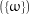
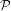
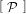
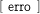
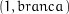
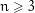
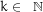
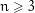
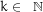

,P) que definem um espaço de
probabilidade discreto, ou seja,
,P) que definem um espaço de
probabilidade discreto, ou seja,
“Numbers that fool the Fermat test are called Carmichael numbers, and little is known about them other than that they are extremely rare. There are 255 Carmichael numbers below 100,000,000. The smallest few are 561, 1105, 1729, 2465, 2821, and 6601. In testing primality of very large numbers chosen at random, the chance of stumbling upon a value that fools the Fermat test is less than the chance that cosmic radiation will cause the computer to make an error in carrying out a ”correct”algorithm. Considering an algorithm to be inadequate for the first reason but not for the second illustrates the difference between mathematics and engineering.” Abelson & Sussman
Neste texto consideraremos triplas (Ω,,P) que definem um espaço de
probabilidade discreto, ou seja,
= 2Ω é a σ-álgebra de eventos,
→ ℝ é tal que
O lado esquerdo da equação (1) não depende de uma enumeração particular dos
conjuntos e um teorema do cálculo garante o mesmo para o lado direito: se uma série
de termos não-negativos converge então qualquer rearranjo dos termos resulta
numa série que converge para o mesmo valor (veja Bartle, 1976). Como
= 2Ω = {E: E ⊆ Ω} está fixo escrevemos somente (Ω,P). No caso de espaços
discretos a função de probabilidade P fica definida pelos valores de P({ω}) para todo
ω ∈ Ω pois decorre de (1) que
|
|
para todo evento E ⊆ Ω. Com isso, podemos tomar P: Ω → [0,1] e como consequência escrevemos P(ω) ao inves de P omitindo as chaves nos eventos unitários.
Exemplo 1. Quando nos referimos ao lançamento de uma moeda equilibrada, estamos considerando o espaço amostral {cara,coroa} com a função de probabilidade P({cara}) = P({coroa}) = 1∕2, portanto, P(∅) = 0 e P({cara,coroa}) = 1. Agora, suponha que uma moeda equilibrada é lançada até sair cara. Então, o espaço amostral que modela esse experimento é o conjunto das seqüencias ωn = (c1,c2,…,cn) tal que para cada n ≥ 1 temos cn = cara e para 1 ≤ i < n temos ci = coroa, logo Ω = {ωn: n ≥ 1}. Esse conjunto é claramente enumerável. Ainda, se definimos
|
| (2) |
Seja  a descrição de um evento P ⊆ Ω. Denotamos por
![P [ P ]](algale7x.png) |
a propbabilidade do evento P, isto é, P = P(P) e para evidenciar o espaço amostral escrevemos
|
|
Por exemplo, quando consideramos a probabilidade de um algoritmo aleatorizado A com entrada x responder errado, escrevemos
Nos algoritmos, nós vamos assumir a possibilidade de se fazer escolhas aleatórias, ou seja, assumir que os algoritmos dispõem de uma fonte de bits aleatórios e escrevemos a instrução
|
|
para denotar o fato de que a é uma variável do algoritmo e que após a execução da atribuição ← R o valor da variável a é um elemento qualquer de {0,1} com 1∕2. De um modo geral, se (Ω,P) é um espaço de probabilidade finito, então escrevemos a instrução

Observação 2. Para a análise de complexidade dos algoritmos, assumimos que a instrução a ← R{0,1} tem custo constante. No caso geral, a ← RΩ, é feito em tempo O(log |Ω|).
Exercício 3. Prove que P(E1 ∪ E2) = P(E1) + P(E2) - P(E1 ∩ E2), para quaisquer eventos E1 e E2 num espaço de probabilidade discreto.
Exercício 4. Prove que para qualquer seqüência enumerável (Ei)i≥1 de eventos num espaço discreto vale
Consideremos o problema de decidir se f = 0, onde f ∈ ℝ[x] é um polinômio não-nulo de grau no máximo d > 0. Esse problema e sua variante multivariáveis tem importância central em complexidade computacional e voltaremos a estudá-lo na seção 2.2 e veremos sua importância na seção 12. Por ora, limitamo-nos a descrição do caso mais simples para ilustrar as definições apresentadas até agora.
Dado f ∈ ℝ[x] de grau no máximo d, escolhemos aleatoriamente e uniformemente a ∈{1,2,…,3d}. Se f(a) = 0, então respondemos sim, f = 0, senão respondemos não, f≠0. Notemos que se f = 0 então a resposta sim está correta entretanto se f≠0, então pode ocorrer f(a) = 0 caso a escolha aleatória a seja uma raiz de f; nesse caso a resposta sim está errada. Uma resposta não está sempre correta, ou seja, de fato f≠0.
O espaço amostral da escolha aleatória do algoritmo acima é Ω = {1,2,…,3d} com probabilidade P(a) = 1∕|Ω|, para todo a ∈ Ω. Agora, seja f≠0, f ∈ ℝ[x] de grau no máximo d, e consideremos o evento
|
|
O algoritmo da figura 1 erra se a escolha resulta num elemento de E, ou seja, probabilidade do algoritmo da figura 1 falhar é igual a P(E) = |E|∕|Ω|, portanto,
|
|
e P ≤ grau(f)∕|Ω|, pois f tem no máximo grau(f) raízes em ℝ, pelo teorema fundamental da álgebra.
Corolário 6. O algoritmo da figura 1 erra com probabilidade no máximo d∕|Ω|. ♦
Num espaço (Ω,P), a probabilidade condicional do evento E com respeito ao evento A, em que P(A) > 0, é definida por
|
| (3) |
e P(E | A) é lido como a probabilidade de E dado A.
Exemplo 7. Dois dados, um azul e outro verde, são lançados e cada uma das seis faces são eqüiprováveis nos dois dados (dizemos que os dados são equilibrados). Qual é a probabilidade do dado verde ter resultado 6 dado que a soma dos resultados foi 8? O espaço amostral tem 36 elementos eqüiprováveis, formado pelos pares ordenados (azul,verde) dos resultados possíveis. O evento “a soma é 8” é A = {(2,6),(3,5),(4,4),(5,3),(6,2)} logo a probabilidade é 1∕5. De outro modo, E = {(x,6): 1 ≤ x ≤ 6,x ∈ ℕ} e
|
|
Exemplo 9. Numa cômoda há três gavetas e em cada gaveta um par de meias. Na primeira gaveta há um par de meias brancas, na segunda um par de meias pretas e na gaveta que resta um par com um pé de cada cor, preta e branca.
Uma gaveta é escolhida aleatoriamente e, sem olhar para o interior da gaveta, um pé de meia é escolhido aleatoriamente e a gaveta é fechada. O pé de meia retirado é branco. Qual a probabilidade de o outro pé que ficou sozinho na gaveta ser preto?
Consideremos o espaço amostral formado pelos pares
| branca | preta | |
| 1 | 1∕3 | 0 |
| 2 | 0 | 1∕3 |
| 3 | 1∕6 | 1∕6 |
Se A é o evento “retirou uma meia branca”, A = {,(3,branca)} e E o evento “ficou uma meia preta”, E = {(2,preta),(3,branca)}, então
|
|
Exercício 10 (Lei das probabilidades totais). Prove que se E1,…,Em é uma partição de Ω então para todo evento B
|
| (4) |
Prove que se {Ei}i∈ℕ é uma partição de Ω então para todo evento B
|
|
Exemplo 11 (Monty Hall). Esse exemplo é baseado num programa de um canal de televisão norte-americano chamado “let’s make a deal” apresentado por Monty Hall, daí vem o nome do problema. Esse problema é bastante conhecido e já causou muita controvérsia.
Em um programa de auditório, um convidado deve escolher uma dentre três portas. Atrás de uma das portas há um carro e atrás de cada uma das outras duas há um bode. O convidado ganhará como prêmio o objeto que estiver atrás da porta que ele escolher.
O protocolo do jogo é o seguinte: o convidado escolhe, provisoriamente, uma das três portas. Neste momento o apresentador do programa, que sabe o que há atrás de cada porta, abre uma das outras duas portas sempre revelando um dos bodes. O convidado agora tem a opção de ficar com a porta que ele escolheu ou trocar pela outra porta fechada.
Que estratégia o convidado deve adotar pra ter mais chance de ganhar o carro?
Se o convidado fica com a porta que escolheu inicialmente, então a probabilidade de ganhar um carro é 1∕3, que é a probabilidade dele ter escolhido a porta certa logo de início.
Vamos supor que o convidado troca de porta. Denotamos por E o evento “ganha o carro” e por A o evento “a primeira escolha é a correta”, isto é, era a porta que escondia um carro. Claramente, P(A) = 1∕3. Agora, se a primeira escolha era a correta então o convidado não ganha o carro, ou seja, P(E | A) = 0, caso contrário o convidado ganha o carro, ou seja, P(E | A) = 1. Com isso temos
|
|
portanto, é melhor trocar de porta. Tente você mesmo.
Dizemos que os eventos A e B são independentes se
|
| (5) |
Uma coleção de eventos E1,…,En é k-a-k independente se para todo subconjunto
de índices {i1,i2, ,ik} ⊆{1,2,…,n}
,ik} ⊆{1,2,…,n}
|
| (6) |
e, essa coleção é mutuamente independente se é k-a-k independente para todo k, onde 2 ≤ k ≤ n.
Exemplo 13. Considere três lançamentos de uma moeda equilibrada, E12 é o evento “o resultado da primeira e da segunda coincidem”, E13 o evento “o resultado da primeira e da terceira coincidem” e E23 o evento “o resultado da segunda e da terceira coincidem”. Os eventos são 2-a-2 independentes, por exemplo, E12 ∩ E13 = {(cara,cara,cara),(coroa,coroa,coroa)} com probabilidade 1∕4 e P(E12) = P(E13) = P(E23) = 1∕2, entretanto esses eventos não são mutuamente independentes pois P(E12 ∩ E13 ∩ E23) = 1∕4.
Exemplo 14 (k-corte-mínimo, Karger (1993)). Seja G = (V,E) um grafo. Sem perda de generalidade podemos supor que V = {1,2,…,n}. Um subconjunto de arestas de G da forma
|
| (7) |
é chamado de corte definido por A em G. Um corte mínimo em G é um corte com
Um multigrafo é um par (V,E) onde V é um conjunto finito cujos elementos são chamados de vértices e E é um multiconjunto finito onde cada elemento é chamado de aresta e é formado por dois vértices distintos. Seja M um multigrafo. Em M definimos por contração da aresta e ∈ E(M) a operação que resulta no multigrafo com os extremos de e identificados e os laços sobre esses extremos removidos, o multigrafo resultante é denotado por M∕e.
A idéia do algoritmo que apresentaremos a seguir para determinar se mincut(G) ≤ k é repetir a seqüência de operações
até que restem 2 vértices. As arestas que ligam esses 2 vértices são arestas de um corte no grafo original.
Exemplo. A figura 2 representa uma seqüência de três contrações de arestas, a aresta que sofre a contração está em negrito.
Se no próximo passo (fig. 3) identificarmos os vértices 1,4,5 com o 2,3 então temos o corte definido por {6} em G (fig. 3 (a)), que tem duas arestas e é um corte mínimo. Por outro lado, se identificarmos 2,3 e 6 então temos o corte definido por {2,3,6} e que tem 4 arestas (fig. 3 (b)).
O seguinte algoritmo recebe um par (G,k) e se mincut(G) > k então ele responde não pois o resultado das contrações define um corte em G (exercício 17) e todos os cortes têm mais que k arestas. Entretanto, se mincut(G) ≤ k pode ocorrer do algoritmo não descobrir um corte com menos que k arestas e responder não. Logo, se a resposta é sim, então o algoritmo respondeu certo e se a resposta for não a resposta pode estar errada, no entanto a probabilidade da resposta estar errada é no máximo 1∕2.
 de ordem  e 
de ordem  e 
Lema 15. Seja G com pelo menos três vértices. Fixado um corte mínimo C em G, a probabilidade do algoritmo da figura 4 determinar C no laço mais interno (linha 4) é pelo menos 1∕.
Demonstração. Seja G = (V,E) um grafo e C = E(A,A) um corte mínimo em G definido por A ⊂ V com k arestas. Notemos que de mincut(G) ≥ k o grau mínimo de um vértice em G é pelo menos k e que, portanto, G tem pelo menos kn∕2 arestas.
O algoritmo devolve C se nas n - 2 iterações somente contrai arestas com ambos os extremos em A ou ambos extremos em A.
Seja Bi o evento “na i-ésima escolha aleatória, e ⁄∈ C”, isto é,
A probabilidade de escolher uma aresta de C na primeira escolha aleatória é |C|∕|E(G0)| ≤ k∕(nk∕2), logo
|
|
Agora, a probabilidade de escolher uma aresta de C na segunda escolha, dado que uma aresta de C não foi escolhida na primeira, é |C|∕|E(G1)| ≤ k∕(k(n - 1)∕2) pois o multigrafo tem n - 1 vértice e grau mínimo pelo menos k, logo
|
|
A probabilidade de nenhuma aresta escolhida ser de C é P e pelo exercício 12, temos que
|
|
e o lema segue da definição de coeficiente binomial. ♦
Demonstração. Se G tem um corte com no máximo k arestas, então a probabilidade do algoritmo não encontrar um tal corte em nenhuma das iterações do laço é no máximo
|
| (8) |
♦
Se (Ωi,Pi), para 1 ≤ i ≤ n, são espaços de probabilidade então o espaço produto é o espaço (∏ i=1nΩi,P) com
 × Ωn.
× Ωn.
Exercício 19. Prove que uma escolha aleatória (d1,d2,…,dn) em {0,1}n é equivalente a escolher aleatoriamente di em {0,1} para cada i, 1 ≤ i ≤ n, com as escolhas mutuamente independentes.
Exemplo 20 (Gerador de números aleatórios). Dado um inteiro positivo M, a algoritmo abaixo devolve uma escolha aleatória t ∈R{0,…,M-1} a partir de uma fonte de bits aleatórios.
 o número de bits de
o número de bits de  ;
;
 faça
faça
 ;
;
O resultado das escolhas aleatórias, i.e., a seqüência dk-1dk-2…d0, é qualquer número em Ω = {0,1,…,2k - 1} na representação binária; a probabilidade de ocorrer uma seqüência particular de bits é (1∕2)k. Seja A = {0,1,…,M - 1}, então a probabilidade do algoritmo responder t, para algum t ∈ A é
|
|
Observação 21. Note que não há, a princípio, garantia que o algoritmo acima termine. Voltaremos a esse fato adiante (veja o exercício 53), mas deixamos registrado que o algoritmo pára com probabilidade 1.
Exercício 22. Mostre que gerar um número n de k bits e devolver n modM, o que evitaria a execução de mais que uma iteração do repita, não resulta em uma resposta em {0,…,M - 1} com probabilidade 1∕M.
Antes de descrevermos o problema poremos algumas definições para evitar ambiguidades. Um polinômio nas variáveis x1,x2,…,xn é uma expressão finita da forma
 | (9) |
em que i1,i2,…,in ∈ ℕ e ci1,i2,…,in são tomados num corpo F. O grau do polinômios é o maior valor de i1 + i2 + + in para ci1,i2,…,in≠0 e o grau em xj é o maior valor de ij para ci1,i2,…,in≠0.
Dados dois polinômios p e q descritos por expressôes aritméticas escrevemos p ≡ q se os polinômios são iguais quando escritos na forma canônica (9). Por exemplo, a seguinte identidade é verdadeira (ambos são o determinante da matriz de Vandermonde)
|
| (10) |
onde Sn é o grupo das permutações de {1,2,…,n}. O polinômio ∏ 1≤i<j≤n(xi - xj) escrito como combinação linear de monômios resulta numa expressão da forma
|
|
onde z ∈{xi,xj} para cada par 1 ≤ i < j ≤ , com a soma de 2n parcelas, cada uma
de tamanho O(n2), totalizado uma expressão de tamanho O(n22n), contra a
expressão original de tamanho O(n), ou seja, somente uma escrita da forma canônica
levaria um algoritmo a gastar tempo exponencial.
, com a soma de 2n parcelas, cada uma
de tamanho O(n2), totalizado uma expressão de tamanho O(n22n), contra a
expressão original de tamanho O(n), ou seja, somente uma escrita da forma canônica
levaria um algoritmo a gastar tempo exponencial.
Generalizando algoritmo e a sua análise apresentados na seção 1.1 provaremos o seguinte resultado que tem aplicação imediata no projeto de um algoritmo probabilístico para o caso de identidade de polinômios multivariado.
Teorema 23 (Schwartz-Zippel). Seja f ∈ F[x1,…,xn], f ⁄≡ 0, um polinômio de grau d > 0 e S ⊂ F finito. Então
Demonstração. Fixamos S ⊂ F finito e consideremos todos elementos de S equiprováveis. Definimos, para cada n ∈ ℕ, o espaço produto Ωn = Sn com PΩn(ω1,…,ωn) = (1∕|S|)n para todo (ω1,ω2,…,ωn) ∈ Ωn. Seja f ∈ F[x1,…,xn] um polinômio não-nulo de grau no máximo d, d > 0 e definimos o evento En(f) ⊆ Ωn
|
|
A prova é por indução em n. Para n = 1 vimos na seção 1.1 que
|
| (11) |
Para n > 1, seja k o maior grau em xn no polinômio f e escrevemos
|
| (12) |
com gi ∈ F[x1,…,xn-1] de grau ≤ d - i e 0 ≤ i ≤ k.
Assumimos que
|
| (13) |
e vamos provar que PΩn(En(f)) ≤ d∕|S|. Definimos o evento
 |
e temos
 |
Agora, identificamos E′ com En-1(gk) × S da maneira óbvia e temos
 En(f) ∩E′
En(f) ∩E′ é
dado por
é
dado por |
|
como queríamos provar. ♦
Corolário 24. Para todo S ⊂ F finito, um algoritmo que escolhe aleatoriamente (x1,…,xn) ∈ Sn e decide se f(x1,…,xn) ≡ 0 baseado no teste f(x1,…,xn) = 0 erra com probabilidade no máximo d∕|S| no caso f ⁄≡ 0. ♦
O teorema acima permite-nos estimar o erro do seguinte algoritmo que usa rodadas independentes para reduzir a probabilidade de erro.
 e qualquer com
e qualquer com
 então devolva(não);
então devolva(não);
Pelo corolário 24
|
|
Dadas as matrizes reais A,B,C quadradas de dimensão n queremos decidir se vale a igualdade AB = C. Esse teste pode ser feito em O(n3) operações aritméticas usando o algoritmo padrão para o produto de matrizes. O algoritmo de Coppersmith–Winograd (Knuth, 1981) realiza o produto de duas matrizes n × n em O(n2,376) operações aritméticas.
O seguinte algoritmo aleatorizado testa se AB = C com O(n2) operações aritméticas. Com uma escolha aleatória v = (r1,…,rn) ∈R{1,…,k}n testamos se ABv = Cv; se valer a igualdade então responde sim, senão responde não. Assim, se de fato AB = C então o algoritmo responde certo, mas se AB≠C então pode ser que uma escolha ruim de v leve o algoritmo a responder sim, um falso positivo. Para reduzir a complexidade o produto é feito da seguinte forma: A(Bv) = Cv.
 e um natural
e um natural 
Definimos S = {1,…,k}. Para analisar a probabilidade de erro vamos introduzir uma estratégia chamada princípio da decisão adiada. Seja D = AB - C, escreva D = (di,j) e assuma que D≠0. Queremos estimar
|
|
De D≠0, existem ℓ e c tais que dℓ,c≠0. Como ∑ j=1ndℓ,jrj = 0 temos
|
| (14) |
e, se consideramos que cada coordenada foi sorteada independentemente, podemos assumir que ri, para todo i≠c, foi sorteado antes de rc (a escolha de rc foi adiada), então o lado direito da igualdade (14) acima fica determinado e a probabilidade de sortear rc que satisfaça a igualdade é no máximo 1∕|S|. Portanto, P ≤ 1∕|S|.
Pondo em outra forma, sejam
|
|
onde D, ℓ e c são como acima. Podemos particionar o espaço amostral Sn definindo para cada (n - 1)-upla de elementos de S, (r1′,…,rn-1′) ∈ Sn-1, o evento
|
|
e assim, para cada v = (r1,…,rn) ∈ Sn existe um, e só um, (r1′,…,rn-1′) ∈ Sn-1 tal que v ∈ Ar1′,…,rn-1′. Pela lei das probabilidades totais e de E ⊂ E′
|
|
da independência das coordenadas temos
|
|
assim
|
|
Exercício 25. Lançamos dez dados equilibrados. Supondo os resultados independentes, use o princípio da decisão adiada para determinar a probabilidade da soma dos resultados ser divisível por 6.
Exercício 26. Um baralho de 52 cartas é embaralhado de modo que a disposição final é qualquer uma dentre as 52! possibilidades com igual probabilidade. Denote por E o evento “a carta do topo é de espadas” e F é o evento “a quarta carta a partir do topo é espada”. Use o princípio da decisão adiada para provar que P(E) = P(F).
Se A,B são eventos de Ω então segue da lei das probabilidades totais que P(A) = P(A | B)P(B) + P(A | B)P(B) e, portanto,
|
|
e de modo geral
Exemplo 28. Suponha que probabilite é uma doença que afeta 1% da população, que existe um teste para detectar probabilite e que não é perfeito: há 3% de falsos positivos e 2% de falsos negativos. Dado que o teste para um determinado paciente deu positivo, qual é a probabilidade que ele tenha de fato a doença?
A lenda diz que a maioria dos médicos respondem 97% sem pestanejar, já que há 3% de falsos positivos. Certamente, essa justificativa está errada, vamos determinar essa probabilidade usando o teorema de Bayes.
Seja A o evento “o exame deu positivo” e B o evento “tem probabilite”. Por Bayes
Agora, suponha que o paciente foi ao médico por que estava com dor de cabeça e o teste deu positivo. É sabido que todos que tem probabilite apresentam dor de cabeça, enquanto que 10% da população apresenta dor de cabeça; também é sabido que o evento C, “ter dor de cabeça”, não afeta a precisão do teste. Com esse fato, a probabilidade de estar doente dado que o teste deu positivo e o paciente tem dor de cabeça é
A seguir veremos duas aplicações do Teorema de Bayes em computação.
Um sistema de codificação é uma quina (,,,,) de conjuntos, onde é o
espaço dos textos comuns; é o espaço dos textos codificados; é o espaço das
chaves; é o espaço das funções de codificação Ek: → , onde k ∈; é o
espaço das funções de decodificação Dk: → , onde k ∈; tais que para cada
e ∈ existe d ∈ tal que Dd(Ee(p)) = p.
Exemplo 29 (Cifra de César). Essa cifra identifica o alfabeto com o ℤ26, assim = ℤ26 e ,= . Para e,d ∈ ℤ26 temos as funções
Comum : essaauladasono
Codificado: hvvddzodgdvrqr
Exemplo 30 (one-time pad). Gilbert Sandford Vernam inventou o seguinte sistema de codificação: dada uma chave k, escolhida previamente
 | (16) |
O fato da chave ser reusada tornava o sistema inseguro. Pouco tempo depois Joseph Mauborgne propôs que a chave fosse aleatória e usada uma única vez (one-time pad) Claude Shannon provou que o one-time pad é uma codificação “inviolável” num sentido que esclarecemos a seguir.
A idéia de sigilo perfeito pode ser interpretada da seguinte maneira: escolhemos um texto P ∈ de acordo com a distribuição P (baseada, por exemplo, na freqüência com que as letras aparecem nas palavras em uma determinada língua) e o codificamos. Entregamos ao adversário o texto codificado C e perguntamos qual a probabilidade do texto que foi codificado? Se o adversário não pode fazer melhor do que responder P(P), ou seja, o conhecimento de C não torna uns textos mais prováveis e outros menos prováveis do que eles são, significa que ele não ganhou informação com o conhecimento de C e temos sigilo perfeito.
Fixamos um sistema com ,, finitos e uma função de probabilidade P: → [0,1] tal que P(P) > 0 (∀P ∈). Tomamos o espaço produto (×,P) com probabilidade P nas chaves e P nos textos e definimos as funções sobre o espaço amostral
dessa forma, definimosUm sistema de codificação nas condições acima tem sigilo perfeito se para todo P ∈ e todo C ∈
|
| (18) |
Exemplo 31. O seguinte sistema de codificação não tem sigilo perfeito. Tome = {α,β} com P(α) = 1∕4 e P(β) = 3∕4, os textos codificados = {a,b} e chaves = {0,1} com P(0) = 1∕4 e P(1) = 3∕4. A cifra EK(P) é dada por
| P\K | 0 | 1 |
| α | a | b |
| β | b | a |
resulta em P = 5∕8 e P = 3∕8. As probabilidades condicionais no lado esquerdo de (18) são dadas abaixo
| [p = α | c = a] | [p = β | c = a] | [p = α | c = b] | [p = β | c = b] | |
| P[p = P | c = C] | 1/10 | 9/10 | 1/2 | 1/2 |
Esse sistema de codificação não tem sigilo perfeito pois se o adversário recebe o texto codificado a então ele tem quase certeza de que o texto comum que foi cifrado é β.
Exemplo 32. Um exemplo de sistema de codificação com sigilo perfeito é o One-time pad com = = ={0,1}2. A seguinte tabela tem entradas P; fixado P as possíveis cifras são PxorK onde K ∈R, portanto, independente de P as cifras são equiprováveis.
| C | 00 | 01 | 10 | 11 | ||
| P(P) | P | |||||
| 1∕6 | 00 | 1/4 | 1/4 | 1/4 | 1/4 | |
| 1∕3 | 01 | 1/4 | 1/4 | 1/4 | 1/4 | |
| 1∕4 | 10 | 1/4 | 1/4 | 1/4 | 1/4 | |
| 1∕4 | 11 | 1/4 | 1/4 | 1/4 | 1/4 | |
A tabela abaixo mostra P,
| C | 00 | 01 | 10 | 11 | ||
| P(P) | P | |||||
| 1∕6 | 00 | 1∕6 | 1∕6 | 1∕6 | 1∕6 | |
| 1∕3 | 01 | 1∕3 | 1∕3 | 1∕3 | 1∕3 | |
| 1∕4 | 10 | 1∕4 | 1∕4 | 1∕4 | 1∕4 | |
| 1∕4 | 11 | 1∕4 | 1∕4 | 1∕4 | 1∕4 | |
Nesse exemplo temos sigilo perfeito pra essa distribuição particular P.
Lema 33. Para o one-time pad com as chaves equiprováveis
Demonstração. Fixado P, temos C = PxorK se e só se K = PxorC. Como K é escolhida aleatoriamente a probabilidade é (1∕2)n. ♦
Demonstração. Usando o teorema de Bayes
Observação 35. O one-time pad não é o único sistema que possui sigilo perfeito, mas foi o primeiro a ser descoberto.
Exercício 36. Prove ou refute: a cifra de César, exemplo 29, tem sigilo perfeito se em as chaves são equiprováveis.
Exercício 37 (Teorema de Shannon). Dados um sistema de codificação com ,, finitos e |K| = |C| e dada uma distribuição de probabilidade P: → [0,1] tal que P(P) > 0, para todo P ∈ , esse sistema tem sigilo perfeito se e somente se as chaves são equiprováveis e se para todo P ∈ e todo C ∈ existe um único K ∈ tal que EK(P) = C.
O uso de técnicas baseadas no teorema de Bayes para classificar mensagens eletrônicas (emails) surgiu em 1996, num trabalho de Jason Rennie chamado Ifile e ganhou impulso com a proliferação de mensagens indesejadas, conhecidas por spam, e o ensaio Graham (2002) que lançou a ideia de usar esses classificadores bayesianos contra spam. A seguir mostraremos, baseados em Graham (2002), uma aplicação do teorema de Bayes na classificação de mensagens eletrônicas como spam.
Vamos começar com um caso simplificado. Para uma determinada mensagem, denotamos por S, A, B os evento “spam”, “contém a palavra A”, “contém a palavra B”, respectivamente. Então
|
|
Agora vamos pressupor que a probabilidade de A é independente da probabilidade de B, de modo que a probabilidade da intersecção pode ser substituída pela multiplicação das probabilidades
|
|
As probabilidades que conhecemos são as da forma P(S | A) (que podemos aprender da nossa caixa de spams), mas não sabemos nada de P(A | S). A ideia de Graham é aplicar mais duas vezes o teorema de Bayes
|
|
e analogamente para P(B | S), P(A | ) e P(B | ), que substituído na equação anterior
|
|
os fatores P(A)P(B) anulam-se deixando
|
|
portanto,
|
|
As probabilidades do lado direito podem ser estimadas por contagem a partir das mensagens recebidas. A partir daí definimos um limiar para a probabilidade no lado direito. A cada nova mensagem, se P(S | A ∩ B) é maior que esse limiar então ela é classificada como spam.
Genericamente, temos o espaço amostral dado por {0,1}n de modo que cada coordenada indica se uma mensagem tem (1) ou não tem (0) uma determinada característica e a primeira coordenada, especificamente, é 1 se a mensagem é spam e 0 caso, contrário. Assim o evento S dado por {(1,b2,…,bn): bi ∈{0,1}, 2 ≤ i ≤ n} é o evento “é spam” e S = {(0,b2,…,bn): bi ∈{0,1}, 2 ≤ i ≤ n} é o evento “não é spam”. Denotamos por Ci o evento “tem a característica i” que corresponde a todos os vetores cuja i-ésima coordenada é 1.
Vamos assumir que as características 2,3…,n são mutuamente independentes
Agora, suponha que temos 1.000 mensagens, 500 spams e 500 não spams. O trabalho inicial é definir características das mensagens que são spams das que não são. Por exemplo, nas minhas mensagens muitos dos spams têm a palavra watch enquanto que muitos dos não spams têm a palavra ’reunião’; a maioria das mensagens têm a palavra ’a’, tantos spams quanto não spams, logo ’a’ não deve ser uma característica classificatória.
Para a característica i, seja ki a quantidade de spams que têm a característica i e seja ℓi a quantidade de não spams que têm a característica i; definimos
|
| (20) |
e pelo teorema de Bayes
|
| (21) |
Recebida uma mensagem, filtramo-lá para determinar suas características, digamos Ci com i ∈ I, e (19) determina a probabilidade dessa mensagem ser spam. Periodicamente, devemos rever e atualizar os valores de (20) e (21) para que o filtro seja efetivo na classificação dos spams.
Uma variável aleatória discreta X é uma função X: Ω → ℝ, onde Ω é o espaço amostral de um espaço de probabilidade discreto (Ω,P). Nesse caso, escrevemos [X = t] para o evento {ω ∈ Ω: X(ω) = t}.
Sejam X1,X2,…,Xn variáveis aleatórias definidas sobre o mesmo espaço amostral. Essas variáveis são independentes k-a-k se para qualquer I ⊂{1,2,…,n}, |I| = k, e para quaisquer xi (i ∈ I)
|
| (22) |
e essas variáveis são mutuamente independentes se são k-a-k independente para todo k com 2 ≤ k ≤ n.
A esperança, ou valor médio, da variável aleatória X, que denotamos por EX, é dado por
|
|
desde que ∑ i|i|P converge.
Exemplo 39. Seja X uma variável aleatória inteira e positiva tal que P = (ci3)-1, onde c é o valor da série ∑ i≥11∕i3. Essa variável tem valor esperado
|
| (23) |
Por outro lado,
|
| (24) |
Exemplo 40. Seja X o número de lançamentos de uma moeda equilibrada até sair cara (veja exemplo 1), então
![E X = ∑ iP [ X = i ] = ∑ i-= 2.
i≥1 i≥1 2i](algale160x.png) | (25) |
Se a moeda é viciada e p é a probabilidade de sair cara, então a probabilidade de ωn, definido no exemplo 1, supondo que os resultados são independentes é (1 - p)n-1p e
|
| (26) |
Teorema 41 (Linearidade da esperança). Se X e Y são variáveis aleatórias sobre Ω com esperanças finitas e c ∈ ℝ uma constante qualquer então
|
| (27) |
Demonstração. Usando a definição e a convergência absoluta no caso de variável sobre um espaço infinito (isso permite rearranjar os termos da série)
|
|
♦
O teorema acima estende-se, facilmente, usando indução, para provar que se X = ∑ i=1nXi então
|
|
e, também pode-se provar que se X = ∑ i≥1Xi e ∑ i≥1 E|Xi| converge, então
|
|
Exemplo 42. Considere os inteiros positivos com probabilidade P(n) = 2-n e a as variáveis aleatórias {Xn}n≥1 dadas por
|
|
Logo
 = 1. Logo, não
vale que E∑
nXn = ∑
n EXn.
= 1. Logo, não
vale que E∑
nXn = ∑
n EXn.
Exercício 43. Se X e Y são variáveis aleatórias independentes sobre um espaço amostral Ω, então
|
| (28) |
A esperança condicional de uma variável aleatória com respeito ao evento E é definida, naturalmente, por
|
| (29) |
Exemplo 44. Se dois dados equilibrados são lançados, X1 e X2 são os valores obtidos e X = X1 + X2 então
Eventualmente, consideraremos variáveis aleatórias que assumem valores em um conjunto enumerável (finito ou não) S arbitrário. Notemos que se X é uma variável aleatória, então (Im(X),PX) com PX(s) = P é um espaço de probabilidade discreto. A função PX é a distribuição de probabilidade da variável X. Com isso, as vezes identificamos uma variável com sua distribuição e usamos a notação
|
|
na situação em que, por exemplo, estamos interesados na probabilidade P do evento {ω ∈ Ω: X(ω)2 = s}.
Uma variável aleatória X com distribuição de Bernoulli vale 1 com probabilidade de sucesso p e 0 com probabilidade de fracasso 1 - p; o valor esperado é
|
|
Nesse caso, escrevemos X ~ Be(p).
Uma variável aleatória que assume valores em {0,1} é chamada de variável 0–1 ou variável indicadora.
Sejam n variáveis aleatórias X1,…,Xn independentes (mutuamente) e com distribuição de Bernoulli Be(p), com probabilidade de sucesso p > 0. Então o número de sucessos é a variável aleatória S = ∑ i=1nXi de modo que
|
| (30) |
Nesse caso, S assume valores em {0,1,…,n} e dizemos que S tem distribuição binomial com parâmetros n e p, o que é denotado por S ~ Bi(n,p).
Um experimento idealizado que tem dois resultados possíveis, sucesso e fracasso é chamado de ensaio de Bernoulli. Seja G o número de ensaios independentes de Bernoulli até que ocorra um sucesso, então G assume valores em ℕ e
|
|
Dizemos que G é uma variável aleatória com distribuição geométrica, que denotamos por G ~ Ge(p). Do exemplo 40 sabemos que se G ~ Ge(p), então
|
| (31) |
Exemplo 50. Seja X o número de lançamentos de uma moeda até sair cara, onde P(cara) = p ∈(0,1). Nesse exemplo, vamos usar esperança condicional para mostrar que EX = 1∕p. Seja E o evento {ω1}, ou seja, o primeiro lançamento é cara (veja a definição de ωn no exemplo 1), então (veja exercício 45)
 E= EX′+ 1= E[X′] + 1 = E[X] + 1, essa última
igualdade segue do exercício 49 acima. Substituindo na equação acima ficamos
com
E= EX′+ 1= E[X′] + 1 = E[X] + 1, essa última
igualdade segue do exercício 49 acima. Substituindo na equação acima ficamos
com
|
|
portanto EX = 1∕p.
Exemplo 51 (Uma análise do algoritmo da figura 5). No caso do gerador de números aleatórios, algoritmo da figura 5, se I é o número de iterações do repita então I ~ Ge(), logo EI = 2k∕M ≤ 2. Ainda, como cada iteração do algoritmo da figura 5 sorteia um bit em tempo constante, o sorteio de um número custa O(k) e a computação de N e a comparação custam O(k), portanto o tempo esperado de execução é O(k)EI = O(k) = O(log M).
Exercício 53. Prove que o algoritmo da figura 5 termina com probabilidade 1.
Seja X uma variável aleatória que assume valores num conjunto finito S. Dizemos que X tem distribuição uniforme sobre S se P = 1∕|S| para qualquer s ∈ S, isto é, X assume qualquer um dos |S| valores com probabilidade 1∕|S|. Nesse caso escrevemos X ~ U(|S|).
Exemplo 54. Note que na nossa notação N ← R{0,…,b} podemos interpretar N como uma variável aleatória com distribuição uniforme.
O problema da Satisfatibilidade é o problema de decidir se uma fórmula booleana na forma normal conjuntiva (CNF) admite uma valoração das suas variáveis que a torna verdadeira, esse problema tem um papel central em Complexidade Computacional e não se conhece algoritmo eficiente que o resolva, e foi provado por Cook e Levin que Satisfatibilidade é NP-completo. O problema de máxima Satisfatibilidade é o problema de otimização que consiste em determinar o maior número de cláusulas que podem ser satisfeitas por uma valoração de suas variáveis; esse problema é NP-difícil. Nessa seção estamos interessados nesse problema, que passamos a descrever formalmente.
O MAX 3-SAT (Maximum 3-Satisfiability Problem) é o problema: dado uma
fórmula booleana 3CNF sobre o conjunto de variáveis V = {x1,x2,…,xn}, determinar
o maior número possível de cláusulas satisfeitas (verdadeiras) dentre todas
valorações ν: V → {verdadeiro,falso}. Uma fórmula 3CNF é da forma
C1 ∧ C2 ∧  ∧ Ck com cada cláusula Ci sendo uma disjunção de 3 literais (literal é
uma variável ou a negação dela).
∧ Ck com cada cláusula Ci sendo uma disjunção de 3 literais (literal é
uma variável ou a negação dela).
Por simplicidade adotaremos valorações ν: V → {0,1}, com 0 representando falso e 1 representando verdadeiro.
Exemplo 55. Por exemplo, = {x1,x2,x3},{x2,x3,x4},{x3,x4,x1}, é uma instância de 3-SAT que corresponde a fórmula booleana
|
|
Uma valoração que satisfaz essa fórmula é x1 = 1, x2 = 1, x3 = 1 e x4 = 0.
No que segue, vamos supor que as cláusulas não têm variáveis repetidas e vamos denotar por opt = opt() o valor ótimo do problema de otimização descrito acima com instância .
Sejam = {C1,C2,…,Ck} uma instância de 3-SAT, v ∈R{0,1}n uma valoração aleatória das variáveis de e definimos a variável aleatória Xi(ν) = 1 se a cláusula Ci foi satisfeita por ν, caso contrário Xi(ν) = 0, para todo i. Então Xi ~ Be(1 - ) para todo i, pois uma cláusula não é satisfeita se cada uma de seus literais não o for, o que ocorre com probabilidade 1∕8, e o número de cláusulas satisfeitas por uma valoração é
|
| (32) |
Pelo exercício 48, EX = 7k∕8 e como o valor ótimo não excede k temos o seguinte resultado.
Teorema 56. O valor esperado para o número de cláusulas satisfeitas numa valoração aleatória das variáveis de uma fórmula 3-CNF é pelo menos opt. ♦
Corolário. Para toda instância de MAX 3-SAT, existe uma valoração que satisfaz pelo menos de todas as cláusulas.
Demonstração. Se a média é 7k∕8 então deve haver uma valoração que que satisfaz pelo menos 7∕8 das k cláusulas. ♦
Corolário. Toda instância com no máximo 7 cláusulas é satisfatível. ♦
Disso tudo, podemos tirar o seguinte algoritmo aleatorizado para esse problema.
 ;
;
Diferente do que vimos até agora neste capítulo, o algoritmo da figura 8 não
responde errado, entretanto, a complexidade de tempo é uma variável aleatória
proporcional ao número de rodadas do repita. Agora, qual é o valor esperado do
número de valorações aleatórias até descobrir um que satisfaça pelo menos  k
cláusulas?
k
cláusulas?
Seja Z o número de rodadas do repita até que uma valoração que satisfaça a condição de parada é descoberta. Cada iteração é um experimento de Bernoulli com probabilidade de sucesso p. Para estimar p, seja pj é a probabilidade de uma valoração aleatória satisfazer exatamente j cláusulas, então EX = ∑ j=0kjpj, onde X é como em (32) (o número de clausulas satisfeitas por uma valoração) e
|
|
portanto kp ≥ 7k∕8 - ≥ 1∕8, logo p ≥ 1∕8k. Como Z tem distribuição geométrica, EZ ≤ 8k.
Para a análise da complexidade do algoritmo, vamos supor que a avaliação de cada cláusula pode ser feita em tempo constante. Assim, cada iteração do repita tem custo O(k + n), portanto, esse algoritmo tem tempo esperado 8kO(k + n) = O(k + kn). Mais que isso pode ser dito nesse caso, a probabilidade de uma execução exceder o tempo esperado é pequena. De fato, pelo exercício 52 a probabilidade do número de iterações ultrapassar duas vezes o valor esperado é
|
|
para todo k ≥ 1. A probabilidade do número de iterações ser da ordem de k2 é
Exercício 57. O MAX SAT (Maximum Satisfiability Problem) é o
problema: dado uma fórmula booleana CNF (C1 ∧ ∧Ck) sobre um conjunto
de variáveis V = {x1,x2,…,xn}, determinar uma valoração ν: V → {0,1} que
satisfaça o maior número possível de cláusulas. Esse também é um problema de
otimização NP-difícil. Prove que toda fórmula booleana C1 ∧
∧Ck) sobre um conjunto
de variáveis V = {x1,x2,…,xn}, determinar uma valoração ν: V → {0,1} que
satisfaça o maior número possível de cláusulas. Esse também é um problema de
otimização NP-difícil. Prove que toda fórmula booleana C1 ∧  ∧ Ck admite
uma valoração que satisfaz metade das cláusulas. Derive desse fato um algoritmo
que recebe uma fórmula CNF e devolva uma valoração que satisfaça metade
das cláusulas. Analise seu algoritmo de modo análogo às análises feitas para o
algoritmo da figura 8.
∧ Ck admite
uma valoração que satisfaz metade das cláusulas. Derive desse fato um algoritmo
que recebe uma fórmula CNF e devolva uma valoração que satisfaça metade
das cláusulas. Analise seu algoritmo de modo análogo às análises feitas para o
algoritmo da figura 8.
Dado n ∈ ℕ, vamos considerar o problema de escolher um número primo em {n + 1,…,2n}. Para esse problema não se conhece um algoritmo determinístico de tempo subexponencial e gerar primos grandes de maneira “imprevisível” é uma operação fundamental da criptografia (um pouco do assunto aqui) por isso se faz necessário fazê-lo de forma eficiente.
O postulado de Bertrand garante que existe pelo menos um primo nesse intervalo, entretanto, da prova de Chebyshev para esse postulado decorre que
|
| (33) |
onde π(n) é a quantidade de primos menores ou iguais a n (Ribenboim, 1996). Uma escolha aleatória em {n + 1,…,2n} tem probabilidade ρ = (π(2n) - π(n))∕n de resultar um primo, com
|
| (34) |
Assuma que conhecemos um algoritmo (determinístico) Teste_Primo(m) que, para todo m ∈ ℕ, retorna verdadeiro se m é primo e retorna falso caso contrário. Com isso, podemos gerar m ∈R{n + 1,…,2n} até que se escolha um primo.
Nesse caso temos uma distribuição de probabilidades no conjunto das instâncias do algoritmo Teste_Primo, que recebe uma entrada escolhida aleatoriamente em {n + 1,…,2n}. O espaço amostral é composto pelas seqüências ω = (m1,m2,…,mp) tais que mi é composto para 1 ≤ i < p e mp é primo. Denote por I o número de iterações do repita, ou seja, I(ω) é o comprimento de ω. Essa variável I tem distribuição geométrica com probabilidade de sucesso
|
| (35) |
Denotemos por TP(m) o tempo de execução do algoritmo de teste de primalidade de para m. Assumindo que TP(m) é uma função crescente em m podemos limitar o tempo dos testes por TP(2n) e o tempo esperado do algoritmo 9 fica estimado pelo número de iteração vezes o tempo para gerar m mais o tempo para testar primalidade de m
|
| (36) |
que podemos assumir ser O(log(n)TP(2n)) já que é razoável supor que testar primalidade custa mais que gerar o número testado.
Exemplo 58. No caso do algoritmo AKS (Agrawal, Kayal, and Saxena, 2004) de teste de primalidade TP(n) = O(log 7n) (Lenstra and Pomerance, 2009), portanto ET = O(log 8n), i.e., o tempo esperado é para o algoritmo 9 usando o AKS para testar primalidade na linha 3 é polinomial, com polinômio de grau 8.
Considerando a distribuição uniforme no conjunto das instâncias do algoritmo Teste_Primo, ao invés de majorar pelo pior caso, temos que o tempo esperado para testar primalidade é
|
| (37) |
Agora, se Ti é o tempo da i-ésima iteração, então ETi = E[Ti | I ≥ i]P e usando (37) E[Ti | I ≥ i] = O. Logo, a partir do exercício 47 deduzimos que
Exercício 59. Prove que no caso do AKS vale μ(n) = Θ(log 7n), logo ET = O(log 8n) como foi estimado considerando o pior caso.
Agora, suponha que Teste_Primo(n) é um algoritmo aleatorizado que recebe um natural, devolve falso se n é composto, senão devolve verdadeiro e nesse caso n é provavelmente primo, ou seja, o algoritmo erra declarando algumas vezes que um número composto é primo.
Como há falsos positivos, a probabilidade de Teste_Primo(m) resultar verdadeiro é maior ou igual a probabilidade de m ser de fato um número primo, ou seja, essa probabilidade é pelo menos ρ, logo o número esperado de rodadas é
|
|
portanto o tempo esperado do algoritmo é O(log(n)μ(n)).
Para estimar a probabilidade do algoritmo responder errado, suponhamos que que Teste_Primo(m) responda errado com probabilidade no máximo ε, para algum ε > 0.
Seja C o evento “m é composto”, o qual ocorre com probabilidade 1 - ρ, e E o evento “Teste_Primo(m) declara m primo”. A probabilidade do algoritmo 9 devolver um número composto é, usando o teorema de Bayes,
|
|
Observação 60. Na prática, após sortear m é mais eficiente testar divisibilidade de m por inteiros primos até uma constante k antes de testar primalidade, pois é relativamente grande a quantidade de números que tem um divisor pequeno. De imediato números pares podem ser descartados. Testar divisibilidade pelos primos até 256 descarta 80% dos números ímpares com k bits candidatos a primo (Menezes, van Oorschot, and Vanstone, 1997). O problema de determinar um primo grande de modo aleatório é de grande importância para os sistemas de criptografia modernos e, em vista disso, é um problema bastante estudado, várias heurísticas são conhecidas para tornar o processo eficiente e confiável.
O quicksort é um algoritmo de ordenação que, grosso modo, funciona da seguinte maneira: dado uma sequência S de números, quicksort(S) compara o primeiro elemento, que é chamado pivô, com cada outro elemento de S; os elementos menores que o pivô formam a subsequência S1 e os maiores que o pivô formam a subsequência S2; devolva a sequência (quicksort(S1),pivo,quicksort(S2)).
O quicksort foi inventado por C. A. R. Hoare em 1960 e é muito rápido em geral, mas é lento em algumas raras instâncias especiais. O algoritmo consome tempo proporcional a nlog n em média e proporcional a n2 no pior caso. É sabido que para garantir tempo O(nlog n) é suficiente garantir que as subsequências geradas no pivoteamento tenham sempre uma fração constante do tamanho da sequência que as origina. Por exemplo, se S1 sempre tem 10% do tamanho de S então o tempo gasto pelo quicksort numa instância de tamanho n é aproximadamente T(n) = T(0,1n) + T(0,9n) + n cuja solução é proporcional a nlog 10∕9n. Para conhecer esses fatos com mais detalhes sugerimos ao leitor uma consulta a Cormen, Leiserson, and Rivest (1990). A figura a seguir ilustra um exemplo de pior caso e um exemplo de melhor caso da árvore de recursão para uma sequência de tamanho 6.
Na versão probabilística do quicksort a aleatoriedade é usada para descaracterizar o pior caso no sentido de que escolhendo pivô como qualquer elemento da sequência com grande chance evitamos os 10% menores e os 10% maiores elementos do vetor de modo que maior parte do tempo os pivoteamentos garantem pelo menos uma fração constante da sequência original no menor lado.
Nesta seção vamos mostrar que, com essa estratégia, o número esperado de comparações entre elementos de S, denotado por X, é O(nlog n) com alta probabilidade. Vamos supor que na entrada não há repetição, ou seja, todos os elementos de S são distintos.
O seguinte algoritmo é o quicksort aleatorizado.
 ordem crescente.
ordem crescente.
O particionamento (ou pivoteamento) de S nas linhas 3, 4, 5 e 6 do algoritmo acima, é considerado um sucesso se min{|S1|,|S2|} ≥(1∕8)|S|. Caso contrário, dizemos que o particionamento foi um fracasso. A probabilidade de sucesso é de pelo menos 3∕4 e a de fracasso é de no máximo 1∕4.
Seja Xi o número de comparações entre o elemento xi da entrada e algum pivô durante uma execução. Em cada particionamento xi é comparado uma única vez (com o pivô); note que se xi é escolhido pivô então ele nunca mais participará de um particionamento e nunca mais será comparado com outro elemento de S. Assim, o número total de comparações durante uma execução é X = ∑ i=1nXi.
Fixe i ∈{1,2,…,n}. Se Yk é o número de particionamentos ocorridos entre o k-ésimo particionamento com sucesso (exclusive) do qual xi participa e o próximo particionamento com sucesso (inclusive) do qual xi participa, então Yk ~ Ge(p), em que p ≥ 3∕4, logo EYk ≤ 4∕3 < 2.
Ainda, notemos que um elemento da entrada participa de no máximo particionamentos com sucesso, pois após esse número de particionamentos a sequência que o contém tem no máximo um elemento. Logo, temos que
|
| (38) |
Com isso, provamos o seguinte.
Proposição 61. O número esperado de comparações numa execução do quicksort aleatorizado é O(nlog n), em que n é o número de itens a serem ordenados. ♦
É sabido, da Análise de Algoritmos, que todo algoritmo de ordenação baseado em comparação faz no mínimo da ordem de nlog n comparações para ordenar n elementos, ou seja, em média o quicksort aleatorizado é o melhor possível. Porém, saber que um algoritmo é bom em média, não nos garante que ele é bom quase-sempre. Vamos mostrar que com alta probabilidade o desempenho do algoritmo está próximo da média, isto é, para quase-toda instância o número de comparações está próximo da média (e bem longe do pior caso).
Teorema 62. O número de comparações numa execução do quicksort aleatorizado é O(nlog n) com probabilidade 1 - O(n-6), em que n é o número de itens a serem ordenados.
Demonstração. Consideremos o evento Xi > , ou seja, segundo (38) xi participou com mais que quatro vezes o valor esperado para o número de comparações realizadas pelo algoritmo entre xi e os pivôs.
Notemos que Xi > se em  particionamentos ocorrem
menos que sucessos, ou seja, o número de fracassos em
particionamentos é maior que
particionamentos ocorrem
menos que sucessos, ou seja, o número de fracassos em
particionamentos é maior que
Seja Zi o número de particionamentos com fracasso pelos quais xi passa em
particionamentos. Então, Zi ~ Bi ,1 - p com p ≥ 3∕4.
Vamos estimar a probabilidade do evento Zi > 7log n, com isso, teremos uma
estimativa para a probabilidade de Xi > .
,1 - p com p ≥ 3∕4.
Vamos estimar a probabilidade do evento Zi > 7log n, com isso, teremos uma
estimativa para a probabilidade de Xi > .
![⌈ ⌉ ⌈ ⌉
[ ] ∑ ( 8log 87 n ) j 8log8 n-j
P Zi ≥ 7log87 n ≤ ⌈ ⌉ j (1- p) p 7
j≥ 7log8n
7 ⌈ ⌉
∑ ( 8log 8n ) ( 1)j
≤ ⌈ ⌉ j7 4
j≥ 7log8n
7 ⌈ ⌉
∑ ( e 8 log8 n ) j
≤ ( ------7---)
⌈ ⌉ 4j
j≥ 7log87 n
( ⌈ ⌉) j
∑ ( e-8-log87-n-)
≤ ⌈ ⌉ ⌈ ⌉
j≥ 7log8n 4 7 log87 n
7](algale268x.png) |
mas
|
|
que é menor que 7∕8 para todo n ≥ 2. Assim,
|
|
Portanto, a probabilidade de existir i com Xi > é
|
|
logo, com probabilidade 1 - O(n-6) vale que Xi ≤ 8log n para todo i e que, com essa probabilidade, quicksort aleatorizado executa ≤ 8nlog n comparações entre elementos da entrada. ♦
Observação 63. Não há nada de especial na escolha de 1∕8. Discutimos no
início desta seção que se uma proporção for mantida no particionamento,
digamos que a menor parte tem uma fração α da entrada, então a recorrência
t(n) ≤ t( ) + t() + cn para constantes α,c > 0 tem solução
O(nlog n).
) + t() + cn para constantes α,c > 0 tem solução
O(nlog n).
Uma skip lists (Pugh, 1989) é uma estrutura de dados para manter um dicionário, isto é, representa um conjunto de modo que possamos inserir elementos, remover elementos e testar pertinência. Um conjunto desse tipo, que é modificado com passar do tempo é usualmente chamado, em computação, de conjunto dinâmico. Essa estrutura de dados é uma coleção de listas ligadas que usa aleatoriedade para se comportar, em desempenho, como uma árvore de busca balanceada e com a vantagem de ser mais eficiente e mais fácil de manter que uma árvore balanceada.
Numa skip list S mantemos um conjunto, que por abuso também denotamos por S, de elementos de um universo U totalmente ordenado. Uma skip list pode ser descrita da seguinte maneira. Os elementos de S são mantidos em uma lista ligada ordenada chamada lista do nível 0 denotada por S0. Dada a lista Si do nível i (i ≥ 0), definimos a lista do nível i + 1, denotada Si+1, tomando um subconjunto aleatório de Si onde cada elemento é escolhido com probabilidade 1∕2, com as escolhas independentes. A lista ligada Si+1 é ordenada e cada elemento seu aponta para sua cópia em Si. No último nível temos Sℓ = ∅. Além dos elementos de S, mantemos dois sentinelas, -∞ no começo de todas as listas e +∞ no fim de todas as listas.
As operações de dicionário na skip list são descritas a seguir.
Numa busca, inserção ou remoção, o número de operações (comparações) realizadas numa skip list claramente depende do número de níveis da estrutura. Seja h(S) o maior nível de uma skip list para um conjunto S com n elementos. Então
|
| (39) |
a segunda igualdade segue do exercício 52. Pelo exercício 47
![∑
E[h(S)] = P [ h(S) ≥ i+ 1 ]
i≥0
⌈log2n ⌉
= ∑ P[ h(S) ≥ i+ 1 ]+ ∑ P [ h(S) ≥ i+ 1 ]
i=0 i≥⌈log2n⌉+1
⌈logn ⌉
∑2 ∑ ∑
≤ 1+ P [ h(x) ≥ i+ 1 ]
i=0 i≥ ⌈log2n⌉+1 x∈S ( )
∑ 1 i
≤ ⌈log2n ⌉+ 1+ n 2
i≥ ⌈log2n ⌉+1
< ⌈log2n⌉ + 3.](algale281x.png) | (40) |
De fato, podemos provar mais. O número de níveis de uma skip list é logarítmica com alta probabilidade.
Lema 65. O número esperados de níveis numa skip list com n elementos é no máximo 2log 2n com probabilidade pelo menos 1 - .
Observação 66. Se N = ∑ i=1h(S)|Si| então N = ∑ x∈Sh(x) e pela linearidade do valor esperado e Eh(x) = 2
|
| (41) |
Entretanto, de N = ∑ i=1h(S)|Si| não é imediato valer que EN = ∑ i=1Eh(S) E|Si| por causa de independência ou não das variáveis envolvidas
|
|
Veja o exercício 69 abaixo.
Demonstração. Dados uma skip list S e x, consideremos uma busca por x em S. Seja Xi o número de passos da busca no nível Si. No exemplo da figura 12, X5 = X4 = X2 = X1 = 0, X3 = 1 e X0 = 2. Assim, o custo (número de comparações) da busca no nível i é Xi + 1. O custo da busca é X = ∑ i=0h(S)Xi+1. Notemos que as variáveis Xi e h(S) não são independentes então vale a observação 66.
Seja x1 < x2 < < xn a lista S0. Suponha que a busca tenha chegado no nível i pelo elemento xi. Notemos que xi ∈ Si+1. Seja xm ∈ Si+1 o próximo elemento de Si+1 depois de xi, então xi+1,xi+2,…xm-1 ⁄∈ Si+1, caso contrário a busca continuaria no próximo elemento de Si+1. Seja vi(x) o número que elementos em Si menores ou iguais a x, então Xi = j se e só se os j maiores elementos menores que x em Si não ocorrem em Si+1, logo para todo j, 0 ≤ j ≤ k,
|
|
portanto,
|
| (42) |
e
|
|
Com isso podemos estimar o custo da busca nos log n níveis mais baixos da skip list por
|
|
Agora, resta estimar o custo nos níveis + 1,…,h(S). Vamos mostrar que esses níveis contribuem pouco com o custo da busca limitando o custo da busca nesses níveis pelo número total de elementos neles, isto é,
|
|
Façamos ℓ = + 1 e p = (1∕2)ℓ e S′= ∑ i=ℓ+1h(S)|Si| . Notemos que do nível ℓ pra cima temos uma skip list para o conjunto Sℓ. Então ES′= ∑ k=0n E[S′ | (|Sℓ| = k)]P e
|
|
Agora, E[S′ | (|Sℓ| = k)] é o tamanho esperado de uma skip list para um conjunto com k elementos e por (41) E[S′ | (|Sℓ| = k)] ≤ 2k, logo
|
|
pois o somatório corresponde ao valor esperado de uma variável aleatória Bi(n,p) (exercício 48). Resta-nos notar que np = O(1) pela definição de p, portanto ES′= O(1), portanto
|
|
e com isso EX = O(log n) + O(1) = O(log n). ♦
Exercício 68. Mostre que inserção e remoção podem ser feitas em tempo O(log n) numa skip list que representa um conjunto com n elementos.
Exercício 69. Considere o espaço amostral das sequências definidas pelas permutações de S3:
|
|
Seja Xi(ω), i = 1,2,3, a i-ésima coordenada de ω. Seja N a variável aleatória que é igual a X2. Prove
|
|
Agora, sejam Xi variáveis aleatórias que assumem valores em ℕ com a mesma distribuição. Seja N uma variável aleatória que assume valores em ℕ. Prove se essas variáveis são mutuamente independentes então
|
|
Nesta seção vamos introduzir várias ferramentas úteis para quantificar o desvio de uma variável aleatória de sua média.
A primeira desigualdade que veremos é uma consequência simples da definição de valor esperado.
Demonstração. Sejam X e t como no enunciado. Usando a definição de valor esperado
|
|
donde a desigualdade (43) segue. ♦ -->
Agora, se X é uma variável aleatória qualquer com esperança finita então (X - EX)2 ≥ 0, logo para todo t > 0 temos, pela desigualdade de Markov, que
|
|
e de P= P temos a seguinte desigualdade.
Notemos que E(X - EX)2 = EX2 - (EX)2 e que se X = ∑ iXi, onde a soma é finita, então ficamos com
|
|
agora, se as variáveis {Xi}i são 2-a-2 independentes então, por (28)
|
|
Ainda, caso Xi assuma valores em {0,1} temos
|
|
portanto, segue de (44) que se X é soma de variáveis indicadoras 2-a-2 independentes então
|
| (45) |
que é bastante útil.
Variância. Definimos a variância de X por
|
| (46) |
Exemplo 73 (variância de X ~ Be(p)). Se X ~ Be(p) então EX = p e EX2 = 02(1-p)+12p = p, logo VarX = p-p2. Notemos que a variância é maximizada quando a distribuição é uniforme, isto é, p = 1∕2.
Exemplo 74 (variância de X ~ Ge(p)). Seja X o número de lançamentos de uma moeda até sair cara, com P = p. Então, como já vimos, EX = 1∕p. Ainda, se denotamos por C o evento “o primeiro lançamento resultou coroa” e por o evento “o primeiro lançamento resultou cara”, então
|
|
e como X′~ Ge(p) temos
|
|
ou seja EX2 = 2(1 - p)∕p2, logo VarX = 2(1 - p)∕p2 - (1∕p)2 = (1 - p)∕p.
Exemplo 75 (variância de X ~ Bi(n,p)). Seja X o número de caras no lançamento de n moedas onde cara sai com probabilidade p. Então, X = ∑ i=1nXi, onde Xi ~ Be(p) para todo i, e EX = np. Ainda, pelo exercício 71
Exemplo 76 (Lei de Grandes Números — versão fraca). Seja (Xn)n≥0 uma
seqüência de variáveis aleatórias independentes, identicamente distribuídas e
com valor esperado EXn = μ e variância VarXn = σ2, para todo n. Seja
Xn = (X1 + X2 +  + Xn)∕n. Então Xn → μ em probabilidade quando n → ∞. Para
demonstrarmos esse resultado notemos, primeiro que
+ Xn)∕n. Então Xn → μ em probabilidade quando n → ∞. Para
demonstrarmos esse resultado notemos, primeiro que
|
|
Usando (46) temos para todo ε > 0
|
| (48) |
para n → ∞. Ainda, podemos deduzir que para todo α, Xn ∈[μn - ασ ,μn + ασ]
com probabilidade maior que 1 - 1∕α2.
,μn + ασ]
com probabilidade maior que 1 - 1∕α2.
Denotamos M = {0,1,…,m - 1}. Uma solução bastante conhecida e estudada para a representação computacional de S é conhecida como tabela de espalhamento ou tabela hashing.
Uma maneira de implementar uma tabela de espalhamento N é construir uma coleção N[i] de listas ligadas indexadas por M e o acesso à tabela dá-se por uma função de hash h: U → M: dado x ∈ U, a inserção, remoção ou busca por x em N é feita na lista ligada N[h(x)].
Exemplo 78. A figura 78 mostra uma tabela com os elementos {13,31,49,52,55,63,65} ⊂ ℕ distribuídos de acordo com a função h(x) = x mod6.
As operações numa tabela N que representa um conjunto dinâmico S ⊂ U com função de hash h: U → N são descritas a seguir:
Com essas descrições é natural constatar que a pior configuração que podemos ter para o desempenho desses algoritmos ocorre quando todos os elementos de S são mapeados para a mesma lista ligada. De modo geral, o tempo de busca é, no pior caso, o tempo de busca na lista N[i] com o maior número de elementos.
Usualmente, temos |U| > |M| logo não há como evitar colisões (elementos distintos mapeados para a mesma lista) e o ideal é que projetemos uma função h que distribua bem os elementos de S pela tabela no sentido de evitar que formem-se listas ligadas longas. Evidentemente, se U é suficientemente grande então para qualquer tal função h sempre haverá um conjunto S para o qual uma configuração de pior caso é inevitável.
Exercício 79. Prove que se |U| > n|M| então para toda função hash h ∈ MU existe S de cardinalidade n que resulta no pior caso. (MU denota o conjunto de todas as funções U → M.)
Suponha agora que os elementos de S, que tem cardinalidade n, são distribuídos na tabela maneira uniforme e independente (mutuamente), isto é, h é uma função fixa mas h(x) é uma escolha aleatória em M com cada escolha independe do valor de h no outros elementos de U e uma vez determinado o valor h(x) não muda.
Seja Cx,y o evento h(x) = h(y) que ocorre com probabilidade 1∕m se x≠y. Então o tamanho da lista que contém x é
|
|
e denominado carga da tabela.
Notemos que ECx,y = 1∕m se x≠y e ECx,x = 1, caso contrário, portanto, se x ⁄∈ S então ECx = n∕m = μ e se x ∈ S então ECx = 1 + (n - 1)∕m = 1 + μ - 1∕m.
O tempo esperado de uma busca em uma tabela de espalhamento com uma função hash h ∈RMU é proporcional ao tamanho médio das listas ligadas.
Proposição 80. O tempo esperado para uma busca sem sucesso é 1 + μ e o tempo esperado para uma busca com sucesso é 1 + μ∕2 - 1∕2m.
Demonstração. Seja x ∈ U e consideremos uma busca por x na tabela de espalhamento N. Se x ⁄∈ S então são necessárias 1 + μ comparações em média numa busca sem sucesso.
Suponhamos x ∈ S e que os elementos de S foram inseridos sequencialmente e sem nenhuma remoção em N. Se x foi o i-ésimo item inserido em N, então o tempo médio da busca
|
|
portanto são necessárias 1 + μ∕2 - 1∕2m comparações em média numa busca com sucesso. ♦
No caso n = m a proposição acima garante que o tempo médio de busca é constante, entretanto, a carga máxima é o(log n) com alta probabilidade. Nesse caso particular,um pouco mais pode ser provado.
Exercício 81. Prove que com probabilidade 1 - a maior lista tem Θ(log(n)∕log(log n)) elementos, no caso m = n (veja capitulo 5 de Mitzenmacher and Upfal, 2005).
Observação 82 (Paradoxo dos aniversários). Se n ≤ m então (h(x1),h(x2),…,h(xn)) ∈RMN
e há m(m - 1)(m - 2) (m - n) sequências sem repetições em MN, portanto, se C
é o número de colisões então
(m - n) sequências sem repetições em MN, portanto, se C
é o número de colisões então
|
| (49) |
e com isso provamos o seguinte que P ≤ exp. O conhecido paradoxo dos aniversários é o caso n = 23 e m = 365.
Um caso frequente ocorre quando |U| ≫|M| (potencialmente U = ℕ) mas |S| não tão grande, de tamanho comparável ao de M. Ainda queremos uma função hash que distribua os elementos de S tão uniforme quanto possível (pelo exercício 79 tal função não será boa sempre).
Consideremos o caso onde U é grande o suficiente para não ser factível sua representação computacional, portanto a abordagem anterior torna-se inviável pois teríamos que guardar numa tabela a função hash. Além disso, assumamos que |S| = n é fração pequena de U.
Uma família de funções ⊂ MU é 2-universal se
|
|
para todos u≠s ∈ U e para todos i, j ∈ M.
Seja ⊂ MU uma família 2-universal de funções de hash. Definimos para todo (i,u) ∈ M × U a variável aleatória δi,u: → {0,1} por
|
|
cujo valor esperado é
|
|
para algum s≠u, s ∈ U. Notemos que em S temos o valor médio
|
|
para o tamanho de N[i] sob h ∈R. Observemos que vale a proposição 80 e se m = Θ(n) então E|N[i]| = O(1) e o tempo esperado para busca numa tabela usando hashing 2-universal é O(1).
Abaixo damos um exemplo para mostrar que essa definição é de um classe não vazia de funções. Para efeitos práticos, ainda precisamos que para toda h ∈, para todo u ∈ U, h(u) seja computável eficientemente, portanto as funções não devem ser como funções aleatórias de MU no sentido de não terem descrições mais curtas de que a tabela que define a função, também || não pode ser muito grande para que a escolha aleatória de h também seja eficiente.
Exemplo 83 (Família 2-universal). Tomemos p ∈[n,2n] primo e consideremos u ∈ U representado por tuplas u1u2…ut tal que 0 ≤ ui < p. Para inteiros 0 ≤ xi < p, com 1 ≤ i ≤ t, definimos a função
|
|
e o família de funções
|
|
Deixamos a prova de que a família é 2-universal como exercício. Voltaremos a falar de famílias universais e construções dessas famílias na seção 12.
Usando a desigualdade de Markov, se m = O(n) então
|
|
ou seja, |N[i]| < n∕2 com probabilidade tende a 1 quando n → ∞. De fato, |N[i]| = O() com praticamente a mesma probabilidade como veremos a seguir. Fixado i ∈ M temos |N[i]| = ∑ s∈Sδi,s e pela desigualdade de Chebyshev (44)
|
|
e
|
|
logo, pela linearidade da esperança, E|N[i]|2 = n∕m + n(n - 1)∕m2, e E|N[i]|2 - (E|N[i]|)2 = n∕m + n(n - 1)∕m2 - (n∕m)2 = n(m - 1)∕m2 < n∕m, ou seja,
|
|
em particular,
|
|
e com isso podemos concluir que Ph∈R= O(1∕n), mas essa desigualdade é muito fraca para podermos concluir alguma coisa para todo i.
Seja ℓ = maxi|N[i]| o tamanho da maior lista. Então, o número de colisões é
C ≥ e, pela desigualdade de Markov
e, pela desigualdade de Markov
|
|
ainda, o número esperado de colisões é
|
|
Como ℓ2∕2 ≥, a desigualdade acima implica em Ph∈R≤(1∕2)(1-1∕n), ou seja, para alguma constante c > 0
Exercício 84. Suponha |S| > |M|. Prove que para todo i ∈ M e todo ε > 0 para mais que |M||S|-1ε-2 das funções de MU vale
|
|
(Dica: desigualdade de Chebyshev para ∑ sδ(i,s).)
Exercício 85. Prove que a família de funções do exemplo 83 é 2-universal.
Exercício 86. Mostre que ⊂ MU com
|
| (50) |
não é suficiente para garantir um bom comportamento exibindo uma família que satisfaça (50) mas tal que toda h ∈ resulta no pior caso.
Vamos começar com uma versão bem simples de uma série de desigualdades conhecidas com limitantes de Chernoff–Hoeffding. Todas são refinamentos do seguinte limitante: se X é uma variável aleatória e t > 0 então P = P para todo λ positivo, logo
|
| (51) |
pela desigualdade de Markov.
Demonstração. Se X é uma variável aleatória como enunciado então pela independência das variáveis aleatórias Xi
|
|
portanto, por (51)
|
|
e o teorema segue da escolha λ = t∕n. ♦
Exemplo 89. Consideremos o lançamento de n moedas equilibradas e seja Xn a quantidade de caras. O número esperado de caras é n∕2, portanto, pela desigualdade de Markov temos
|
|
Usando a desigualdade de Chebyshev
|
|
em particular,
|
|
para todo t > 0. Notemos que ∑ iYi = 2Xn -n, portanto P≤ exp(-t2∕2n); fazendo t = n∕2
|
|
e usando o exercício 88 temos
|
|
Usando o exercício 88 podemos estabelecer a seguinte conseqüência do teorema acima.
Exemplo 91. No contexto do exemplo 76, a Lei dos Grandes Números, pelo corolário acima temos a seguinte alternativa para (48)
|
|
Um caso geral do resultado acima pode ser enunciado da seguinte maneira.
Teorema 92 (Limitantes de Chernoff). Sejam pi ∈[0,1] e Xi ~ Be(pi), 1 ≤ i ≤ n, variáveis aleatórias independentes, e seja t > 0. Se X = ∑ i=1nXi então
|
| (55) |
Demonstração. Seja X = ∑ i=1nXi uma variável aleatória onde Xi ~ Be(pi), 1 ≤ i ≤ n e pi ∈[0,1]. Pela desigualdade de Markov, como em (51), para todo λ > 0
|
|
pois
|
|
Analogamente, para todo λ < 0
|
|
Para t ∈(0,1) definimos λ = ln(1 - t) < 0 e obtemos
|
|
♦
Corolário 93. Se Xi ~ Be(pi), 1 ≤ i ≤ n são independentes e pi ∈[0,1], t ∈(0,1) e X = ∑ i=1nXi então
|
| (56) |
Demonstração. Para t ∈(0,1)
|
|
e a verificação é deixada como exercício, portanto
|
|
♦
Observação 94. Na prática podemos ter uma estimativa α ≤EX ≤ β e usar as desigualdades
|
| (57) |
para todo t ∈(0,1).
Exercício 95. Outra versão da desigualdade Chernoff pode ser escrita a da seguinte forma. Se X1,…,Xn são variáveis aleatórias independentes com |Xi| ≤ 1 e EXi = 0, λ > 0 e X = ∑ iXi então
|
| (58) |
Para finalizar essa seção, vamos mostrar o seguinte resultado.
Teorema 96 (Limitante de Chernoff–Hoeffding). Sejam Xi, 1 ≤ i ≤ n, variáveis aleatórias independentes, com valor esperado μi e tais que 0 ≤ Xi ≤ 1 para todo i. Então para todo t > 0
|
| (59) |
Demonstração. Vamos provar o limitante para P, a outra desigualdade fica como exercício. Definimos = X∕n e = (1∕n)∑ iμi e vamos limitar P.
Para simplificar, tomemos δ = +t. Dessa forma, como no teorema anterior
|
|
donde deduzimos que
|
|
e usando a desigualdade entre as médias aritmética e geométrica
|
| (60) |
e o lado direito da equação acima é (1∕n)∑ i(1 - μi + μieλ) = 1 - + eλ portanto
|
|
em que a última desigualdade é obtida minimizando a função à esquerda. ♦
Corolário 97 (Limitante de Chernoff–Hoeffding). Sejam Xi, 1 ≤ i ≤ n, variáveis aleatórias independentes, com valor esperado μi e tais que 0 ≤ Xi ≤ 1 para todo i. Então para todo t > 0
|
| (61) |
Demonstração. Exercício. ♦
Como no caso de skip lists (seção 4.5) seja S ⊆ U, U é o conjunto universo, e S deve ser representado de modo a permitir as operações de dicionário: inserção, busca e remoção. Uma treap (Vuillemin, 1980) é árvore binária onde a cada nó v está associado chave(v) e prioridade(v) de modo a árvore se comporta como árvore binária de busca com relação a chave e uma heap com relação a prioridade. Um nó da árvore tem a propriedade heap se a sua prioridade é maior que de seus descendentes e tem a propriedade de árvore de busca se sua chave é maior que a chave do filho esquerdo e menor que a chave do filho direito.
Exercício 98. Se todos os valores de chave são diferentes e os de prioridade são diferentes então a treap é única.
Seja S um conjunto de elementos de um universo U representados por uma treap, as operações de dicionário são descritas a seguir.
Essas operações têm custo proporcional a altura da árvore e usamos aleatoriedade para garantir altura logarítmica: vamos assumir que a prioridade atribuída a v quando ele é inserido em S é uma escolha aleatória em [0,1] é (a prioridade de um nó não precisa ser um número real, basta garantir que as prioridades sejam distintas).
Seja xk o k-ésimo menor elemento de S que está representado por uma treap. Vamos estimar a que distância esse nó esta da raiz. Seja I(j,k) variável aleatória indicadora de que xj é ancestral próprio de xk na treap. Então a profundidade de xk é o seu número de ancestrais próprios e
|
|
e precisamos estimar P. Para j < k defina X(j,k) = {xj,xj+1,…,xk} e X(k,j) = X(j,k).
Proposição 99. Seja j≠k. Então, xj é um ancestral de xk se e somente se xj tem prioridade minX(j,k).
Demonstração. Suponha j ≤ k e que prioridade(xj) > prioridade(xi) para todo j < i ≤ k. Pela propriedade heap xj não pode estar numa subarvore de xk, mais ainda, não pode haver um ancestral xi de xk com xj e xk em subarvores de xi distintas (justifique) logo xj deve ser um ancestral de xk se prioridade(xj) > prioridade(xi) para todo j < i ≤ k. Por outro lado, Por outro lado, tomemos um ancestral xj de xk e suponhamos, para uma contradição, que existe existe algum xi com j < i ≤ k com prioridade maior do que xj. Pela propriedade heap, xi não pode estar numa subarvore enraizada em xj. Mas xi não pode ser ancestral de xj: teríamos xj < xi ≤ xk, assim xj seria armazenado na subarvore esquerda de xi e xk não poderia estar armazenado naquela subarvore, contradizendo que xj é um ancestral de xk. Resta o caso que existe um ancestral xℓ de xj que tem xj em uma de suas subarvores e xi na outra. Mas junto com xj < xi ≤ xk novamente contradiz que xj um ancestral de xk, pois xk estaria na mesma subarvore de xℓ que xi. Portanto, se xj é um ancestral de xk então prioridade(xj) > prioridade(xi) para todo j < i ≤ k. ♦
Agora, qualquer elemento de X(j,k), j≠k, tem a mesma probabilidade de ser o elemento de maior prioridade, logo
|
|
e
|
|
onde Hn denota o n-ésimo número harmônico, Hn = ∑ i=1n1∕i = lnn + γ + Θ(n-1), onde γ ≈ 0,577 é a constante de Euler–Mascheroni (Graham, Knuth, and Patashnik, 1994). Logo, a profundidade de qualquer nó tem valor esperado
Como aplicação da Desigualdade de Chernoff–Hoeffding obtemos o seguinte limitante para a altura de uma treap e, conseqüentemente, um limitante para as operações de dicionário na treap.
Demonstração. Podemos provar que a profundidade de todo nó é proporcional a log n observando o fato de que I(j,k) é independente de I(i,k) se i≠j e podemos aplicar (55) com t = e2 - 1 > 6 e obtermos de Hk + Hn-k+1 - 1 ≥ Hn que
|
|
Agora, a probabilidade de existir um nó com profundidade grande, maior que 1 + t vezes o valor esperado, é limitada por
|
|
Prove que G tem um emparelhamento perfeito se e somente de det(A)≠0. Escreva um algoritmo aleatorizado que decide se um grafo bipartido tem emparelhamento perfeito. Analise a probabilidade de erro do algoritmo.
|
|
Uma permutação pode ser representada da seguinte forma por um grafo orientado: a cada elemento de {1,…,n} corresponde um vértice e (i,j) é uma aresta de i para j se π(i) = j. As seqüências de vértices que formam um circuito orientado são chamadas de ciclos da permutação e, portanto, todo permutação pode ser representada por um conjunto de ciclos. Determine o número esperado de ciclos de uma permutação escolhida uniformemente.
 ;
;
 ).
).
Vimos que no caso t = 0 a distribuição da resposta não é uniforme (exercício 22). Prove que quanto maior é t mais próximo a distribuição de N é da uniforme, no seguinte sentido
|
|
|
|
![|| [ [ ] [ ] ] |A||B|||
||Pu∈RU u ∈ A ∩ h(u) ∈ B - |U||M ||| ≤ ε.](algale416x.png) |
Seja uma família 2-universal. Prove que para todos, ε > 0, A ⊆ U, B ⊆ M
|
|
|
|
Prove que Pn é uma função de probabilidade.
Defina p(E) = limn→∞Pn(E) quando o limite existe e seja a família de eventos para os quais o limite existe. Prove que se A e B são eventos disjuntos de então A ∪ B ∈ e p(A ∪ B) = p(A) + p(B) e que esse não é o caso se os eventos não são disjuntos ou se temos uma seqüência enumerável infinita deles. Finalmente, prove que p é invariante pro translação, i.e., se p(A) existe então p({a + 1 : a ∈ A}) = p(A).
Mostre que o segundo jogador sempre tem uma escolha mais vantajosa pra ele.
Um problema computacional é caracterizado por uma tripla (,,R) onde denota o conjunto das instâncias do problema, é o conjunto das respostas e R ⊆×é uma relação que associa a cada instância uma ou mais respostas. Uma solução computacional é um algoritmo que computa uma função A ⊆ R. O objetivo da Teoria da Complexidade Computacional é a análise de recursos computacionais envolvidos na solução de problemas computacionais e para isso se faz necessário definirmos formalmente modelos abstratos de computação. Esses modelos capturam os aspectos práticos da computação e nos ajudam na compreensão das limitações dos próprios modelos e na compreensão das dificuldades inerentes de se resolver problemas computacionais algoritmicamente.
No que segue, esta seção dedica-se a apresentação de modelos de computação de maneira minimal para que possamos nos situar, nas seções seguintes, com relação às classes e os principais resultados no modelo probabilístico. Para o leitor interessado em aprender sobre esses modelos que apresentaremos sugerimos Sipser (1996), Papadimitriou (1994), Goldreich (2008).
Máquina de Turing é um modelo de computação que, juntamente com o λ-cálculo de Church, nasceu por volta de 1936 com a finalidade de formalizar o que intuitivamente os matemáticos chamavam de algoritmo. Esses dois modelos são equivalentes no sentido de que tudo que pode ser computado num, também pode ser no outro e vice-versa.
Uma máquina de Turing é uma sêxtupla (Q,Γ,Σ,δ,q0,qpára), onde Q é o conjunto de estados da máquina, Γ é o alfabeto da fita que contém um símbolo especial que representa espaço em branco e contém Σ que é um alfabeto finito, q0 ∈ Q é o estado inicial, qpára ⁄∈ Q é o estado final, e δ: Q × Γ → (Q ∪{qpára}) × Γ ×{←,—,→} é a função de transição.
Denotamos por Σ* o conjunto de todas as sequências de símbolos do alfabeto Σ, o qual é usado para codificar as instâncias de um problema computacional. Vamos assumir que Σ = {0,1} (veja o exercício 1).
Uma computação de uma máquina de Turing M com uma entrada w = w1w2…wn ∈ Σ* começa com a entrada escrita na primeiras n posições de uma fita que é infinita para a direita e tem nas outras posições o símbolo , a máquina M começa no estado q0 lê w1 na posição da fita mais a esquerda; essa é a configuração inicial. Se a máquina está num estado q ∈ Q e lê γ ∈ Γ na fita então o próximo passo é determinado por δ(q,γ) = (q′,γ′,ℓ) onde q′∈ Q, γ′∈ Γ é o símbolo que a máquina deixa na posição que estava o símbolo γ e ℓ ∈{←,—,→} diz qual símbolo é o próximo a ser lido, o que está a esquerda do atual, o atual ou o símbolo a direita do atual e a computação continua a partir de δ(q′,γ′). Se M é uma máquina de Turing e w ∈ Σ* uma entrada para M, então uma computação de M com entrada w pode
Sejam f: Σ*→ Σ* uma função e M uma máquina de Turing. Dizemos que M computa f se, para todo w ∈ Σ*, quando M começa a computação na configuração inicial com entrada w, termina com somente f(w) escrito na fita (todo outro símbolo na fita é ), ou seja, M(w) = f(w).
Um subconjunto L ⊆ Σ*é uma linguagem. Por abuso de notação denotamos também por L a função característica2 L: Σ*→ {0,1} do conjunto L. Se L é uma linguagem e M uma máquina de Turing, então dizemos que M decide L (ou seja, decide pertinência na linguagem L) se para todo w ∈ Σ*
O modelo que mais se aproxima da noção concreta de computador é o modelo RAM — Random Acess Machine — que tem uma memória principal com um número infinito de posições cada uma capaz de armazenar um inteiro arbitrário, um número finito de registradores um dos quais é o contador de programa, e um conjunto finito de instruções para transferência entre memória e registradores, de endereçamento, aritméticas (soma e subtração) e de desvios condicionais e, ainda, tudo o que é computado nesse modelo também o é por máquina de Turing e vice-versa (veja Papadimitriou (1994) seção 2.6 para mais detalhes).
Um programa RAM é uma sequência finita de instruções i0,i1,…,im que operam sobre inteiros, por exemplo, load e store para transferência de conteúdo entre registradores e memória, jump para desvios condicionais, as operações aritméticas add para adição e sub para subtração. Essas instruções ficam armazenadas nas primeiras posições da memória, assim como a entrada, o contador de programa indica qual é a instrução que será executada e a cada instrução executada o contador de programa é incrementado. Quais são exatamente as instruções básicas é importante apenas na medida em que estas devam ser suficientemente simples para implementar e expressiva o suficiente para fazer possível as computações que interessam. Por exemplo, seria suficiente considerar as operação soma 1 e subtrai 1 e implementar as operações de adição e subtração a partir delas.
Uma diferença importante com relação às máquinas de Turing é que numa máquina RAM temos acesso direto as posições de memória, num só passo (instrução) da máquina como num computador, enquanto que na máquina de Turing o acesso a uma posição específica da fita se dá percorrendo a fita desde a posição atual até a posição desejada, um passo de cada vez. Por outro lado, principal diferença com relação aos computadores é que assumimos que uma máquina RAM tem memória ilimitada e isso faz com que em cada posição de memória deva ser permitido armazenar um inteiro arbitrariamente grande pois precisamos guardar na memória os endereços de memória para ser possível o endereçamento direto. Em qualquer instante, apenas uma quantidade finita dos números armazenados na memória são diferente de 0. Exceto pelas computações que abusam do fato de ser permitido armazenar e operar um inteiro arbitrariamente grande, um computador eu máquina RAM têm os mesmos programas.
Máquinas de Turing que não terminam são úteis para classificar problemas computacionais mas não são dispositivos úteis de computação já que nunca sabemos até quando devemos esperar para saber o resultado da computação. No restante desse capítulo estaremos interessados somente em máquinas de Turing que terminam a computação; são modelos para o que conhecemos intuitivamente como algoritmo. De agora em diante, chamamos de algoritmo máquinas de Turing que terminam a computação qualquer que seja a entrada. O leitor não familiarizado com máquinas de Turing pode valer-se da equivalência computacional com o modelo RAM e trocar as ocorrências de Máquina de Turing por Algoritmo e (com alguns cuidados) isso significa algoritmo no sentido corriqueiro, escrito em linguagem alto-nível (veja a seção 8.6 de Hopcroft, Motwani, and Ullman (2000) para uma comparação entre máquinas de Turing e computadores).
Uma máquina de Turing probabilística M é definida como uma máquina de Turing em que cada passo tem dois movimentos legais, os quais correspondem ao sorteio de um bit. Formalmente, uma máquina probabilística tem duas funções de transição δ0 e δ1 e dado um estado q e um símbolo da fita σ a máquina executa a transição δi(q,σ) em que i ∈R{0,1}.
Dada uma entrada w para uma máquina probabilística M, temos que o resultado da computação é uma variável aleatória M(w) ∈{0,1}. Todas as computações de M com w podem ser representadas numa árvore binária em que cada ramificação corresponde ao sorteio de um bit,
um ramo r de computação que aceita w tem probabilidade associada P = ()s, onde s = s(r) é número de transições no ramo r. A probabilidade com que M(w) = 1 é é a soma das probabilidades dos ramos de computação que terminam em aceita, e definimos P = 1 - P.
Exercício 101. Dada uma máquina de Turing probabilística e uma entrada w, seja S o conjunto de todas as sequências binárias que correspondem aos ramos da computação de M com w. Mostre que não há duas sequências a,b ∈ S tais que uma seja prefixo da outra. Use esse fato para mostrar que ∑ a∈S(1∕2)|a| ≤ 1, onde |a| denota o número de símbolos de a no alfabeto.
Um algoritmo probabilístico M decide uma linguagem L com probabilidade de erro ϵ < 1∕2 se para todo w ∈ Σ*
Um modelo equivalente para algoritmos aleatorizados é uma máquina de Turing que tem uma fita auxiliar só de leitura, além da fita da entrada. Essa fita auxiliar contém uma sequência b de bits aleatórios, cada posição tem um bit com distribuição uniforme e as ocorrências na sequência são independentes. Cada posição da fita auxiliar é usada (lida) uma única vez, sempre que for necessário um bit aleatório. Esse modelo é chamado em algumas referências bibliográficas de máquina de Turing probabilística off-line.
Assim, uma máquina M probabilística e off-line, com entrada w computa com (w,b) e decide uma linguagem L com probabilidade de erro ϵ < 1∕2 se para todo w ∈ Σ*
Uma máquina de Turing não-determinística é uma setupla da forma (Q,Γ,Σ,Δ,q0,qpára,qaceita) com Q, Γ, Σ e qpára como na seção 6.1 acima e um novo estado final qaceita. A função de transição Δ é definida em Q × Γ e assume valores no conjunto das partes ℘ e associa a cada par (q,γ) do domínio um elemento no contra-domínio, para algum t = t(q,γ) ≥ 1. A computação numa máquina não-determinística com uma entrada fixa corresponde a uma árvore cujas ramificações, por sua vez, correspondem às diferentes possibilidades da imagem da função de transição num ponto. Dizemos que M(w) = 1 se com entrada w ∈ Σ* algum ramo da árvore correspondente à máquina M leva ao estado qaceita, caso contrário dizemos que M(w) = 0. Dizemos que uma máquina não-determinística M decide a linguagem L ⊂ Σ* quando para todo w ∈ Σ*
Uma máquina probabilística é sintaticamente igual a uma máquina não-determinísitca, a diferença está na definição de aceite por uma máquina probabilística; ao invés de aceitar uma entrada quando existe um ramo de computação que termina em qaceita, a máquina probabilística aceita a entrada quando a “maioria ponderada” dos ramos aceitam a entrada.
Notemos que máquina não-determinística é uma abstração que é conveniente para capturar algumas características importantes de problemas computacionais mas que não reflete um modelo realista de computação o que não é o caso da máquina probabilística, que é um modelo concreto de computação.
Um circuito booleano é um grafo orientado acíclico em que cada vértice está associado ou a uma porta lógica dentre e, ou, não, ou a um valor lógico dentre 0 e 1, ou a uma variável xi para i ∈{1,2,…,n} para algum n ∈ ℕ, ou uma saída si, i ∈{1,2,…,m} para algum m ∈ ℕ. O grau de entrada dos vértices pode assumir um de três valores: 0 (variáveis e valores lógicos), 1 (porta não e saídas) e 2 (portas e e ou). Um circuito computa uma função booleana, que também denotaremos por C, C: {0,1}n → {0,1}m dada por C(x1,x2,…,xn) = (s1,s2,…,sm).
Exemplo 102. O circuito na figura 16 abaixo computa a paridade de x = x1x2x3x4, ou seja, s1 = 1 se e somente se o número de ocorrências de 1’s em x é ímpar.
Se L é uma linguagem, então uma família de circuitos = (Cn)n∈ℕ decide L se para cada x = x1x2…xn ∈ Σ* o circuito Cn com entradas x1x2…xn responde 1 se e somente se x ∈ L, em outras palavras, se denotamos também por L a função característica L: {0,1}*→ {0,1} do conjunto L, temos que
Circuito Booleano e Máquina de Turing não são computacionalmente equivalentes (exercício 2, pois há funções booleanas que são computáveis por circuitos e que não são computáveis por máquina de Turing.
Observação 103. Ao contrário da Máquina de Turing, com Circuito Booleano temos um dispositivo de computação para cada tamanho de instância, uma característica capturada na noção de uniformidade em Complexidade Computacional. Circuito Booleano é um modelo não-uniforme de computação enquanto que Máquina de Turing é um modelo uniforme de computação. A não-uniformidade faz com que seja possível desaleatorizar eficientemente circuitos probabilísticos (ou aleatorizados), ou seja é possível evitar o uso de bits aleatórios sem aumentar substancialmente o tamanho dos circuitos (veja o exercício 6.
Uma classe de complexidade computacional, com respeito a um modelo de computação, é uma coleção de linguagens sobre o alfabeto Σ que são reconhecidas por um dispositivo computacional naquele modelo com alguma restrição de recurso, como tempo ou espaço por exemplo. No que segue, o tamanho de uma palavra w ∈ Σ* é a quantidade de símbolos de Σ em w, denotado por |w|.
Seja M uma máquina de Turing e T : ℕ → ℕ uma função. Dizemos que M é uma máquina de Turing de complexidade de tempo T se para todo w ∈{0,1}*, M começando na configuração inicial com entrada w, termina após no máximo T(|w|) transições.
Uma máquina de tempo polinomial é uma máquina de complexidade de tempo T(n) = O(nk), para algum k ∈ ℕ.
A classe P — Polynomial time — é a classe das linguagens decididas por máquina de Turing de tempo polinomial.
Uma máquina de Turing de tempo polinomial V é um verificador para uma linguagem L se para algum polinômio p e para todo w ∈ Σ*
w ∈ L se e só se existe c ∈{0,1}p(|w|) tal que V(w,c) = 1.
Uma sequência c como acima é chamada de certicicado.
A classe NP — Nondeterministic Polynomial time — é a classe das linguagens que admitem um verificador de tempo polinomial.
Exercício 104 (NP em termos de máquinas não-determinísticas). Se N é uma máquina de Turing não-determinística, dizemos que N tem complexidade de tempo T se para toda entrada w o número de transições no ramo mais longo da computação de N com a entrada w é no máximo T(|w|).
Prove que NP é a classe das linguagens L ⊆ Σ* para as quais existe uma máquina não-determinística N de tempo polinomial que decide L.
Não é difícil mostrar que P ⊆ NP, um verificador para L ∈ P é a máquina V(w,c) = M(w) em que M é a máquina polinomial que decide L. Entretanto, não é sabido se a inclusão no outro sentido, i.e. NP ⊆ P, é verdadeira. Esse é um dos principais, senão o principal, problema não resolvido da Complexidade Computacional, foi formulado independentemente por Stephen Cook e Leonid Levin em 1971.
Usualmente, no modelo RAM o tempo é o número de instruções da RAM que o programa executa. Uma diferença importante quando analisamos algoritmos no modelo RAM ocorre quando assumimos custo constante para as operações. Em máquinas de Turing as mesmas operações têm custo proporcional ao logaritmo dos operandos. De fato, a literatura considera dois modelos RAM, o de custo logarítmico que leva em conta o custo das operações em função do tamanho dos operandos, e o modelo de custo uniforme com instruções em tempo constante (que é o mais comum quando analisamos algoritmos no sentido usual), cujo tempo corresponde ao tempo no modelo de custo logarítmico vezes um fator logarítmico no tamanho da entrada. Máquina de Turing e máquina RAM com custo logarítmico são polinomialmente equivalentes, ou seja, um programa RAM de tempo polinomial no tamanho da entrada pode ser simulado por uma máquina de Turing de tempo polinomial no tamanho da entrada e uma máquina de Turing de tempo polinomial no tamanho da entrada pode ser simulado por um programa RAM de tempo polinomial no tamanho da entrada (teoremas 2.4 e 2.5 de Papadimitriou (1994)). Portanto, as classes polinomiais de problemas para o modelo máquina de Turing e para RAM coincidem.
Nos outros capítulos deste texto, supomos o modelo de custo uniforme quando analisamos a complexidade de tempo de um algoritmo, e para nos mantermos honestos aos modelos, tomamos o cuidado de o tamanho dos operandos serem limitados polinomialmente no tamanho da entrada e dos sorteios serem feitos num conjunto de tamanho polinomial no tamanho da entrada (veja observação 2).
O tamanho do circuito C, denotado por |C|, é o número de vértices do grafo subjacente a definição de circuito e, em geral, estamos interessado no tamanho dos circuitos de uma família em função do tamanho da entrada.
Seja = (Cn)n∈ℕ uma família de circuitos e s: ℕ → ℕ uma função. Dizemos que é uma família de tamanho s(n) se |Cn| ≤ s(n) para todo n ∈ ℕ.
Um fato conhecido sobre circuitos e que será usado várias vezes mais adiante é o seguinte resultado cuja prova é um exercício (veja, e.g., Sipser, 1996).
Exercício 105. Prove que se L pode ser decidida por uma máquina de Turing com complexidade tempo T(n) então L pode ser decidida por uma família de circuitos (Cn)n∈ℕ de tamanho O(T(n)2).
A recíproca não vale pois, como já comentamos, há linguagens indecidíveis por máquina de Turing que admitem circuito de tamanho polinomial (exercício 2), ou seja, entre modelos uniformes e não uniformes não há equivalência polinomial na complexidade de tempo (veja o exercício 5).
A classe P/poly é a classe de todas as funções f: {0,1} → {0,1} que são computáveis por uma família de circuitos de tamanho polinomial. O exercício acima prova que P ⊆ P/poly. Atualmente, não é sabido se NP ⁄⊆ P/poly e se esse for o caso então, pelo exercício 105, P≠NP, resolvendo o problema 1.
Observação 106. Segue do exercício 105 acima que uma cota inferior para o tamanho dos circuitos que computam um determinado problema implica numa cota inferior para o tempo de uma máquina que computa o mesmo problema. Esse fato fornece uma estratégia de prova de que P≠NP, por exemplo, se soubéssemos provar que 3-SAT não tem circuito de tamanho polinomial3 . Entretanto, atualmente, não é conhecida nenhuma linguagem em NP com limitante inferior melhor que 5n (Iwama and Morizumi, 2002), onde n é o tamanho da entrada. É um problema notadamente difícil descrever linguagens em NP que tem cotas inferiores não triviais, principalmente, tendo em vista que funções com cotas não-triviais são abundantes, como enuncia o exercício a seguir.
Exercício 107. Prove que existe uma função booleana {0,1}n → {0,1} não computada por circuito de tamanho menor que , para todo natural n ≥ 2. Mais que isso, prove que a maioria dessas funções não admite circuito com tamanho < 2n∕3. (Dica: estime a quantidade de circuitos pelo número de grafos que modelam circuitos e compare com a quantidade de funções.)
Se M é uma máquina de Turing probabilística e T : ℕ → ℕ uma função então dizemos que M é uma máquina de Turing de complexidade de tempo T se para todo w ∈{0,1}*, M(w) é computado com no máximo T(|w|) transições, para qualquer que seja a sequência de bits aleatórios usados.
A classe BPP — Bounded-error, Probabilistic, Polynomial time — é a classe de linguagens que são decididas por máquina de Turing probabilística de tempo polinomial com probabilidade de erro 1∕3, ou seja, L ∈ BPP se existe uma máquina de Turing probabilística M de tempo polinomial tal que
Lema 108. Sejam 0 < ε < 1∕2 uma constante, p um polinômio e L ⊂ Σ* uma linguagem. Então para toda máquina de Turing M probabilística, de tempo polinomial e que decide L com probabilidade de erro ε, existe uma máquina probabilística N de tempo polinomial e que decide L com probabilidade de erro 2-p(n) nas entradas de tamanho n.
Demonstração. Sejam ε, p, L e M como no enunciado. Tomemos δ = 4ε(1 - ε) e notemos que δ < 1 pois ε < 1∕2. Definimos a máquina N que com entrada w ∈ Σ* executa da seguinte maneira:
 );
);
 ).
).
Claramente, N é uma máquina de tempo polinomial. Seja S ∈{0,1}2k+1 uma sequência de respostas da linha 3. Sejam c = c(S) e e = e(S) o número de respostas certas e respostas erradas, respectivamente, em S, onde resposta certa quer dizer que a rodada decidiu corretamente a pertinência de w em L.
Uma sequência fixa S causa N responder errado se c < e e queremos limitar a probabilidade desse evento. Fixe S e suponha c < e. Como M tem probabilidade de erro limitada por ε, a probabilidade de uma sequência S que faz N responder errado é no máximo εe(1 - ε)c ≤ εk+1(1 - ε)k. Assim, a probabilidade de erro é
|
|
onde a soma é sobre toda sequência S que faz N responder errado. Pela escolha de k temos δk ≤ 2p(|w|). ♦
Exemplo 109. Seja p ∈ ℚ[x1,…,xn] um polinômio de grau total no máximo d e denote por ⟨p⟩ uma codificação de p em Σ. Seja L = . O algoritmo 6 corresponde a uma máquina de Turing M probabilística de tempo polinomial tal que se ⟨p⟩ ∈ L então P = 1 ≥ 2∕3 e, se ⟨p⟩ ⁄∈ L então P ≤ 1∕3, portanto, identidade polinomial está em BPP.
Exemplo 110. Seja A uma matriz quadrada de ordem n sobre ℚ e denote por ⟨A⟩ uma codificação de A em Σ. Seja L = . O algoritmo 7 corresponde a uma máquina de Turing probabilística de tempo polinomial M tal que se ⟨A,B,C⟩∈ L então P ≥ 2∕3 e, se ⟨p⟩⁄∈ L então P ≤ 1∕3, portanto, L está em BPP.
A maioria dos algoritmos que vimos na seção 1 erram apenas ao responder um dos casos w ∈ L ou w ⁄∈ L, como é o caso dos exemplos 109 e 110 discutidos acima. Essa característica de linguagens que admitem algoritmos aleatorizados que erram em uma das respostas é capturada nas duas classes que apresentamos a seguir.
A classe RP — Randomized Polynomial time — é formada pelas linguagens L ⊂ Σ* decididas por uma máquina de Turing probabilística M de tempo polinomial tal que para todo w ∈ Σ*
![[ M (w ) = 1 ]](algale454x.png) ≥, e
≥, e
![[ M (w ) = 1 ]](algale456x.png) = 0;
= 0;portanto, uma resposta 1 está sempre certa enquanto que uma resposta 0 pode ser um falso negativo.
Exemplo 111. Sejam G um grafo, k ∈ ℕ e ⟨G,k⟩ uma codificação deles em Σ. Seja L a linguagem formada pelos pares ⟨G,k⟩ tais que mincut(G) ≤ k. Do algoritmo 4 temos que L ∈ RP.
Claramente RP ⊆ BPP. Observemos que uma escolha de bits aleatórios que terminam em aceite é um certificado c para w ∈ L portanto podemos concluir que
A classe coRP é a classe das linguagens L para as quais existe uma máquina de Turing probabilística M de tempo polinomial, tal que para todo w ∈ Σ*
![[ M (w ) = 1 ]](algale459x.png) < 1∕2;
< 1∕2;portanto, uma resposta 0 está sempre certa enquanto que uma resposta 1 pode ser um falso positivo. Equivalentemente, coRP é a classe das linguagens L tais que L ∈ RP.
Exemplo 112. Nos exemplos 109 e 110 uma resposta rejeita está sempre certa enquanto que uma resposta aceita pode estar errada, logo as linguagens definidas nesses exemplos são linguagens em coRP.
Como no caso BPP, a constante 1∕2 em RP e em coRP é arbitrária, poderia ser qualquer constante ε ∈(0,1).
Exercício 113. Mostre que se trocarmos 1∕2 por qualquer constante ε ∈(0,1) nas definições de RP e de coRP, obteremos as mesmas classes de linguagens.
Um fato interessante ocorre quando uma linguagem L está em RP∩coRP; linguagens que estão em RP∩coRP podem se beneficiar dos resultados exatos da máquina de Turing que prova que L ∈ RP e da máquina de Turing que prova que L ∈ coRP. Essas linguagens admitem algoritmos probabilísticos que nunca erram, porém uma escolha ruim de bits aleatórios pode levar o algoritmo a executar por muito tempo.
Uma máquina de Turing probabilística tem tempo esperado T(n) se a variável aleatória tw, que denota o tempo da máquina com entrada w, tem valor esperado Etw ≤ T(|w|) para todo w. Nos casos em que T é um polinômio dizemos que a máquina é de tempo esperado polinomial.
A classe ZPP — Zero-error Probabilistic Polynomial time — é a classe de complexidade de todas as linguagens para as quais existe uma máquina de Turing probabilística M de tempo esperado polinomial, tal que P = 1, para todo w ∈ Σ*. Equivalentemente, ZPP é a classe das linguagens para as quais existe uma máquina de Turing probabilística de tempo polinomial M tal que M(w) ∈{0,1,?}, para todo w, em que P ≤ 1∕2 (a prova da equivalência é deixada como exercício), 0 significa x ⁄∈ L e 1 significa x ∈ L, como é usual, e ? significa “não sei”.
Demonstração. Seja L ∈ ZPP uma linguagem e M uma máquina de tempo esperado p(n) que decide pertinência em L. Definimos uma máquina N que computa da seguinte maneira: dada uma entrada w ∈ Σ*
 );
);
 ).
).
Do maneira análoga, podemos provar que ZPP ⊆ coRP, definimos uma máquina N′ que com entrada w
 até no máximo transições;
até no máximo transições;
Agora, fixemos uma linguagem L ∈ RP∩coRP. Sejam MRP a máquina que prova que L está em RP e McoRP a máquina que prova que L está em coRP. A partir dessas duas máquinas definimos a máquina M′ que computa da seguinte forma: dada uma entrada w ∈ Σ*
 );
);
 ;
;
Exemplo 115. O problema de ordenação pode ser escrito como um problema de decidir a linguagem L dos pares (s,π) ∈ ℕn × Sn tais que π é uma permutação que ordena a sequência s. A linguagem L está em ZPP e o algoritmo que prova essa afirmação é o Quicksort aleatorizado.
Exemplo 116. O problema MAX 3-SAT visto na seção 4.2 está em ZPP pois o algoritmo 8, tem tempo esperado polinomial.
Os algoritmos que reconhecem linguagens em BPP são chamados de Atlantic city, os de RP e coRP são conhecidos como Monte-Carlo e os de ZPP são os Las Vegas.
Podemos formular uma definição alternativa de BPP usando o modelo off-line descrito na seção 6.2.1. A classe BPP é a classe das linguagens L para as quais existe um polinômio p é uma máquina de Turing de tempo polinomial, tais que para toda entrada w ∈ Σ* temos
|
|
Exercício 117. A classe PP — Probabilistic Polynomial time — é a classe das linguagens para as quais existe uma máquina de Turing probabilística M de tempo polinomial tal que
Prove as seguintes inclusões
O próximo resultado mostra que toda linguagem decidida eficientemente por algoritmo probabilístico também é decidida por circuitos de tamanho polinomial sem aleatoriedade envolvida na computação.
Demonstração. Seja L ∈ BPP e p um polinômio. Tome uma máquina M de tempo polinomial, probabilística off-line e que decide L com probabilidade de erro menor que 2-(n+2) nas entradas de tamanho n. A existência dessa máquina é garantida pelo lema 108 (verifique o lema anterior para o modelo off-line).
Fixada uma entrada w ∈{0,1}n, o número de sequências de bits aleatórios em {0,1}p(n) que fazem M errar é no máximo 2(2p(n)∕2n+2). Assim, somando-se sobre todo w ∈{0,1}n, o número de sequências de bits aleatórios que fazem M errar é 2p(n)-1. Isso significa que há 2p(n) -2p(n)-1 = 2p(n)-1 sequências para as quais M não erra qualquer que seja a entrada de tamanho n.
Escolhemos uma dessas sequências, digamos b ∈{0,1}p(n), com a qual M não erra nas entradas de tamanho n.
A máquina M′(w) = M(w,b) não erra em nenhuma entrada de tamanho n. A partir de M′ construímos um circuito booleano Cn de tamanho polinomial (veja exercício 105, tal que Cn(w) = M′(w), para todo w de tamanho n. Dessa forma, a família de circuitos (Cn)n≥1 decide L, portanto L ∈ P/poly. ♦
Nesta seção descrevemos um resultado importante mas cuja apreciação depende de um conhecimento um pouco mais avançado em Complexidade Computacional; falaremos brevemente sobre a hierarquia polinomial, os detalhes desse tema podem ser lidos na seção 17.2 de Papadimitriou (1994).
A hierarquia polinomial é definida pela sequência de classes de complexidade:
|
| (62) |
onde uj ∈{0,1}p(|w|), para todo j, e Q é um quantificador ∀ ou ∃ dependendo da paridade do índice i;
e definimos a classe PH — Polynomial Hierarchy — por
Para cada i ≥ 0 definimos também as classes das linguagens complementares ΠiP = coΣiP = {L: L ∈ ΣiP}. Alternativamente, essas classes podem são dadas por (i) Π0P = P, (ii) ΠiP é a classe das linguagens L para as quais existe uma máquina de Turing M de tempo polinomial e um polinômio p tal que para todo w ∈ Σ*
|
| (63) |
onde uj ∈{0,1}p(|w|), para todo j, e Q é um quantificador ∀ ou ∃ se o índice i é ímpar ou par, respectivamente.
Notemos que, como pode-se deduzir das definições acima, P = coP, isso segue facilmente da definição dessas classes. Entretanto, na definição de máquina não-determinística há uma assimetria entre aceitar e rejeitar uma palavra, portanto o mesmo argumanto não serve para provar que NP = coNP, na verdade, atualmente, não é sabido se vale tal igualdade.
Ainda, notemos que se P = NP então coP = coNP e como P = coP, portanto NP = coNP; pela contrapositiva temos que se NP≠coNP então P≠NP, resolvendo o problema 1.
Uma generalização do problemas 1 e 4 pode ser posta da seguinte forma.
Um resultado conhecido que só relatamos aqui e cuja prova pode ser lida em Papadimitriou (1994) é o seguinte.
Teorema. Se ΣiP = ΠiP para algum i ≥ 1 então PH = ΣiP. Em particular, se P = NP então PH = P.
Como consequência desse resultado, se P = NP ou NP = coNP, então toda hierarquia colapsa para o primeiro nível da hierarquia (i = 1), ou seja PH = P.
A partir de agora, vamos nos concentrar no segundo nível da hierarquia, Σ2P e Π2P e em seguida mostrar uma relação com a clase BPP. Relembremos que Σ2P é a classe das linguagens L para as quais existe uma máquina de Turing M de tempo polinomial e um polinômio p tal que para todo w ∈ Σ*
|
| (64) |
e Π2P = {L: L ∈ Σ2P}, ou
|
|
O principal resultado dessa seção é o seguinte.
Na prova desse teorema vamos usar o resultado que apresentamos a seguir, o qual preferimos demonstrar antecipadamente. Neste resultado usaremos que se G é um grafo, denotamos por NG(S) a vizinhança de S em G, ou seja, o conjunto dos vértices r tais que {r,s} é aresta para algum s ∈ S. O grafo que estamos interessados é definido sobre o conjunto de vértices {0,1}q e dado U ⊆{0,1}q dois vértices v,w ∈{0,1}q formam uma aresta se v = wxoru para algum u ∈ U, ou seja
|
|
em que wxoru denota ou exclusivo bit-a-bit nas coordenadas de cada vértice. Notemos que v = wxoru é equivalente a w = vxoru, e que, claramente, |N({v})| = |U| para todo vértice v, isto é, o grafo é |U|-regular.
Proposição 122. Sejam q > n inteiros e GU um grafo como acima tais que |U| = + 1 < 2n. Então
Demonstração. Seja S ⊆{0,1}q tal que |S| ≤ 2q-n. Então, para qualquer que seja o conjunto U vale que |NGU(S)| ≤|S| < 2n2q-n = 2q.
Agora, seja S ⊆{0,1}q tal que |S| ≥(1 - 2-n)2q. Consideremos um escolha aleatória de U,
Dado r ∈ {0,1}q, o evento r ⁄∈ NGU(S) é equivalente a para todo u ∈ U, rxoru ⁄∈ S. Agora,
![-n ⌈q⌉+1 -q
PU ∈RX[ rxoru ⁄∈ S, ∀u ∈ U ] < (2 ) n < 2 ,](algale506x.png)
Em outras palavras, a proposição acima quer dizer que se S é pequeno então ⋃ u(Sxoru)≠{0,1}q quando u varia sobre qualquer conjunto U não muito grande, por outro lado, se S é grande então existe U não muito grande para o qual ⋃ u(Sxoru) = {0,1}q.
Com essa proposição em mão, voltemos ao resultado principal.
Demonstração do teorema 121. Seja L ∈ BPP e vamos provar que L ∈ Σ2P. Seja q um polinômio e tome uma máquina probabilística M de tempo q(n), off-line e que decide L com probabilidade de erro 2-n. Para cada w ∈ Σ* definimos
|
|
o conjunto das sequências binárias que fazem M aceitar w. Da definição de BPP temos
Tomemos k = ⌈q(n)∕n⌉+ 1 e pela proposição anterior podemos concluir que
|
|
ou, equivalentemente,
|
|
em que a segunda linha é uma computação de tempo kq(|w|), portanto polinomial e com isso temos L ∈ Σ2P. De BPP = coBPP (exercício 117) temos L ∈ Σ2P, portanto, L ∈ Π2P concluindo a prova do teorema. ♦
Como comentamos acima, se P = NP então P = PH e como BPP ⊂ PH, temos BPP ⊆ P. Já sabíamos que P ⊆ BPP, portanto, se P = NP então P = BPP. Com isso temos a seguinte consequência do teorema.
Assim, se não há problemas difíceis no sentido de que todo problema NP tem algoritmo eficiente, então as soluções probabilísticas eficientes podem ser desaleatorizadas. A desaleatorização de algoritmos aleatorizados é um assunto bastante interessante que será tratado na próxima seção. Particularmente interessante, é o fato de não sabermos se algoritmos probabilísticos eficientes (BPP) podem ser totalmente desaleatorizado mantendo-se a eficiência (P).
|
|
Prove que L é indecidível. Exiba uma família de circuitos (Cn)n∈ℕ com número de vértices polinomial em n e que decide pertinência em L.
prove que L está em BPP.
Prove que se NP ⊆ BPP então NP = RP. Atualmente, não é sabido se NP ⊆ BPP.
Prove que se RP ⊆ coPP então ZPP = RP e RP ⊆ NP∩coNP. Com relação as classes de complexidade envolvidas nesse exercício, atualmente, não se sabe RP = coRP, se RP ⊆ NP∩coNP e se NP = coNP.
Não se conhece algoritmo de tempo polinomial no tamanho dos grafos para decidir se dois grafos não são isomorfos. Mais do que isso, não se conhece um algoritmo que receba como entrada uma terna (G,H,P) onde P é uma prova de que G e H não são isomorfos e que devolva de tempo polinomial no tamanho de (G,H) sim se G1 não é isomorfo a G2 e devolva não caso contrário, ou seja, não se sabe se o problema do não-isomorfismo de grafos está na classe NP de complexidade computacional.
Alice e Bob são irmãos gêmeos que cresceram em lugares distantes. Alice
que cresceu brincando no jardim da usina de Angra, desenvolveu a
estranha habilidade de decidir rapidamente se dois grafos não são
isomorfos. Bob não tem essa habilidade, mas estudou probabilidade e usa
uma moeda para tomar suas decisões. Nas horas vagas esses irmãos
gostam de passar o tempo testando o não-isomorfismo de grafos, mas
como a brincadeira não tem muita graça para Alice ela se diverte
tentando provar para Bob que os grafos da vez são não-isomorfos,
independentes deles o serem ou não. A brincadeira deles tem o seguinte
protocolo
Bob:
(a) usa sua moeda (sem que Alice veja) para escolher i ∈R{1,2} e para escolher
uma permutação σ ∈RSn;
(b) computa H = σ(Gi);
(c) mostra H para Alice e pergunta: para qual j os grafos Gj e H são isomorfos?
Alice:
(a) Responde com um elemento j de {1,2}.
Bob:
(a) Se j = i então Bob aceita que G1 e G2 são não-isomorfos, caso contrário
rejeita.
Use o princípio da decisão adiada para provar que: se G1 e G2 são não-isomorfos então Alice consegue sempre convencer Bob, senão Bob é convencido com probabilidade 1∕2.
Mostre que repetições independentes do protocolo diminuem a probabilidade de Bob ser convencido erroneamente.
Seja {Xi}i∈ℕ uma sequência de variáveis aleatórias que assumem valores num conjunto S que chamamos de conjunto de estados. Essa sequência é uma cadeia de Markov se
|
| (65) |
sempre que P > 0. Dizemos que Xt é o estado da cadeia no instante t.
Uma cadeia de Markov fica definida pelo conjuntos de estados e as probabilidade de transição do estado i para o estado j,
Assumimos que, quando da definição de uma cadeia de Markov, uma
probabilidade de transição P![[ | ]
Xt+1 = j| Xt = i](algale522x.png) não é dada explicitamente, a
probabilidade é zero.
não é dada explicitamente, a
probabilidade é zero.
Exemplo 124. Defina uma cadeia de Markov com os estados sendo os inteiros positivos, o estado inicial é X0 = 1 e as transições de estados têm as probabilidades
Exemplo 125. Numa pilha com n cartas de baralho distintas numeradas de 1 a n, definimos uma cadeia de Markov tomando um estado para cada uma das n! possíveis permutações das cartas. Uma transição de estados é obtida retirando a primeira carta e colocando-á num posição escolhida uniformemente, ou seja,
Exemplo 126. Defina o conjunto de estados como os inteiros, o estado inicial X0 = 0 e as transições de estados têm as probabilidades
Exemplo 127. Consideremos a cadeia de Markov é dada por S = {0,1,…,n} o estado inicial é X0 = 0 e as transições de estados têm as probabilidades
![EYj = E [Yj-1 +1]1 + E[Yj+1 + 1]1 = 1 (EYj-1 + E Yj+1)+ 1
2 2 2](algale528x.png) |
e temos
|
|
cuja solução é EYj = n2 - j (verifique). Finalmente, EY0 = n2. Pela desigualdade de Markov, equação (43), a probabilidade da cadeia não estar no estado n em 2n passos pode ser estimada por
|
| (66) |
Exemplo 128. Seja G um grafo finito. Definimos uma cadeia de Markov tomando S como o conjunto de vértices do grafo e as transições são definidas de modo que se Xt = v então Xt+1 é qualquer vértice adjacente a v em G com probabilidade uniforme. Esse tipo de cadeia será estudado com mais detalhes adiante.
Usamos a notação
![[ | ]
pi,j = P Xt+1 = j| Xt = i](algale531x.png) | (67) |
para a probabilidade de transição do estado i para o estado j. Chamamos a matriz P = (pi,j) de matriz de transições. Ainda, para k ∈ ℕ
|
|
é a transição do estado i para o estado j em k passos. Notemos que
|
|
para todo inteiro k > 1 e com pi,j(1) = pi,j. Logo a k-ésima potência da matriz P é
|
|
Notemos que ∑ jpi,j(k) = 1, para qualquer k ∈ ℕ. Uma matriz cujas entradas são não-negativas e as linhas somam 1 é uma matriz estocástica.
O 2-SAT (2-Satisfiability Problem) é o seguinte problema; dado uma fórmula
booleana 2-CNF (cada cláusula Ci é uma conjunção de 2 literais), digamos
Φ = C1 ∧ C2 ∧  ∧ Ck sobre um conjunto de variáveis V = {x1,x2,…,xn},
determinar se existe uma valoração ν: V → {0,1} que satisfaça Φ. É sabido (Aspvall,
Plass, and Tarjan, 1979) que 2-SAT pode ser resolvido em tempo polinomial, a
seguir daremos um algoritmo aleatorizado bem simples, polinomial em n, que
responde corretamente com alta probabilidade.
∧ Ck sobre um conjunto de variáveis V = {x1,x2,…,xn},
determinar se existe uma valoração ν: V → {0,1} que satisfaça Φ. É sabido (Aspvall,
Plass, and Tarjan, 1979) que 2-SAT pode ser resolvido em tempo polinomial, a
seguir daremos um algoritmo aleatorizado bem simples, polinomial em n, que
responde corretamente com alta probabilidade.
 até faça ;
até faça ;
 rodadas;
rodadas;
 ).
).
Se não existe valoração que satisfaça todas as cláusulas o algoritmo termina após 2kn rodadas. Seja ν uma valoração que satisfaz Φ e νi a valoração construída pelo algoritmo após a i-ésima rodada da linha 3. Denotemos por Xi o número de valores em comum entre ν e νi.
O algoritmo termina com Xi = n ou quando encontra alguma valoração diferente que ν que satisfaça Φ. Notemos que valem
|
|
portanto em cada rodada do laço da linha 3 a probabilidade de não encontrar uma valoração que satisfaz Φ é no máximo 1∕2. A probabilidade de não ser encontrada uma valoração nas k rodadas do laço da linha 1 é no máximo (1∕2)k.
Uma cadeia de Markov é dita finita se |S| é finito; no que segue consideraremos apenas o caso finito e homogêneo, a menos de menção contrária.
Duas propriedades importantes de uma cadeia de Markov são definidas a seguir. Uma cadeia de Markov é dita
|
|
ou seja, a partir de um estado, todo estado é visitado num número finito de passos com probabilidade positiva;
|
|
Um estado tem período k se ele ocorre em um múltiplo de k passos, com
|
|
portanto, uma cadeia é aperiódica se todo estado tem período 1,caso contrário a cadeia é dita periódica.Uma cadeia finita que satisfaz as duas propriedades acima é dita ergódica. Uma cadeia não irredutível é dita redutível.
Exemplo 130. Todas as cadeias dos exemplos anteriores são irredutíveis, entretanto, a cadeia de Markov do exemplo 126 é periódica pois, a partir do zero somente é possível chegar num estado par se o número de transições for par.
Exemplo 131. Uma cadeia de Markov com dois estados e matriz de transições
|
|
não corresponde a uma cadeia irredutível pois para todo inteiro k > 0
|
|
Exemplo 132. Uma cadeia com 3 estados e matriz de transições
|
|
é redutível pois
|
|
para todo inteiro k > 0.
Exemplo 133. Uma cadeia com 4 estados e matriz de transições
|
|
é periódica pois Pk na posição (1,1) é diferente de zero somente para k par, em outras palavras, a partir do estado 1 a cadeia somente volta ao estado 1 em número par de passos.
Um vetor com entradas não-negativas cuja soma é 1 é chamado vetor de probabilidades ou vetor de estocástico. Um vetor de probabilidades t tal que
|
|
é chamado de vetor estacionário ou distribuição estacionária da cadeia de Markov, já que um vetor de probabilidades pode ser interpretado como uma distribuição sobre Xt.
Exercício 134. Uma matriz quadrada com entradas não-negativas é duplamente estocástica se é estocástica e a soma das entradas de cada coluna é 1. Mostre que se M quadrada de ordem n é duplamente estocástica então o vetor uniforme (1∕n,1∕n,…,1∕n) é estacionário para M.
No restante dessa seção vamos mostrar que toda cadeia de Markov ergódica admite uma distribuição estacionária, única e positiva (isto é, todas as coordenadas do vetor são positivas), mais que isso, depois de muitas transições a probabilidade do estado de uma cadeia ergódica ser qualquer um dos elementos de S não depende do estado inicial escolhido, isto é, existe uma única distribuição estacionária para qual converge todas as distribuições iniciais.
Notemos que uma cadeia que não é ergódica pode ter uma distribuição estacionária, com a cadeia do exemplo 131, que tem vetor estacionário é (1,0). Também, no caso não ergódico pode não ser único como mostra o seguinte exemplo.
Exemplo 135. Considere uma cadeia de Markov com quatro estado e matriz de transições
Observação 136. De fato, a existência de um vetor estacionário é garantido para qualquer matriz estocástica. Esse fato decorre do Teorema de Perron–Frobenius (Horn and Johnson, 1990, seção 8.4) ou do Teorema do Ponto Fixo de Brower: Para toda função contínua f: S → S, onde S ⊂ ℝn é compacto e convexo, existe x ∈ S tal que f(x) = x. Agora, consideremos para todo v = (v1,v2,…,vn) ∈ ℝn a norma ℓ1
|
| (69) |
e o conjunto (compacto e convexo)
|
| (70) |
Seja P uma matriz estocástica e considere a função linear de S em S dada por xxP. Por ser linear a função é contínua, portanto, pelo Teorema da Ponto Fixo de Brower deduzimos a existência de um vetor estacionário.
Vamso começar considerando o caso em que P é uma matriz estocástica positiva. Digamos que P é n × n e definimos ε = minP > 0. Vamos provar que limk→∞Pk = Q com Q uma matriz estocástica com as colunas constantes.
Exercício 137. Seja P uma matriz estocástica com todas entradas positivas. Tomemos ε = minP e c um vetor coluna qualquer com minc = a0 e maxc = b0. Sejam a1 = minPc e b1 = maxPc. Prove que a1 ≥ a0, b1 ≤ b0 e b1 - a1 ≤(1 - 2ε)(b0 - a0) (Sugestão: tome c′ o vetor obtido a partir de c trocando todas as coordenadas por a0 menos a coordenada b0; tome c′′ o vetor obtido a partir de x trocando todas as coordenadas por b0 menos a coordenada a0. Use o fato de Pc′≤ Pc ≤ Pc′′.)
Denotemos por ej o vetor coluna com todas as entradas nulas a menos da posição j que é 1. A seguir, vamos usar o exercício anterior para definir um vetor estocástico t que são as linhas de Q, o qual mostraremos depois ser estacionário.
Fixamos j ∈{1,2,…,n}, uma colunade P, e definimos
|
|
pois ε > 0. Da equação anterior limk→∞bk - ak = 0 e temos
|
|
Com isso provamos que todas as entradas da j-ésima coluna de Pk convergem para um valor constante πj, isto é,
|
|
onde 1T é o transposto de (1,1,…,1). O vetor que procuramos é
|
| (71) |
e com isso
 | (72) |
e tomamos Q = 1Tt é a matriz com cada linha igual a t que queríamos provar. Como P > 0 temos a1 > 0, portanto πj > 0. Também, πj < 1.
Estenderemos esse resultado para matrizes não negativas usando o fato de que para a matriz de uma cadeia de Markov ergódica temos Pt positiva para algum t ∈ ℕ.
Proposição 140. Se uma cadeia Markov é ergódica então existe K0 ∈ ℕ tal que para todo i, j ∈ S, se k ≥ K0 então pi,j(k) > 0.
Demonstração. Seja M uma cadeia de Markov irredutível e aperiódica. De M irredutível temos que para cada i,j ∈ S existe k(i,j) tal que pi,j(k(i,j)) > 0. De M aperiódica temos que para cada i ∈ S existe k0(i) tal que pi,i(k) > 0 para todo k ≥ k0(i). Com essas constantes, se t ≥ 0 então
|
|
Tomamos
Agora, provaremos que se o estado inicial é algum elemento de S = {1,2,…,n} com probabilidade dada por q então qPt → t quando t → ∞, ou seja, qualquer distribuição inicial a longo prazo se aproxima da distribuição estacionária.
Consideremos o vetor de probabilidades
|
|
como a distribuição de X0, isto é, qi(0) = P. Nesse caso, podemos verificar facilmente que a distribuição de X1 é dada por q(1) = q(0)P.
De uma maneira geral, se P é a matriz de transição de uma cadeia de Markov, q(0) uma distribuição para X0, então após t ≥ 0 passos a probabilidade da cadeia estar em cada um dos estados é dada pelo vetor
|
|
e a partir de q(t) obtemos a distribuição em t + 1 por
|
|
Exemplo 141. No exemplo 125, qualquer estado tem n estados vizinhos e a distribuição deve satisfazer πi = 1∕n∑ jπj, onde a soma é sobre os estados vizinhos. A distribuição uniforme satisfaz essa igualdade.
Agora, seja P a matriz de transições de uma cadeia de Markov ergódica e seja K0 = K0(P) a constante dada pela proposição 140. Assim, PK0 > 0 e para ε = minPK0 e para t ∈ ℕ
|
|
portanto, a subseqüência converge, limt→∞btK0 - atK0 = 0. Ademais, as diferenças bt - at nunca aumentam com t, ou seja, a seqüência (bt - at)t é não-crescente, portanto converge para 0, portanto, limt→∞Pt = Q
Agora, resta pouco para provarmos o seguinte resultado.
Lema 142. Se P é a matriz de transição de uma cadeia de Markov ergódica então existe um vetor de probabilidades t = j tal que
Demonstração. Seja P uma matriz como no enunciado. Pela discussão acima, os itens 2 e 3 do enunciado já provamos, resta provar os itens 1 e 4.
Para o item 1, já foi provado que t > 0, resta somente provar que t é um vetor estacionário e único. Para verificarmos que t é um vetor estacionário, seja
|
|
logo
|
|
e como Q = 1Tt de Q = QP temos que t = tP. Portanto t é estacionário. Agora seja v um vetor qualquer com v = vP. Para mostrar a unicidade de t é suficiente mostrar que v é um múltiplo escalar de t.
Se v = vP então v = vPt, portanto
 |
logo vj = ∑ iviπj = πj ∑ ivi e podemos concluir então que v = t. Com isso concluímos a prova do item 1 do enunciado do lema.
Agora, vamos provar que limt→∞qPt = π para qualquer vetor de probabilidades q = (q1,q2,…,qn). Como acima,
|
|
donde j = πj é a j-ésima coordenada de qQ. Como q é um vetor de probabilidades a soma das coordenadas é 1, logo
|
|
ou seja, qQ = t como queríamos provar. ♦
Exercício 143. Prove que se P é a matriz de transição de uma cadeia de Markov irredutível, então existe um único vetor estacionário t positivo. Dê um exemplo de matriz estocástica irredutível P tal que Pt não converge quando t → ∞. Nesse contexto, temos convergência em tempo médio, no seguinte sentido. Defina
|
| (74) |
Então existe t único e positivo tal que qP(t) → t quando t → ∞.
Observação 144. A posição (i,j) da matriz definida em (74) é
|
|
onde Ij(k) a variável indicadora de Xk = j, portanto é valor esperado para o número médio de passagens da cadeia pelo estado j em t passos a partir do estado i.
Com esse resultado é natural aventarmos a hipótese de que a longo prazo a cada t passos a fração do tempo que o estado de uma cadeia ergódica seja j é por volta de πj vezes. De fato, vale uma versão da Lei dos Grandes Números (veja o exemplo 76)
|
| (75) |
para cadeias de Markov ergódicas.
Denotamos por ri,j(t) a probabilidade da cadeia estar no estado j pela primeira vez em t passos a partir de i, e denotamos por hi,j o valor esperado para o número de passos para a cadeia estar no estado j pela primeira vez a partir de i,
Exemplo 145. Na cadeia (não finita) do exemplo 124
Se Yi é o número de transições de estado entre a i-ésima e a (i + 1)-ésima visita da cadeia ao estado j, então EYi = hj,j e assim devemos ter que o estado j é visitado em uma fração de 1∕hj,j do tempo decorrido; no limite teríamos πj = 1∕hj,j. De fato, vale que o seguinte resultado que enunciaremos sem prova, o leitor interessado pode consultar (Feller, 1968, seção XV.7) se P é uma cadeia ergódica, então para todo estado j
 |
Reunindo esse fato ao lema anterior enunciamos o seguinte resultado.
Teorema 146. Se P é a matriz de transição de uma cadeia de Markov ergódica então existe um vetor de probabilidades t = j tal que
Seja G = (V,E) um grafo conexo. O leitor não familiarizado com as nomenclaturas elementares da Teoria dos Grafos pode consultar notas de aulas de Teoria dos grafos
Um passeio aleatório em G é uma sequência v0,v1,v2,… de movimentos em V de modo que vi+1 é escolhido uniformemente em N(vi) = {u ∈ V : {u,vi} ∈ E}, a vizinhança de vi, para todo i ∈ ℕ. Dizendo de outro modo, é uma cadeia de Markov finita e homogênea com V como conjunto de estados e
|
|
para todo u ∈ N(v) e todo t ∈ ℕ, onde d(v) = |N(v)| é o grau do vértice v. Se A = A(G) é a matriz de adjacências de G e D = (du,v) é a matriz diagonal dv,v = 1∕d(v) então a matriz de transições é
|
|
Exemplo 147. Seja G o grafo sobre o conjunto de vértice {1,2,…,n} com todas as arestas, chamado de grafo completo e consideremos um passeio aleatório em G, assim
|
|
e a matriz de transição é P = A. O número esperado de passos para atingir v a partir de u é hu,v = n - 1; de fato, a probabilidade de atingir v em 1 passo é ru,v(1) = 1∕(n - 1), a probabilidade de atingir v em 2 passos é ru,v(2) = (n - 2)∕(n - 1)2, em 3 passo ru,v(3) = (n - 2)2∕(n - 1)3, e assim por diante. O número esperado de passos é
|
|
O número esperado de passos para visitar todos os vértices do grafo pode ser estimado da seguinte forma. Seja ti o instante em que pela primeira vez temos exatamente i vértices visitados, portanto, ti+1 - ti é uma variável aleatória geométrica que conta o número de passos enquanto espera-se para conhecer um novo vértice, evento que ocorre com probabilidade (n - i)∕(n - 1), logo E[ti+1 - ti] = (n - 1)∕(n - i) e tn é o número de passos até visitar todos os vértices
![n∑-1 n∑-1 n -1 n-∑1 1
E tn = E[i+1-ti] = n---i = (n -1) i = (n - 1)Hn-1
i=1 i=1 i=1](algale609x.png) |
onde Hn denota o n-ésimo número harmônico, Hn = ∑ i=1n1∕i = lnn + γ + Θ(n-1), onde γ ≈ 0,577 é a constante de Euler–Mascheroni (Graham et al., 1994).
Um passeio aleatório num grafo conexo é uma cadeia de Markov irredutível, e em certos casos aperiódica. O próximo resultado caracteriza os passeios aleatórios ergódicos.
Teorema 148. Se G é conexo com pelo menos dois vértices então um passeio aleatório em G define uma cadeia de Markov irredutível. Ainda, tal cadeia de Markov é periódica se e só se G é bipartido.
Demonstração. Se G é conexo então para dois vértices u e v quaisquer que estão a distância k vale pu,v(k) > 0. Como G é conexo a distância entre quaisquer dois vértices é algum k ∈ ℕ, portanto a cadeia de Markov definida pelo passeio aleatório é irredutível.
Seja G um grafo conexo. Suponhamos que G é bipartido com bipartição {A,B}. Então, todos os passeios de u para v têm a mesma paridade no número de arestas, par caso u,v ∈ A ou u,v ∈ B e ímpar caso u ∈ A e v ∈ B ou v ∈ A e u ∈ B. Logo
Agora, suponhamos G não-bipartido, então contém um circuito ímpar C.
Tomemos u e v vértices que distam k em G. Um passeio de u para v com k + 2r aresta existe para todo r ∈ ℕ, basta repetir alguma aresta r vezes no passeio de comprimento k. Como G é conexo existe um passeio de u até algum vértice de C e de todo C até v, portanto podemos usar as arestas de C para obter passeios de u para v que têm a paridade oposta a de k + 2r. Logo, pu,v(t) > 0 para todo t suficientemente grande, ou seja, a cadeia é aperiódica. ♦
Corolário 149. Se G = (V,E) é conexo, não-bipartido e com pelo menos dois vértices então a cadeia de Markov dada por um passeio aleatório em G admite um vetor estacionário. Ademais, a distribuição estacionária é única e dada por
|
| (78) |
Demonstração. A cadeia é ergódica, portanto admite um único vetor estacionário pelo teorema 146. Agora, basta verificar que (78) é estacionário.
A soma dos graus dos vértices de um grafo é 2|E|, (veja prova aqui), logo ∑ v∈Vπv = 1. Resta verificar que t = tP, onde P é a matriz de transição, mas
|
|
portanto, o vetor dado em (78) é o vetor estacionário. ♦
Se G = (V,E) é bipartido então podemos contornar essa propriedade indesejada (no sentido do corolário acima) acrescentando laços aos vértices do grafo com probabilidade de transição 1∕2 (ou seja, pv,v = 1∕2) e dividir por 2 a probabilidade das outras arestas, ou seja, se P é a matriz de transição da cadeia no grafo original, a nova matriz de transição é
|
|
onde Id é a matriz identidade |V| ×|V|. Essa transformação apenas “reduz a velocidade” do passeio.
Exemplo 150. De volta ao grafo completo G do exemplo 147, vamos usar a estratégia de acrescentar laço e o número esperado de passos até um passeio aleatório passar por todos os vértices de G. Seja P a matriz de transição do passeio em G e consideremos a modificação acima, acrescentando um laço em cada vértice ficamos com a matriz de transição do novo passeio
|
|
Seja T o número de passos para o passeio definido por Q visitar todos os vértice e qi = (n - i)∕n a probabilidade de visitar um vértice novo se outros i vértices já foram visitados, então o número esperado de passos até o passeio visitar o i + 1-ésimo vértice é 1∕qi. Assim,
|
|
O problema da s - t conexidade em grafos é: dado um grafo G = (V,E) e dois vértices s,t em G decidir se há um passeio entre esses dois vértices. Esse problema pode ser resolvido em tempo linear no tamanho do grafo, |V| + |E|, e usando espaço Ω(|V|). A pergunta que interessa nesse caso é se o problema pode ser resolvido usando espaço logarítmico. Essa pergunta foi respondida afirmativamente em Reingold (2008). Até então o único progresso significativo foi o algoritmo aleatorizado que apresentaremos a seguir devido a Aleliunas, Karp, Lipton, Lovasz, and Rackoff (1979).
 com vértices e dois vértices e
com vértices e dois vértices e
Notemos que o espaço gasto pelo algoritmo é para manter o vértice atual e o contador de rodadas para o laço, portanto, o espaço utilizado é O(log n) para um grafo com n vértices.
Se o algoritmo devolve sim então o grafo contém um passeio entre os vértices s e t. Agora, se o algoritmo responde não, então ou não há caminho, ou o algoritmo não foi capaz de encontrá-lo em tempo. Portanto, se não existe caminho a resposta está correta, caso contrário a resposta pode estar errada e vamos limitar a probabilidade de erro.
Seja Tv o tempo esperado para um passeio aleatório no grafo G visitar a partir de v todos os vértices de G. O tempo de cobertura de G (cover time) é o máximo dos Tv para todo vértice v.
Demonstração. Tomemos um subgrafo acíclico maximal de G = (V,E) (ou, uma árvore geradora) e consideremos um passeio W = v0,v1,…,v2|V|-2 = v0 nas arestas dessa árvore de modo que cada aresta seja percorrida exatamente duas vezes, uma vez em cada direção. O tempo de cobertura de G é limitado superiormente pelo tempo esperado para um passeio percorrer a sequência W que é
|
|
pois hi,i+1 < 2|E| para toda aresta {i,i + 1} em G. De fato,
|
|
portanto, 2|E| = ∑ u∈N(v). ♦
Com isso conseguimos estimar a probabilidade de erro da seguinte maneira. Seja G um grafo e s e t dois vértices de G que são ligados por um passeio. O algoritmo erra se em n4 rodadas não consegue achar um s - t caminho em G. Denotemos por C(G) o tempo de cobertura de G
|
|
pela desigualdade de Markov, logo
![C(G)- 4n|E-| 4-
P [ erro ] ≤ n4 ≤ n4 < n.](algale630x.png) |
Um grafo é regular se todos os vértices têm o mesmo grau. Nesse caso temos um bom tanto de informação que podemos retirar da matriz de transição que é duplamente estocástica (veja o exercício 134). A começar, que essa matriz é simétrica, portanto, todos os seus autovalores são reais, ademais, o Teorema Espectral garante a existência de uma família ortonormal de autovetores, tantos quanto é a dimensão da matriz. Um passeio aleatório num grafo regular converge para a distribuição uniforme (exercício 134) e nesta seção mostraremos que a velocidade dessa convergência é ditada pelo segundo maior autovalor da matriz de transição.
Um grafo G = (V,E) é d-regular, d ∈ ℕ, se todos os vértice de V têm grau d. No que segue, vamos assumir que todo grafo é sobre V = {1,2,…,n}, é conexo e d-regular.
Nesse caso, a matriz de transição de um passeio em G é P = A∕d, para A = A(G) a martiz de adjacências. A matriz P é simétrica, portanto, seus autovalores são reais. Sejam
|
| (79) |
os autovalores de P. Do Teorema de Perron–Frobenius temos que se G é conexo então
Não é difícil constatar que o vetor t = 1, com todas as coordenadas iguais a 1∕|V| é um autovetor de P associado ao autovalor 1, ou seja,
|
|
que em outras palavras quer dizer que a distribuição uniforme sobre V é a distribuição estacionária do passeio aleatório em G. Ainda, se k é tal que |πk| = maxv|πv| então
|
|
ou seja, λ1 ≤ 1, portanto λ1 = 1.
Seja G um grafo conexo, não-bipartido, d-regular e com n vértices. Fixemos
|
| (80) |
e p = p(0) uma distribuição sobre V, seja p(t) a distribuição de probabilidade sobre os vértices de G no instante t ∈ ℕ. Vamos mostrar que p(t) converge para t com velocidade controlada por λ.
Seja vi, 1 ≤ i ≤ n, uma base ortonormal de autovetores de P, de modo que vi é
autovetor associado a λi. Notemos que v1 = t. Se p = a1v1 +  + anvn
então p(t) = pPt = a1v1Pt +
+ anvn
então p(t) = pPt = a1v1Pt +  + anvnPt = a1λ1tv1 +
+ anvnPt = a1λ1tv1 +  + anλntvn
e
+ anλntvn
e
|
|
donde segue que
|
|
e como λ < 1 temos p(t) converge para a1v1 quando t → ∞, logo a1v1 é igual a t, pelo lema 142. Com isso, provamos
Lema 152. Sejam G um grafo com n vértices, conexo, d-regular e não-bipartido, P = A(G)∕d a matriz de transição de um passeio aleatório em G e
|
|
onde t = (1∕n,1∕n,…,1∕n) é o vetor estacionário do passeio aleatório. ♦
Seja p = (p1,…,pn) ∈ ℝn um vetor, então ∥p∥∞ é uma norma dada por
|
|
Teorema 154. Seja {Xt}t∈N um passeio aleatório num grafo G com n vértices, conexo, d-regular e não-bipartido e com λ ≤ ε. Então, para todo δ > 0 existe k = O(log(1∕δ)) tal que
![| |
|| 1||
|P [ Xk = v ]- n| < δ](algale645x.png) |
para todo vértice v.
Demonstração. Seja G como no enunciado. Vamos mostrar que
Seja p = p(0) uma distribuição inicial qualquer, então a distribuição de Xk é pPk, onde P é a matriz de transição do passeio aleatório. Pelo lema 152 e exercício acima
|
|
portanto, se k > log εδ então ∥pAk - t∥∞ < δ. ♦
Exercício 155. Verifique se vale o resultado anterior para G bipartido, conexo e d-regular com o passeio aleatório dado por Q = (P+Id)∕2, onde P = A(G)∕d.
Exercício 156. Sejam G um grafo com n vértices, conexo, d-regular e μ1 ≥
μ2 ≥  ≥ μn os autovalores da matriz de adjacências de G. Consideremos
as matrizes estocásticas P = A(G)∕d e Q = (P + Id)∕2 cujos autovalores são,
respectivamente, λ1 ≥ λ2 ≥
≥ μn os autovalores da matriz de adjacências de G. Consideremos
as matrizes estocásticas P = A(G)∕d e Q = (P + Id)∕2 cujos autovalores são,
respectivamente, λ1 ≥ λ2 ≥ ,λn e ν1 ≥ ν2 ≥≥ νn. Prove que
,λn e ν1 ≥ ν2 ≥≥ νn. Prove que
Exercício 157. Sejam G um grafo com n vértices e m arestas, e μ1 ≥ μ2 ≥ ≥ μn
os autovalores da matriz de adjacências de G. Prove que
≥ μn
os autovalores da matriz de adjacências de G. Prove que
|
| (81) |
(Segestão: ∑ iμi2 e a soma da diagonal princial da matriz A2 e A é diagonalizável.)
Da discussão anterior podemos concluir que quanto menor for o segundo autovalor de um grafo, que passamos a denotar por μ, mais rápido um passeio aleatório converge para a distribuição uniforme, entretanto μ não pode ser arbitrariamente pequeno. De (81) temos
|
|
portanto, no caso d-regular μ = Ω( ).
).
No que segue, Gn é um grafo com n vértices, conexo e d-regular para d fixo. Dizemos que Gn é um grafo ε-expansor se μ ≤ d - ε.
Seja W um subconjunto de vértices de Gn. Denotamos por N(W) o subconjunto dos vértices de V \ W que são adjacente a algum vértice de W. Dizemos que G é c-vértice expansor separa todo W com |W| ≤ n∕2 vale que |N(W)| ≥ c|W|, daí vem o expansor. Essas definições são equivalentes no seguinte sentido (Alon and Spencer, 1992): se Gn é ε-expansor então é ε∕(2d)-vértice-expansor. Por outro lado, se Gn é c-vértice-expansor então é c2∕(4 + 2c2)-expansor. Logo, grafos expansores são caracterizados combinatorialmente por possuir alta conexidade, que é equivalente a dizer que a distância espectral (diferença d - μ entre os dois maiores autovalores da matriz de adjacências do grafo) é grande.
Grafo expansores esparsos são objetos aparentemente contraditórios, mas a existência desses grafos segue de métodos probabilísticos usuais, como mostrou Pinsker em 1973 que quase todo grafo d-regular, d ≥ 3, é expansor. Embora abundantes, a construção explícita desses grafos não é simples; de fato, em geral a construção mas a prova da expansão usa ferramentas profundas e complexas da matemática. Sortear um grafo e testar se é expansor é inviável, o sorteio usa muitos bits aleatórios (uma das principais aplicações desses grafos que veremos aqui é o uso para economizar bits aleatórios em algoritmos aleatorizados) e o problema de decisão está em coNP.
No que segue vamos assumir a possibilidade de construir explicitamente grafos expansores tais que dados um vértice x e i ∈{1,2,…,d} o vértice vi(x) pode ser determinado em espaço logarítmico. Para as construções explícitas o leitor pode consultar Margulis (1973), Ajtai (1994), Margulis (1988), Jimbo and Maruoka (1987), Morgenstern (1994) e as notáveis construções de Lubotzky, Phillips e Sarnak Lubotzky, Phillips, and Sarnak (1988) e a de Reingold, Vadhan e Wigderson Reingold, Vadhan, and Wigderson (2002). Uma ótima referência sobre grafos expansores e aplicações é Hoory, Linial, and Wigderson (2006) (a publicação está disponível na web).
O nosso interesse é no uso desses grafos para desaleatorização em BPP que segue a seguinte estratégia. Suponha que temos um algoritmo que decide L ∈ BPP com probabilidade de erro menor que ε usando n bits aleatórios para entradas de tamanho fixo. Então, podemos construir um algoritmo que decide a mesma linguagem com probabilidade de erro menor que εk usando kn bits tomando k rodadas independentes do algoritmo. Agora, suponha que temos um grafo expansor 3-regular 2n vértices. Um gerador pseudoaleatório consiste em determinar um vértice desse grafo uniformemente, de modo que temos os n bits aleatórios necessários para uma rodada do algoritmo. Para determinar um desses vértices usamos o lema 152, que diz que é suficiente começamos um passeio aleatório de comprimento ≈ n, cada passo do passeio precisa de 2 bits genuinamente aleatórios. Como o algoritmo é executado k vezes, o número de bits aleatórios usados é O(n + k).
Antes de expormos formalmente a idéia acima chamamo a atenção para um resultado conhecido estreitamente relacionado com os resultados discutidos nessa seção.
É sabido que se X, Y ⊆ V(Gn) então a distribuição de arestas entre X e Y em Gn satisfaz
|
| (82) |
Esboço de prova de (82). Seja vi, 1 ≤ i ≤ n, uma base ortonormal de autovetores de A. Sejam x e y os vetores (linha) característicos de X e Y, respectivamente. Então |E(X,Y)| = xAyT, onde T denota o transposto. Escrevendo na base de autovetores |E(X,Y)| = ∑ iμiαiβi, onde αi e βi são os produtos escalares ⟨x,vi⟩ e ⟨y,vi⟩, respectivamente. O resultado segue de ∑ iμiαiβi = d|X||Y|∕n + ∑ i≠1μiαiβi. ♦
Portanto, λ pequeno garante um distribuição de arestas como num grafo aleatório com densidade de arestas d∕n. Grafos com λ pequeno são ditos pseudoaleatórios (Alon and Spencer, 1992, Krivelevich and Sudakov, 2006). Linial e Bilu provaram uma recíproca desse resultado, se 82 vale para algum μ > 0 então segundo maior autovalor de A(G) é O(μlog(d∕μ)).
De (82) temos
|
| (83) |
ou seja, a probabilidade de sortear um par de vértices e cair em X × Y é próxima a probabilidade de sortear uma aresta e cair em E(X,Y). Escrevendo de ouro modo, consideremos a vizinhança de cada vértice de G indexada por {1,2,…,d} e denotemos por vi(x) o i-ésimo vizinho do vértice x de acordo com essa indexação. Assim, a equação (82) pode ser interpretada como
|
|
|
“To test the utility of PageRank for search, we built a web search engine called Google” (Page, Brin, Motwani, and Winograd, 1998). |

Um marco no projeto e desenvolvimento desses algoritmos é o algoritmo PageRank (Page et al., 1998) desenvolvido como parte da ferramenta de busca na web batizada Google pelos fundadores da empresa com mesmo nome.
O PageRank é um algoritmo para classificação (ranking) de páginas na web. A idéia que o motivou é modelar a importância relativa de uma página de modo que uma busca resulte em resultados com relevância. A própria empresa explica a idéia da seguinte maneira:
“O coração do nosso software é o PageRank(TM), um sistema para dar notas para páginas na web, desenvolvido pelos nossos fundadores Larry Page e Sergey Brin na Universidade de Stanford. E enquanto nós temos dúzias de engenheiros trabalhando para melhorar todos os aspectos do Google no dia a dia, PageRank continua a ser a base para todas nossas ferramentas de busca na web.
Explicações sobre o PageRank
A classificação das páginas (PageRank) confia na natureza
excepcionalmente democrática da Web, usando sua vasta estrutura
de links como um indicador do valor de uma página individual.
Essencialmente, o Google interpreta um link da página A para a
página B como um voto da página A para a página B. Mas o
Google olha além do volume de votos, ou links, que uma página
recebe; analisa também a página que dá o voto. Os votos dados por
páginas ”importantes”pesam mais e ajudam a tornar outras páginas
”importantes.””
(http://www.google.com.br/why_use.html)
Assim, uma página tem uma classificação alta se é referenciada por páginas com classificação alta.
Cabe ressaltar, mas não entraremos em detalhes, que parece ser possível
influenciar desonestamente essa classificação e essa prática parece ter cada vez
mais adeptos, tanto que levou ao surgimento de termos como Google bomb,
Googlewashing e Google spamming. Para mais detalhes sobre esses fatos o leitor
pode consultar
http://www.google.com.br/search?hl=pt-BRq=google+bomb+washing+spamming.
O que nos interessa no momento é que o modelo adotado no PageRank pode ser
interpretado como um passeio aleatório no grafo web: um internauta absorto, começa
a navegar na web a partir de uma página qualquer, e segue a navegação por um dos
links da página atual escolhido uniformemente; depois de muito tempo nessa tarefa
as páginas começam a repetir e o internauta entediado pára o processo e recomeça-o
a partir de alguma outra página.
O modelo simplificado do PageRank é descrito da seguinte maneira. Seja G = (V,E) o grafo da web, ou seja, V é o conjuntos formado pelas páginas web, as quais serão consideradas sem perda de generalidade {1,2,…,n} = V, e (a,b) ∈ E se na página a há um link para a página b. Denotamos por N+(a) o conjunto dos vértices b tais que (a,b) é uma aresta de G, e por N-(a) denotamos o conjunto dos vértices b tais que (b,a) é uma aresta de G. No grafo web da figura 20 |N+(3)| = 2 e |N-(3)| = 3.
A classificação é dada por um vetor r onde ra é a classificação da página a e satisfaz
|
| (84) |
ou seja, se b aponta para a então b contribui com 1∕|N+(b)| de sua relevância para a relevância de a. Seja P a matriz
|
|
então de (84)
|
|
ou seja, r é um autovetor à esquerda de P. No grafo web da figura 20 está descrita a matriz de transição P para aquele grafo.
Se P for uma matriz estocástica então o vetor r é um vetor estacionário e dessa forma, r pode ser calculado escolhendo uma distribuição inicial r(0) e fazendo r(k+1) = r(k)P. Como vimos, sob certas hipóteses r(k) converge para r. Esse método, conhecido como método das potências, é usado há muito tempo para calcular autovetores associado ao maior autovalor. Entretanto, na atual situação não sabemos se o vetor converge pois não temos garantia que a matriz P seja irredutível (garante λ1 > λ2, portanto convergência) ou estocástica (garante o autovalor λ1 = 1, portanto o método converge para o vetor estacionário).
Exemplo 158. Por exemplo, para
|
|
e r(0) = (0,1) temos r(2) = r = (0,0), No caso de um circuito dirigido, um vetor inicial pode não convergir.
No exemplo da figura 20 abaixo a matriz
Os vértices sem arestas que saem, ou seja os vértices v tais que |N+(v)| = 0 são chamados de pendentes (dangling) e por causa deles a matriz não é estocástica. No exemplo da figura 20 o vértice 6 é pendente. Na web de fato há vários vértices pendentes, por exemplo, os documentos em pdf disponíveis em páginas web são vértices pendentes do grafo.
Seja n o número de vértices em G. Definimos uma matriz auxiliar A pondo para cada vértice pendente a, o que corresponde a uma página sem links, a linha a com entradas 1∕n e tomamos
|
|
isso significa que um passeio aleatório que chega numa página sem saída continua em qualquer outra página com igual probabilidade.
A matriz Q é estocástica. A matriz Q referente a matriz P da figura 20 é dada a seguir na figura 21 ao lado do grafo web que corresponde à modificação no grafo que reflete a modificação na matriz P. No grafo da figura 21 as arestas tracejadas são as arestas incluídas e correspondem à possibilidade de navegação do internauta que chega a uma página sem saída e recomeça a navegação de qualquer lugar uniformemente.
No exemplo dado na figura 21, o maior autovalor da matriz
Para lidar com esses sorvedouros basta garantir que a matriz seja irredutível pois se pa,b(k) > 0 para algum k, para todo a, b ∈ V então não há sorvedouros no grafo. Para garantir uma matriz irredutível5 tomamos p ∈(0,1) e consideramos um passeio aleatório que segue as transições de Q com probabilidade p ou que com probabilidade 1 - p vai pra qualquer outra página web (como o comportamento do internauta absorto que ficou entediado), ou seja,
|
| (85) |
onde 1 é a matriz com todas as entradas iguais a 1. A matriz obtida de Q do exemplo da figura 21
É sabido que o método iterativo para computar o vetor estacionário descrito, o método das potências, converge com velocidade |λ2∕λ1| (Golub and Van Loan, 1989), onde λ1 > λ2 são os dois maiores autovalores da matriz R. Ainda, é sabido que λ1 = 1 e que |λ2| ≤ p (Haveliwala and Kamvar, 2003).
O parâmetro p é conhecido como fator de amortecimento (damping factor). No trabalho que originou o algoritmo os autores do PageRank estabeleceram o valor p = 0,85 (Page et al., 1998) após testes. Atualmente, a Google não divulga o valor desse fator. No mesmo trabalho (Page et al., 1998), os autores reportam de 50 a 100 iterações do método das potências até a condição de parada do método das potências. 0 critério tradicional de parada é da forma ∥p(t+1) - p(t)∥2 < ε para uma tolerância ε > 0 pequena; notemos que não é necessário conhecer as grandezas do vetor estacionário, só é preciso determinar a ordem das coordenadas, o que pode ser usado para diminuir o número de iterações. Para p = 0,85 foi reportado que com 29 iterações ∥tk+1 - tk∥2 < 10-2, e no caso de 50 a 100 iterações a tolerância é de 10-3 a 10-7.
Para concluirmos esta seção vão mostrar uma alternativa para escrever essa matriz, uma vez que atordoantes 1 trilhão de páginas indexadas foi reportado pela Google em julho de 2008 (The official Google blog). A matriz P é esparsa pela natureza da web: páginas com poucos links, 52 em média (Wills, 2006), e muitos vértices pendentes, a matriz Q é mais densa e a matriz R é positiva. A matriz A pode ser escrita como uTa onde u é o vetor com todas as entradas iguais a 1∕n. De fato, pode ser qualquer vetor de probabilidades, o vetor uniforme foi a escolha original, mas atualmente sabe-se que favorece link spamming e esse parâmetro também não é divulgado pela Google. O vetor aT é o transposto do vetor característico dos vértices pendentes. Com essas definições
|
| (86) |
onde e = (1,1,…,1), portanto só precisamos armazenar a matriz P e os vetores a, e e u.
Exercício 160. O grafo dirigido com vértices {0,1,…,n - 1} e arestas (i,i + 1 modn) é um circuito dirigido com n vértices. Analise o comportamento de r(k) para k ∈ ℕ com r(0) = (1,0,…,0).
No exemplo 110 a identidade das matrizes pode ser testada por um algoritmo determinístico de tempo polinomial, o produto de duas matrizes n × n pode ser feito com complexidade O(n2,376), entretanto no caso do exemplo 109 não é conhecido nenhum algoritmo de tempo polinomial que testa identidade polinomial, mais que isso, nesse caso não se conhece algoritmo de tempo subexponencial. Não é sabido, até agora, se o modelo probabilístico tem maior poder de computação com relação ao modelo determinístico, como seria o caso de não haver algoritmo eficiente no exemplo 109, ou se a aleatorização apenas agiliza o trabalho, como evidenciado no exemplo 110. Uma pergunta que podemos fazer é se a aleatorização acrescenta poder de computação aos algoritmos. Tecnicamente, a pergunta que interessa é
Atualmente, não é sabido se BPP ⊆ P.
Observamos que todo algoritmo aleatorizado polinomial admite uma desaleatorização trivial, que resulta num algoritmo determinístico de tempo exponencial. Seja L ∈ BPP e M uma máquina probabilística que computa L em tempo p(n), então M usa no máximo p(n) bits aleatórios nas entradas de tamanho n. Uma máquina determinística simula M nas 2p(n) sequências possíveis de bits aleatórios e devolve o resultado de maioria em tempo O(2p(n)p(n)), portanto,
|
|
em que EXP denota a classe das linguagens decididas por máquinas de Turing de tempo 2O(nk) , para algum k ∈ ℕ. Ainda mais, se o número de bits aleatórios usados de fato for s(n) o tempo resultante é O(2s(n)p(n)), logo teríamos um algoritmo determinístico de tempo polinomial caso s(n) = O(log q(n)), para algum polinômio q.
Não é sabido se todo problema em EXP admite algoritmo aleatorizado eficiente, ou seja, não se sabe se responder a seguinte pergunta.
A seguir, nessa seção, enunciamos alguns resultados conhecidos que dão forte indício de que P = BPP e resumem a situação atual desse problema importante da Teoria da Computação. A maioria desses resultados não serão demonstrados pois as provas são difíceis e demandam a apresentação de uma grande quantidade de conteúdo bastante técnico, o qual é mais apropriado para um texto de Complexidade Computacional. Algumas das demonstrações podem ser encontradas em Goldreich (2008).
Denotamos por E a classe das linguagens decididas por máquinas de Turing com complexidade de tempo 2O(n) e NE é a classe correspondente para máquina não-determinística. NEXP é a classe das linguagens decididas por máquinas de Turing não-determinísticas de tempo 2O(nk) .
Por um lado vimos (corolário 123) que se P = NP então P = BPP. Por outro lado, vários resultados mostram que a existência de problemas computacionalmente difíceis implica em desaleatorização eficiente. Por exemplo,
Problema 8. Existe L ∈ E que não pode ser decidida por circuito booleano de tamanho 2o(n) (i.e., tamanho subexponencial)?
Uma resposta afirmativa implica em BPP = P (Impagliazzo and Wigderson, 1999). Kabanets and Impagliazzo (2004) provaram que se o teste de identidade polinomial (algoritmo 6) pode ser (eficientemente) desaleatorizado então algum dos seguintes problemas tem resposta não
Podemos concluir disso que provar que P = BPP requer provar cota inferior superpolinomial para circuito (booleano ou aritmético) o que é um problema notadamente difícil como registramos na observação 106. Esses resultados parecem indicar que P = BPP, porém sem as hipóteses de existência de problemas computacionalmente difíceis, atualmente, nem BPP≠NE está provado, ou seja, não sabemos responder
Já que sabemos desaleatorizar algoritmos probabilísticos polinomiais em tempo exponencial, uma versão um pouco mais fraca do problema de desaleatorização de BPP é saber se é possível desaleatorização que resulta em tempo determinístico subexponencial. Nesse caso, também são conhecidos alguns resultados de desaleatorização em tempo subexponencial sob hipótese de haver problemas difíceis.
SUBEXP denota a classe das linguagens decididas por máquinas de Turing de tempo 2O(nε) , para todo ε > 0. Babai, Fortnow, Nisan, and Wigderson (1993) provaram que se EXP ⁄⊂ P/poly então BPP ⊆ SUBEXP.
Observamos que uma resposta negativa para o problema 10 é um resultado mais forte que P≠NP. Observamos, também, que os resultados enunciados acima nessa seção têm como hipótese a existência de resultados difíceis para circuitos booleanos, que é um modelo não-uniforme (veja observação 103). Sob hipótese de existir problemas difíceis em modelo uniforme só sabemos, atualmente, desaleatorizar no sentido mais fraco e em caso médio: Impagliazzo and Wigderson (2001) provaram que se BPP≠EXP então toda linguagem L ∈ BPP é decidida por um algoritmo M de tempo subexponencial tal que para infinitamente muitos valores n ∈ ℕ, Px∈RΣn ≥ 1 - 1∕n.
Um gerador pseudoaleatório G é, grosso modo, um algoritmo determinístico que recebe um sequência binária r de tamanho k e devolve uma sequência G(r) de tamanho m de modo que G(r) seja computacionalmente indistinguível de uma sequência com distribuição uniforme na maioria da vezes. Com isso, se M é um algoritmo aleatorizado de tempo T(n) que usa m(n) bits aleatórios nas entradas x de tamanho n então podemos usar G: {0,1}k(n) → {0,1}m(n), computável em tempo t(n), para a desaleatorização de M seguinte forma: geramos com G todas as sequências binárias g1,g2,…g2k de m(n) bits, executamos M(x,gi), para todo i, 1 ≤ i ≤ 2k, e devolvemos a resposta de maioria.
Se M(x,b) erra com probabilidade 1∕3 com b ∈R{0,1}m e a probabilidade de erro varia 1∕9 com gi ∈{0,1}m então a probabilidade de erro de M com bits pseudoaleatórios é 4∕9, portanto a resposta da maioria das 2k simulações de M está correta. Ademais, essa simulação determinística tem complexidade 2k(t(k) + T(n)), logo se T é polinomial em n, t exponencial em k e k logarítmico em n então o resultado final é que o algoritmo probabilístico de tempo polinomial M pode ser transformado em um algoritmo determinístico de tempo polinomial.
A seguir formalizaremos essas idéias, para um tratamento mais completo de Geradores Pseudoaleatórios indicamos o capítulo 8 de Goldreich (2008). No que segue usaremos k para denotar o número de bits na “semente” do gerador psudoaleatório, n é o tamanho da entrada de uma algoritmo M objeto da desaleatorização e m = m(n) é um limitante para o número de bits aleatórios que M utiliza com entradas de tamanho n.
Uma função G: {0,1}k → {0,1}m é (s,ε)-pseudoaleatória se para todo circuito C de tamanho no máximo s
![|| [ ] [ ]||
|Px∈R {0,1}k C(G(x)) = 1 - Py∈R{0,1}m C(y) = 1 | < ε.](algale674x.png) |
Sejam s(n), m(n) e k(n) funções em ℕℕ com m(n) > k(n). Um gerador pseudoaleatório é uma família Gm: {0,1}k(n) → {0,1}m(n) de funções computáveis em tempo 2k(n) e (m3,1∕9)-pseudoaleatórias para todo n suficientemente grande. As constantes 3 no expoente e 1∕9 no erro são escolhas convenientes para nós mas não são importantes na definição (verifique).
Suponhamos a existência de um gerador pseudoaleatório e fixemos uma linguagem L decidida por uma máquina de Turing probabilística M (off-line) de tempo T(n). A seguir vamos mostrar como M pode ser simulada por uma máquina de Turing determinística de tempo 2O(k(n))T(n).
Se L é decidida por uma máquina probabilística M de tempo T = T(n) com no máximo m = m(n) bits aleatórios nas entradas de tamanho n então
|
| (87) |
Definimos a máquina de Turing D que com entrada w ∈{0,1}n computa M(w,Gm(z)) para todo z ∈{0,1}k e devolve o resultado de maioria. A complexidade de D é 2k(2k + T) = 2O(k)T e resta mostrar que D responde corretamente, ou seja, vamos mostrar que Pz∈R{0,1}k ≥ 5∕9 = 2∕3 - 1∕9 > 1∕2. Suponhamos que esse não é o caso ou seja
![| | 1
||Pz ∈R{0,1}k [ M (w, Gm (z)) = L(w ) ]- Pr∈R{0,1}m [ M (w, r) = L(w ) ]|| >
9](algale678x.png) |
e usando o exercício 105 podemos construir uma família de circuitos booleanos Cm tais que Cm(r) = M(w,r) com tamanho O(m2) e
|
|
para n suficientemente grande, contrariando a definição de gerador pseudoaleatório.
Notemos que se T = T(n) é um polinômio e existe um gerador pseudoaleatório com k = O(log T), então D tem complexidade O(T2); se existe um gerador pseudoaleatório com k = O(Tε), para todo ε > 0, então D tem tempo O(2Tε ). No primeiro caso temos BPP ⊆ P e no segundo caso temos BPP ⊆ SUBEXP. Com isso podemos estabelecer o seguinte.
Teorema 161. Se existe um gerador pseudoaleatório com k(m) = O(log m) então BPP = P. Se existe um gerador pseudoaleatório com k(m) = O(mε), para todo ε > 0, então BPP ⊆ SUBEXP. ♦
A não ser pela restrição na complexidade de computação os geradores pseudoaleatórios são abundantes. Agora, vamos usar os limitantes de Chernoff–Hoeffding para mostrar que existe G : {0,1}k → {0,1}m tal que para todo circuito C de tamanho polinomial em m
|
| (88) |
para ε = ε(m) = 1∕mΘ(1) e para k = k(m) = O(log m).
Para cada z ∈{0,1}k, tomemos G(z) ∈R{0,1}m, com cada escolha uniforme e independente das outras escolhas em {0,1}m. Seja C um circuito. Então
|
|
Para cada z ∈{0,1}k definimos a variável aleatória z = C(G(z)) e temos
|
|
Por outro lado,
|
|
e podemos aplicar a desigualdade de Chernoff–Hoeffding (61) para estimar a
probabilidade de  Pz∈R{0,1}k - Py∈R{0,1}m
Pz∈R{0,1}k - Py∈R{0,1}m ≥ ε
por
≥ ε
por
|
|
Seja C1,…,CN uma enumeração dos circuitos de tamanho s fixo. Então N < 2s2 pois a quantidade de circuitos de tamanho s é menor que 2s2 já que a quantidade de grafos com s vértices 2 < 2s2 . Logo,
![[ | | ]
P para algum i, ||Py∈{0,1}m [ Ci(y ) = 1 ]- P k [ Ci(G (z)) = 1 ]|| ≥ ε
z∈{0,1}
∑N [| | ]
≤ P |Py∈{0,1}m [ Ci (y) = 1 ]- Pz∈{0,1}k [ Ci(G(z)) = 1 ]| ≥ ε
i=1 ( )
≤ N2 exp -2 ε2(2k)
< exp (1 + ln(N )- 2ε2(2k))
( 2 2 k+1 )
< exp 1 + s - ε 2](algale690x.png)
Notemos ainda que para s = m3 e ε = 1∕9 temos, para m suficientemente grande, que quase toda G é, a menos de ser computável em tempo 2, um gerador pseudoaleatório pois
Apesar de funções pseudoaleatórias existirem em abundância, definir explicitamente uma família delas que sejam computáveis em tempo apropriado para a desaleatorização de BPP é uma tarefa muito difícil. Até agora, máximo que conseguimos fazer é exibir famílias cuja existência depende de algum outro problema não resolvido, por exemplo, existência de linguagens em E que não são computáveis por circuitos pequenos (veja o problema 8). Esse será o assunto da próxima seção.
Exercício 162. Prove que sem limite sobre a complexidade, existe gerador pseudoaleatório contra circuitos de tamanho subexponencial.
Uma idéia para construir esses geradores pseudoaleatórios é contar com a dificuldade de se computar determinadas funções, no mesmo estilo das bases da criptografia moderna que usa, por exemplo, a dificuldade de se computar a fatoração de um inteiro para construir sistemas criptográficos seguros. Se um gerador pseudoaleatório tem “embutido” uma função computacionalmente difícil então um algoritmo de tempo polinomial que consegue distinguir uma sequência pseudoaleatória de uma aleatória pode ser transformado numa solução eficiente para tal problema difícil8 ; essa estratégia foi usada por Blum and Micali (1984), Yao (1982) e Nisan and Wigderson (1994), dentre outros. Nesta seção, daremos apenas uma breve introdução de como isso funciona.
Uma função booleana f: {0,1}k → {0,1} é (s,ε)-difícil se para todo circuito C de tamanho no máximo s
|
|
Notemos que para os circuitos triviais, isto é, C(x) = 1 para todo x, ou C(x) = 0 para todo x, ao menos um coincide com f(x) em pelo menos metade dos valores de x; também, notemos que f pode ser calculada por um circuito de tamanho 2k. Uma função é difícil se não existe circuito “pequeno” capaz de fazer muito melhor que os circuitos triviais.
O papel dessa definição aqui é que é sabido (Impagliazzo and Wigderson, 1999) que se existe f ∈ E que não admite circuito de tamanho 2o(n) então existe f′∈ E que é (2δn,2-δn)-difícil, para algum δ > 0. Adiante, mostraremos que a existência de funções difíceis implica na existência de geradores pseudoaleatórios que desaleatorizam BPP. Lembremos que a existência de tal f ∈ E, conforme enunciado no problema 8, ainda é um problema não resolvido.
Proposição 163. Se f: {0,1}k → {0,1} é (s,ε)-difícil então
Demonstração. Suponha que exista um circuito C de tamanho t ≤ s - 3 tal que
|
|
Evidentemente, podemos supor que
|
|
pois se esse não é o caso, tomamos C′= 1 - C que a equação acima fica satisfeita para C′. Isso sugere que se x é uma escolha aleatória então C aceita x ⋅ y com maior probabilidade quando y = f(x) do que quando y é uma escolha aleatória. Dito isso, consideremos o circuito D que com entrada x
|
|
em que b ∈R{0,1}. Agora, vamos estimar a probabilidade com que D “adivinha” f,
![P K[ D (x, b) = f(x) ]
x∈bR∈{R0{,10,}1}
1 1
= P [ C(x ⋅b) = 1 |b = f(x) ]2 + P [ C(x⋅b) = 0|b ⁄= f(x) ]2
1 1 1
= P [ C(x ⋅b) = 1 |b = f(x) ]2 - P [ C(x⋅b) = 1|b ⁄= f(x) ]2 + 2
( )1 1
= P [ C(x ⋅b) = 1 |b = f(x) ]- P [ C(x⋅b) = 1|b = f(x) ]+ P [ C(x⋅b) = 1|b ⁄= f(x) ] 2 + 2
( )1 1
= P [ C(x ⋅b) = 1 |b = f(x) ]- P [ C(x⋅b) = 1|b = f(x) ]+ P [ C(x⋅b) = 1|b ⁄= f(x) ] 2 + 2
1
= P [ C(x ⋅f(x)) = 1 ]- P[ C(x⋅b) = 1 ]+
1 2
> ε+ -
2](algale699x.png)
|
| (89) |
contrariando o fato de f ser (s,ε)-difícil. ♦
Exercício 165. Prove f ∈ R{0,1}{0,1}n é (20,99n,2-0,99n)-difícil com probabilidade que tende a 1 quando n → ∞.
No que segue veremos os princípios de uma construção conhecida como gerador pseudoaleatório de Nisan–Wigderson. Esse gerador assume a existência de uma função booleana (2δk,2-δk)-difícil, para algum δ > 0, computável em tempo 2O(k) (portanto em E) que com entradas de tamanho O(k) devolve sequências de tamanho 2Θ(k). Essa construção é baseada na existência de uma determinada estrutura discreta que suporemos existir (de fato existe, apenas não exibiremos uma prova).
Sejam m,ℓ,k,α ∈ ℕ. Um (m,ℓ,k,α)-design é uma família S1,S2,…,Sm de subconjuntos de {1,2,…,ℓ} tais que |Si| = k para todo i e |Si ∩ Sj| ≤ α para todo i≠j. No que segue usaremos o fato de existirem design para parâmetros m,ℓ,k,α ∈ ℕ adequados, o que deixamos como exercício para o leitor verificar: Dados k e γ > 0, existe um (2γk,O(k∕γ),k,log k)-design que pode ser construído em tempo O(2O(k∕γ)O(k∕γ)k2).
Dado um design como acima e uma função booleana f: {0,1}k → {0,1} em E, o gerador de Nisan–Wigderson é dado por
Teorema 166 (Construção de Nisan–Wigderson). Nas condições acima, se f: {0,1}k → {0,1} está em E e é (2m2,m-1)-difícil então Gf é uma função (m2,m-2)-pseudoaleatória computável em tempo exponencial em k.
Idéia para uma demonstração. Para contradição, assuma que exista um circuito C de tamanho m2 tal que
|
|
Primeiro, mostramos como “adivinhar” o i-ésimo bit de Gf(z), denotado Gf(z)i, a partir de Gf(z)1,Gf(z)2,…,Gf(z)i-1. A partir daí mostramos um circuito pequeno que computa f na maioria dos casos.
Defina Di por Di(z) = Gf(z)1Gf(z)2…Gf(z)ibi+1bi+2…bm em que bi ∈R{0,1}. Dessa forma, D0 ~ U(m) e Dm ~ Gf(U(k)), logo
|
|
implica que Pz∈RDi - Pz∈RDi+1![[ C(z) = 1 ]](algale705x.png) ≥ 1∕m para algum
i < m.
≥ 1∕m para algum
i < m.
Como no caso da proposição 163 acima, conseguimos adivinhar o i + 1-ésimo bit de Gf(z) com probabilidade pelo menos 1∕2 + 1∕m.
Agora usaremos o design para exibir um circuito pequeno para f. Temos um “adivinho” que diz f(z|Si+1) a partir de f(z|Sj), 1 ≤ j ≤ i com boa probabilidade. A sequência z|Si+1 tem k bits e uma alteração nos outros bits de z não afeta o valor de f(z|Si+1). Suponhamos fixo o valor desses outros bits.
Para computar f(y) usando o “adivinho” tomamos z tal que z|Si+1 = y e os outros bits de z tem os valores fixados, como dito acima. Além disso, o “adivinho” precisa de f(z|Sj), 1 ≤ j ≤ i. Mas, afora os bits de y todo outro bit está fixado e |Sj ∩ Si+1| = O(log m), portanto f(z|Sj) depende de O(log m) bits e isso pode ser computado por um circuito de tamanho m, logo f(z|Sj), para todo 1 ≤ j ≤ i, pode ser computado por um circuito de tamanho m2. Portanto, temos um circuito de tamanho m2 que computa f com probabilidade pelo menos 1∕2 + 1∕m, contrariando o fato de f ser difícil. ♦
Corolário 167. Se existe um (2γk,O(k∕γ),k,log k)-design que pode ser construído em tempo O(2O(k∕γ)O(k∕γ)k2) então BPP = P.
Demonstração. Exercício. ♦
Um demonstração com todos os detalhes da construção de Nisan–Wigderson pode ser vista em Goldreich (2008).
Outra técnica de desaleatorização é baseada em construções de estruturas discretas pseudoaleatórias, a seguir veremos como esses objetos são úteis para desaleatorização parcial ou total de algoritmos em alguns casos específicos.
Vamos mostrar como construir uma sequência t ∈{0,1}2k-1 de bits 2-a-2 independentes a partir de r ∈R{0,1}k.
Para b ∈{0,1}k \ {0}k defina a variável aleatória Yb: {0,1}k → {0,1} por
|
|
e vamos mostrar, usando o princípio da decisão adiada, que se r ∈R{0,1}k então Yb(r) ∈R{0,1} e essas variáveis são 2-a-2 independentes.
Primeiro, notemos que Pr∈R{0,1}k = 1∕2. De fato, dado b ∈{0,1}k \ {0}k fixamos ℓ ∈{1,…,k} tal que bℓ = 1. Em seguida, particionamos o espaço amostral definindo para cada (k - 1)-upla (r1′,…,rn-1′) ∈{0,1}k-1, o evento
|
|
e notemos que Yb(r1′,…,rℓ-1′,0,rℓ′,…,rk-1′) = 1 - Yb(r1′,…,rℓ-1′,1,rℓ′,…,rk-1′) e assim
|
|
Agora, para duas sequências distintas, b e b′, temos Pr∈R{0,1}k = 1∕2, onde a soma é módulo dois. Ainda, seja ℓ ∈{1,…,k} tal que bℓ + bℓ′= 1, que existe pois b≠b′. Da definição
|
|
com todas as somas módulo 2. Escrevendo b + b′ para denotar a soma (módulo 2) coordenada a coordenada temos que Yb + Yb′(r) = Yb+b′(r) e, como acima, concluímos que Pr∈R{0,1}k = 1∕2. Para finalizar vamos provar que Yb e Yb′ são independentes. Temos
![P ([Yb = 0]∩ [Yb′ = 0])+ P ([Yb = 1]∩[Yb′ = 1]) = 1∕2
P ([Yb = 0]∩ [Yb′ = 1])+ P ([Yb = 1]∩[Yb′ = 0]) = 1∕2
{
P ([Yb = 0]∩ [Yb′ = 0])+ P ([Yb = 0]∩[Yb′ = 1]) = 1∕2
P ([Yb = 1]∩ [Yb′ = 1])+ P ([Yb = 1]∩[Yb′ = 0]) = 1∕2
P ([Yb = 0]∩ [Yb′ = 0])+ P ([Yb = 1]∩[Yb′ = 0]) = 1∕2
P ([Yb = 1]∩ [Yb′ = 1])+ P ([Yb = 0]∩[Yb′ = 1]) = 1∕2](algale713x.png)
![[ Yb + Yb′ = 1 ]](algale714x.png) = 1∕2 e o
restante de Yb e Yb′ uniformes. A solução desse sistema linear é
= 1∕2 e o
restante de Yb e Yb′ uniformes. A solução desse sistema linear é
|
|
e como Yb ∈R{0,1} concluímos que as variáveis aleatórias são independentes.
A seguir damos um exemplo de aplicação desse método de desaleatorização.
Exemplo 168 (Corte máximo). O seguinte algoritmo recebe um grafo G = (V,E) e devolve um corte com pelo menos |E|∕2 arestas.
Analisando, primeiro as linhas 2—5, vemos que para cada aresta {u,v}, temos
|
| (90) |
portanto, o tamanho esperado do corte é |E|∕2, logo existe corte em G com pelo menos metade das arestas de G.
Cada rodada das linhas 2—5 desse algoritmo sorteia |V| bits aleatórios mutuamente independentes. Notemos que se os sorteios são 2-a-2 independentes, ao invés de mutuamente independentes, ou seja cada par de vértices tem sorteios independentes, então (90) vale, ou seja, (Yb)b define um corte tal que P= 1∕2 e portanto para algum r ∈{0,1}k o corte tem pelo menos metade das arestas.
Com isso podemos usar o esquema acima e com r = bits genuinamente aleatórios obtermos os n bits 2-a-2 independentes necessários para cada rodada do repita. Mais que isso, o algoritmo pode ser completamente desaleatorizado da seguinte forma. Suponha que os vértices de G são 1,2,…,n e denote por b(v) a representação binária de v ∈{1,2,…,n}.
 ;
;
 ).
).
Uma outra construção que assume q valores 2-a-2 independentes é feita da seguinte maneira. Seja q um primo ou potência de primo e Fq o corpo com q elementos. A seguir as operações aritméticas são as do corpo. Para (a,b) ∈RFq2 definimos para todo x ∈ Fq a variável aleatória Yx: Fq2 → Fq por
|
| (91) |
Para provar que Yx1 e Yx2 são independentes, basta notar que
|
|
é uma bijeção, assim, para x1≠x2 temos P = P onde
|
|
como P((a,b) = (i′,j′)) = 1∕q2 e P = 1∕q (justifique) temos que Yx1 e Yx2 são independentes.
Exercício 170. Use essa construção para desaleatorização do algoritmo 22.
Seja Fq o corpo de ordem q, onde q é primo ou potência de primo e consideramos a distribuição uniforme em Fq. Vamos generalizar a construção acima para conseguirmos, com poucos bits aleatórios, uma sequência de qk bits k-a-k independentes, para k ∈ ℕ.
Para todo x ∈ Fq definimos a variável aleatória Yx: Fqk → Fq por
|
|
Vamos provar que quaisquer k dessas variáveis são independentes. Dados x1,…,xk ∈ Fq a matriz
 |
é uma matriz de Vandermonde, portanto invertível. Logo, para i ∈ Fqk
|
|
onde
|
|
A independência k-a-k segue do fato de Pr∈RFqk= P(r = i′) = 1∕qk
e Pr∈RFqk = 1∕q. De fato, suponha que r1,…,rk-1 foram sorteados,
então Yx = y se sorteamos y - (r1x +  + rk-1xk-1) ∈ Fq.
+ rk-1xk-1) ∈ Fq.
Observação 171 (Corpos binários). Um caso particularmente interessante são os corpos com 2k elementos, k ∈ ℕ. Os elementos de F2k podem ser identificados com as sequências binárias {0,1}k da seguinte forma. Para k = 1, temos F2 isomorfo ao ℤ2, i.e., o conjunto {0,1} com as operações binárias usuais de soma e multiplicação. Denotamos por F2[x] o anel dos polinômios com coeficientes em F2 com soma e multiplicação usuais. O quociente F2[x]∕(f), onde f ∈ F2[x] é um polinômio irredutível em F2[x] de grau k e (f) o ideal gerado por f, é um corpo com 2k elementos, dados por todos os polinômios de F2[x] de grau no máximo k. Dessa forma, F2k é isomorfo a ℤ2[x]∕(f) e uma sequência (b0,b1,…,bk-1) ∈{0,1}k é identificada com os coeficientes dos polinômios de F2k.
Exemplo 172 (F4, F8 e F16). O corpo F22 é isomorfo a ℤ2[x]∕(x2 + x + 1) e pode ser representado por {0,1,x,x + 1}. A representação polinomial de F23 com f(x) = x3 + x + 1 é dada pelos polinômios
|
|
A soma é feita como o usual em módulo 2, por exemplo, em F23 temos (x2 + 1) + (x2 + x + 1) = (1 + 1)x2 + x + (1 + 1) = x e o produto é o produto usual tomado módulo f(x), por exemplo temos (x2 + x)(x2 + x + 1) = x4 + x que módulo f(x) é x2.
O corpo F16 é isomorfo a ℤ2[x]∕(x4 + x + 1) e a ℤ2[x]∕(x4 + x3 + x2 + x + 1).
Exemplo 173 (Desaleatorização de MAX 3-SAT). Sejam v1,v2,…,vn variáveis de uma fórmula 3-CNF, tomemos o corpo Fq com q = 2 elementos.
Para r = (r0,r1,r2) ∈ RF3, e x1,x2,…,xn ∈ F definimos Yxi(r) = r0 + r1xi + r2xi2, para todo i, 1 ≤ i ≤ n. Pela discussão acima temos Yxi ∈RF k-a-k independentes.
Valoramos vi com o primeiro bit de Yxi(r), r ∈ RFq3. Essa valoração aleatória é 3-a-3 independente e satisfaz, em média, pelo menos 7∕8 das cláusulas. Para determinar uma valoração que satisfaz pelo menos 7∕8 das cláusulas, percorremos todo Fq3 e determinamos (Yxi)i para cada elemento e calculamos o número de cláusulas satisfeitas. Tudo isso é feito em tempo polinomial em n.
Nesta seção veremos como usar uma função de hashing para economizar bits aleatórios. Suponha que queiramos um inteiro primo de m bits. Sorteamos m bits e testamos a primalidade do resultado, digamos que com um teste determinístico. Como há aproximadamente 1∕m primos de m bits o número esperado de rodadas é O(m) e o número de bits usados é O(m2).
Suponhamos, agora, que temos uma função de hashing apropriada h : {0,1}m → {0,1}n, num sentido que ficará claro mais adiante. A idéia é em cada rodada usar um pouco da “aleatoriedade” da rodada anterior e acrescentar uns poucos bits aleatórios da seguinte maneira: seja m1 o primeiro número de m bits escolhido; se m1 não é primo então tomamos h(m1) concatenado com s1 ∈R{0,1}m-n e testamos a primalidade; e assim por diante até que tenhamos um número primo. Supondo que h(mi) ⋅ si tenha distribuição uniforme podemos projetar um algoritmo cuja quantidade esperada de bits aleatórios usados é O(mlog m).
Lembremos que chamamos de hash uma função h : {0,1}m → {0,1}n com m ≥ n. Uma família de funções hash é dita k-universal se para todo {x1,…,xk} ⊂{0,1}m e quaisquer y1,…,yk ∈{0,1}n temos
|
| (92) |
Exemplo 174 (família 2-universal). Tomemos a família das funções h(a,b) ∈{0,1}n → {0,1}n, onde (a,b) ∈{0,1}n ×{0,1}n, tais que
|
|
com as operações + e ⋅ relativas ao corpo F2n. Notemos que se (a,b) ∈R{0,1}n ×{0,1}n então para quaisquer x≠y temos (h(a,b)(x),h(a,b)(y)) ∈R{0,1}2n (veja (91)), ou seja, para quaisquer α, β ∈{0,1}n, se (a,b) ∈R{0,1}n ×{0,1}n então
|
|
Exercício 175. A definição anterior pode ser relaxada. Dizemos que uma família de funções hash é fracamente k-universal se para quaisquer x1,…,xk ∈{0,1}m
|
| (93) |
Prove que a família
Agora, vamos mostrar como construir sequências pseudoaleatórias a partir de famílias fracamente universais. Seja = {hλ: λ ∈ Λ} uma família de funções hash indexada por Λ, fracamente 2-universal e com n = m - 4k, onde k é o número de sequências pseudoaleatórias que queremos gerar.
 ).
).
Na linha 7 do algoritmo acima, Yi = hλ(Yi-1) ⋅ Si-1 é a concatenação das duas sequências.
Fixemos W ⊆{0,1}m. Mostraremos que mesmo escolhendo r em W o resultado de (hλ,hλ(r)) para λ ∈RΛ e r ∈RW é próximo de uma escolha uniforme em ×{0,1}n.
Consideremos o vetor Π = (Πλ,r) que na coordenada (λ,r) vale
Queremos estimar a discrepância
|
|
Pela desigualdade de Cauchy–Schwartz ∥P - Π∥12 ≤(|Λ|2n)∥P - Π∥22, i.e.,
|
|
e o lado direito da equação acima é no máximo
|
|
Agora, ∥P∥22 = P, para λ, λ′∈RΛ e r, r′∈RW, e
![P [ (λ,h λ(r)) = (λ′, h λ′(r′)) ] = P [ hλ(r) = hλ′(r′)|λ = λ′ ]P [ λ = λ′ ]
′ ′
= P( [ hλ(r) = hλ(r) ]P [ λ = λ ] )
≤ P [ r = r′ ]+ P [ hλ(r) = hλ(r′) |r ⁄= r′ ] P [ λ = λ′ ]
( 1 1 ) 1 ( 2n ) 1
≤ |W-|+ 2n- |Λ|-= |W-|+ 1 |Λ|2n](algale776x.png)
|
|
e provamos o seguinte resultado.
Lema 176 (Leftover hash lemma). Sejam {hλ: {0,1}m → {0,1}n}λ∈Λ uma família de funções hash fracamente 2-universal e W ⊆{0,1}m qualquer. Se P é a distribuição (λ,hλ(r)) definida por λ ∈RΛ e r ∈RW, e Π é distribuição uniforme em Λ ×{0,1}n, então
|
| (94) |
♦
Teorema 177. Seja L ∈ BPP decidida por uma máquina de Turing probabilística que usa m = m(|w|) bits aleatórios para decidir se w ∈ L. Então L pode ser decidida com probabilidade de erro 2-Ω(k) e usando O(m + k2) bits aleatórios.
Demonstração. Dados L e k, seja M uma máquina que demonstra que L ∈ BPP e usa m = m(n) bits aleatórios nas entradas de tamanho n. Seja {hλ}λ uma família de funções
|
|
de hash fracamente 2-universal. Fixemos w ∈ L e seja W ⊆{0,1}m o conjunto das sequências r ∈{0,1}m(n) tais que M(w,r) = 1). Por abuso, denotemos também por W a função característica do conjunto.
Definimos M′ como o algoritmo que executa o Gerador de Impagliazzo–Zuckerman, algoritmo 24, simula M(w,Yi) para todo 1 ≤ i ≤ k e devolve a resposta de maioria. Claramente, a quantidade de bits utilizados é O(m + k2).
Seja Di a distribuição de probabilidade da sequência
|
|
e seja Pi a distribuição de probabilidade da sequência
|
|
onde Xi = 1 com probabilidade p = P(W) e Xi = 0 com probabilidade 1 - p, λ ∈RΛ e X ∈R{0,1}m, para todo 1 ≤ i < k. Vamos mostrar que
|
|
Feito isso, teremos para i = k que a sequência dos W(Yi) tem discrepância no máximo 2k∕22k com respeito a sequência de k bits independentes com probabilidade p de ocorrer 1, logo a probabilidade da maioria dos W(Yi) serem 1 é 1 - 2-Ω(k), ou seja, a probabilidade de erro é 2-Ω(k); o caso w ⁄∈ L é análogo e deixamos a verificação a cargo do leitor.
Para i = 1, temos
|
|
com relação a (λ,X), pois |W| ≥(2∕3)2m em (94). Logo, (W(Y1),λ,hλ(Y1) ⋅ S1) tem discrepância no máximo 2∕22k. Assumamos que ∥Di-1 - Pi-1∥1 ≤ 2(i - 1)∕22k para i > 1 e provaremos ∥Di - Pi∥1 ≤ 2(i - 1)∕22k.
Consideremos a distribuição Qi de
Podemos usar um grafo completo com vértices V = {0,1}m como fonte de bits (pseudo)aleatórios da seguinte forma: um algoritmo que usa m bits aleatórios e é executado k vezes e para reduzirmos a probabilidade de erro então tomamos k passos de um passeio aleatório no grafo completo sobre {0,1}m, cada vértice tem os m bits que o algoritmo precisa. É desnecessário dizer que não há vantagem nenhuma nesse esquema, cada passo do passeio aleatório precisa de m bits aleatórios pra determinar o próximo vértice, ou seja, precisa de tantos bits aleatórios quanto o algoritmo. A idéia importante aqui é que podemos usar grafos bem mais esparsos que o grafo completo nessa estratégia, os grafos expansores.
Seja G um grafo com n = 2m vértices e d-regular. O primeiro gerador que veremos é o seguinte.
 -regular e ;
-regular e ;
O próximo resultado mostra como reduzir a probabilidade de erro de decidir L ∈ BPP usando poucos bits aleatórios e o Gerador de Karp–Pippenger–Sipser.
Demonstração. Seja R o conjunto dos vértices ruins do grafo escolhido na linha 1, isto é, os vértices x tais que todos os vizinhos de x em G rejeitam w. Assim
![P [ M (w, Yi) = 0 para todo i ∈ {1,2, . . . , k ] = |R|.
2m](algale799x.png) |
Seja B o conjunto dos bits que fazem M aceitar w. Então E(R,B) = ∅ e por (82)
|
|
portanto |R|∕2m ≤ 2k-1∕10. ♦
O próximo objetivo é provar o seguinte resultado.
Teorema 180. Um algoritmo que usa m bits aleatórios por rodada para decidir L ∈BPP pode ter a probabilidade de erro reduzida para 1∕2k usando O(m + k) bits aleatórios e O(k) rodadas.
Seja  = A(G)∕d a matriz de adjacências de um grafo G bipartido (λ1 = -λn), d-regular, com n = 2m vértices, normalizada e defina M = (1∕2)( + Id). Assim, M é a matriz de transição do passeio aleatório em G acrescentado de um laço em cada vértice, ou seja, se Xt é o vértice em que está o passeio no instante t ∈ ℕ então mj,i = P(Xt+1 = j|Xt = i) = P(Xt+1 = j|Xt = i,Xt-1 = vt-1,…,X0 = v0). Claramente, os autovalores de M são λi′= (1 + λi∕d)∕2. Dessa forma, se P(0) = (Pv(0))v é o vetor de uma distribuição inicial sobre V(G) então após k passos a distribuição é
|
| (95) |
Pelo Teorema Fundamental das Cadeias de Markov P(k) converge para a distribuição uniforme Π = (1∕n)v. Observe que λi(Mk) → 0 quando k cresce indefinidamente, para todo i≠1,n; o que significa que no limite temos os autovalores do grafo completo com n vértices. Agora, veremos que quem comanda a velocidade é o segundo maior autovalor λ.
Seja R o conjunto de seqüências binárias ruins, i.e., seqüências que fazem o algoritmo aleatorizado errar, suponha que R seja uma fração pequena do número de vértices de um grafo, ou seja, |R| < αn. Por abuso, denotamos por R a matriz diagonal (ri,j) dada por ri,i = 1 se a representação binária de i está em R e ri,i = 0 caso contrário.
Seja (Xt)t∈ℕ o passeio aleatório em G com vértice inicial X0 ∈R{0,1}m, P(0) = Π e com as transições dadas por M = 1∕2(Â + Id). Com essa notação, vamos demonstrar o teorema com k rodadas do algoritmo BPP usando as seqüências de bits Y1,Y2,…,Yk com Yi = X(i-1)t, onde t = O(1) é tal que λ′t < 1∕10. posteriormente.
Demonstração. A segunda desigualdade é imediata: ∥(Id - R)Mtx∥2 ≤ ∥Mtx∥2 ≤ ∥x∥2. Agora ∥RMtx - Π∥2 ≤ ∥Mtx - Π∥2 ≤ λ′t∥x∥. Pela desigualdade triangular
Observe que se x ∈ ℝn é uma distribuição sobre V(G) então a probabilidade do evento R é ∥Rx∥1 e a probabilidade do evento R em t passos segundo a matriz transições M depois de estar em R é dada por ∥(Id - R)MtRx∥1.
Para uma seqüência de matrizes S1,S2,…,Sk, com Si ∈{R,Id - R} e Si = R se e só
se Yi ∈ R. Queremos determinar ∥SkMtSk-1Mt S2MtS1P(0)∥1 para uma
seqüência S1,S2,…,Sk com maioria incorreta, ou seja, maioria em R, o evento dos bits
que fazem o algoritmo errar. Por Cauchy–Schwartz
S2MtS1P(0)∥1 para uma
seqüência S1,S2,…,Sk com maioria incorreta, ou seja, maioria em R, o evento dos bits
que fazem o algoritmo errar. Por Cauchy–Schwartz
Exercício 182. Complete a demonstração da equação (82).
Leonard Adleman. Two theorems on random polynomial time. In 19th Annual Symposium on Foundations of Computer Science (Ann Arbor, Mich., 1978), pages 75–83. IEEE, Long Beach, Calif., 1978.
Manindra Agrawal, Neeraj Kayal, and Nitin Saxena. PRIMES is in P. Ann. of Math. (2), 160(2):781–793, 2004. ISSN 0003-486X.
M. Ajtai. Recursive construction for 3-regular expanders. Combinatorica, 14(4):379–416, 1994. ISSN 0209-9683.
Romas Aleliunas, Richard M. Karp, Richard J. Lipton, Laszlo Lovasz, and Charles Rackoff. Random walks, universal traversal sequences, and the complexity of maze problems. In SFCS ’79: Proceedings of the 20th Annual Symposium on Foundations of Computer Science, pages 218–223, Washington, DC, USA, 1979. IEEE Computer Society. doi: http://dx.doi. org/10.1109/SFCS.1979.34.
Noga Alon and Joel H. Spencer. The probabilistic method. John Wiley & Sons Inc., New York, 1992. ISBN 0-471-53588-5. With an appendix by Paul Erds, A Wiley-Interscience Publication.
Bengt Aspvall, Michael F. Plass, and Robert Endre Tarjan. A linear-time algorithm for testing the truth of certain quantified Boolean formulas. Inform. Process. Lett., 8(3):121–123, 1979. ISSN 0020-0190.
László Babai, Lance Fortnow, Noam Nisan, and Avi Wigderson. BPP has subexponential time simulations unless EXPTIME has publishable proofs. Comput. Complexity, 3(4):307–318, 1993. ISSN 1016-3328.
Robert G. Bartle. The elements of real analysis. John Wiley & Sons, New York-London-Sydney, second edition, 1976.
Manuel Blum and Silvio Micali. How to generate cryptographically strong sequences of pseudorandom bits. SIAM J. Comput., 13(4):850–864, 1984. ISSN 0097-5397.
Thomas H. Cormen, Charles E. Leiserson, and Ronald L. Rivest. Introduction to algorithms. The MIT Electrical Engineering and Computer Science Series. MIT Press, Cambridge, MA, 1990. ISBN 0-262-03141-8.
William Feller. An introduction to probability theory and its applications. Vol. I. Third edition. John Wiley & Sons Inc., New York, 1968.
Oded Goldreich. Computational complexity. Cambridge University Press, Cambridge, 2008. ISBN 978-0-521-88473-0. A conceptual perspective.
Gene H. Golub and Charles F. Van Loan. Matrix computations, volume 3 of Johns Hopkins Series in the Mathematical Sciences. Johns Hopkins University Press, Baltimore, MD, second edition, 1989. ISBN 0-8018-3772-3; 0-8018-3739-1.
Paul Graham. A plan for spam. http://www.paulgraham.com/spam.html, agosto 2002.
Ronald L. Graham, Donald E. Knuth, and Oren Patashnik. Concrete mathematics. Addison-Wesley Publishing Company, Reading, MA, second edition, 1994. ISBN 0-201-55802-5. A foundation for computer science.
Taher Haveliwala and Sepandar Kamvar. The second eigenvalue of the google matrix. Technical Report 20, Stanford University, 2003. URL http://infolab.stanford.edu/\~{}taherh/papers/secondeigenvalue.pdf.
Shlomo Hoory, Nathan Linial, and Avi Wigderson. Expander graphs and their applications. Bull. Amer. Math. Soc. (N.S.), 43(4):439–561 (electronic), 2006. ISSN 0273-0979.
John E. Hopcroft, Rajeev Motwani, and Jeffrey D. Ullman. Introduction to Automata Theory, Languages, and Computation (2nd Edition). Addison Wesley, November 2000. ISBN 0201441241.
Roger A. Horn and Charles R. Johnson. Matrix analysis. Cambridge University Press, Cambridge, 1990. ISBN 0-521-38632-2. Corrected reprint of the 1985 original.
Russell Impagliazzo and Avi Wigderson. P = BPP if E requires exponential circuits: derandomizing the XOR lemma. In STOC ’97 (El Paso, TX), pages 220–229 (electronic). ACM, New York, 1999.
Russell Impagliazzo and Avi Wigderson. Randomness vs time: derandomization under a uniform assumption. J. Comput. System Sci., 63 (4):672–688, 2001. ISSN 0022-0000. Special issue on FOCS 98 (Palo Alto, CA).
Kazuo Iwama and Hiroki Morizumi. An explicit lower bound of 5n-o(n) for Boolean circuits. In Mathematical foundations of computer science 2002, volume 2420 of Lecture Notes in Comput. Sci., pages 353–364. Springer, Berlin, 2002.
S. Jimbo and A. Maruoka. Expanders obtained from affine transformations. Combinatorica, 7(4):343–355, 1987. ISSN 0209-9683.
Valentine Kabanets and Russell Impagliazzo. Derandomizing polynomial identity tests means proving circuit lower bounds. Comput. Complexity, 13 (1-2):1–46, 2004. ISSN 1016-3328.
David R. Karger. Global min-cuts in RNC, and other ramifications of a simple min-cut algorithm. In Proceedings of the Fourth Annual ACM-SIAM Symposium on Discrete Algorithms (Austin, TX, 1993), pages 21–30, New York, 1993. ACM.
Donald E. Knuth. The art of computer programming. Vol. 2. Addison-Wesley Publishing Co., Reading, Mass., second edition, 1981. ISBN 0-201-03822-6. Seminumerical algorithms, Addison-Wesley Series in Computer Science and Information Processing.
M. Krivelevich and B. Sudakov. Pseudo-random graphs. In More sets, graphs and numbers, volume 15 of Bolyai Soc. Math. Stud., pages 199–262. Springer, Berlin, 2006.
H. W. Lenstra and C. Pomerance. Primality testing with Gaussian periods. http://math.dartmouth.edu/~carlp/aks0221109.pdf, February 2009.
A. Lubotzky, R. Phillips, and P. Sarnak. Ramanujan graphs. Combinatorica, 8(3):261–277, 1988. ISSN 0209-9683.
G. A. Margulis. Explicit constructions of expanders. Problemy Peredači Informacii, 9(4):71–80, 1973. ISSN 0555-2923.
G. A. Margulis. Explicit group-theoretic constructions of combinatorial schemes and their applications in the construction of expanders and concentrators. Problemy Peredachi Informatsii, 24(1):51–60, 1988. ISSN 0555-2923.
Alfred J. Menezes, Paul C. van Oorschot, and Scott A. Vanstone. Handbook of applied cryptography. CRC Press Series on Discrete Mathematics and its Applications. CRC Press, Boca Raton, FL, 1997. ISBN 0-8493-8523-7. With a foreword by Ronald L. Rivest.
Michael Mitzenmacher and Eli Upfal. Probability and computing. Cambridge University Press, Cambridge, 2005. ISBN 0-521-83540-2. Randomized algorithms and probabilistic analysis.
Moshe Morgenstern. Existence and explicit constructions of q + 1 regular Ramanujan graphs for every prime power q. J. Combin. Theory Ser. B, 62 (1):44–62, 1994. ISSN 0095-8956.
Noam Nisan. Pseudorandom generators for space-bounded computation. Combinatorica, 12(4):449–461, 1992. ISSN 0209-9683.
Noam Nisan and Avi Wigderson. Hardness vs. randomness. J. Comput. System Sci., 49(2):149–167, 1994. ISSN 0022-0000.
Lawrence Page, Sergey Brin, Rajeev Motwani, and Terry Winograd. The pagerank citation ranking: Bringing order to the web. Technical report, Stanford Digital Library Technologies Project, 1998. URL http://citeseer.ist.psu.edu/page98pagerank.html.
Christos H. Papadimitriou. Computational complexity. Addison-Wesley Publishing Company, Reading, MA, 1994. ISBN 0-201-53082-1.
William Pugh. Skip lists: a probabilistic alternative to balanced trees. In Algorithms and data structures (Ottawa, ON, 1989), volume 382 of Lecture Notes in Comput. Sci., pages 437–449. Springer, Berlin, 1989.
Omer Reingold. Undirected connectivity in log-space. J. ACM, 55(4):Art. 17, 24, 2008. ISSN 0004-5411.
Omer Reingold, Salil Vadhan, and Avi Wigderson. Entropy waves, the zig-zag graph product, and new constant-degree expanders. Ann. of Math. (2), 155(1):157–187, 2002. ISSN 0003-486X.
Paulo Ribenboim. The new book of prime number records. Springer-Verlag, New York, 1996. ISBN 0-387-94457-5.
Michael Sipser. Introduction to the Theory of Computation. Course Technology, December 1996. ISBN 053494728X.
The official Google blog. We knew the web was big... http://googleblog.blogspot.com/2008/07/we-knew-web-was-big.html, July, 7 2008.
Jean Vuillemin. A unifying look at data structures. Commun. ACM, 23 (4):229–239, 1980. ISSN 0001-0782. doi: http://doi.acm.org/10.1145/358841. 358852.
Rebecca S. Wills. Google’s PageRank: the math behind the search engine. Math. Intelligencer, 28(4):6–11, 2006. ISSN 0343-6993.
Andrew C. Yao. Theory and applications of trapdoor functions. In 23rd annual symposium on foundations of computer science (Chicago, Ill., 1982), pages 80–91. IEEE, New York, 1982.
Exercício 183. Um baralho de 52 cartas é embaralhado de modo que a disposição final é qualquer uma as 52! possibilidades com igual probabilidade, em seguida é dividido em 13 montes de 4 cartas cada, todo monte tem um rótulo tomado em fA,2,3,…,9,10,J,Q,Kg arbitrariamente. No primeiro movimento abrimos uma carta do monte K, e o resultado (ignoramos o naipe) indica o próximo monte donde abriremos uma carta, e assim por diante. O jogo acaba quando uma jogada indica um monte vazio. Vencemos o jogo quando abrimos todas as cartas do baralho.
Use o princípio da decisão adiada para provar que a probabilidade de vencermos o jogo é no máximo 1∕13.
Exercício 184. Suponha que temos uma fonte de bits aleatórios que devolve 1 com probabilidade p e 0 com probabilidade q = 1 - p, independentemente, com p≠q. Mostre como obter bits com probabilidade 1∕2 a partir dessa fonte. Qual é o número total esperado de bits gerados para se obter uma seqüência de k bits com todas as seqüências equiprováveis?
Exercício 185. Usualmente, quando calculamos o custo de uma busca num domino ordenado por algum algoritmo baseado em comparações entre elementos do domínio a referência para a complexidade é o número de comparações que o algoritmo faz. Entretanto, análise acima o o que foi contado é o número de ponteiros percorridos na estrutura de dados. Só com isso não seria possível comparar a complexidade da busca numa skip list com a complexidade de outros algoritmos de busca. Mostre que o número esperado de comparações para um conjunto com n elementos é O(log n).
Exercício 186. Vamos gerar um subconjunto de {1,2,…,n} da seguinte forma: para cada elemento lançamos uma moeda honesta, se o resultado for cara colocamos esse elemento no subconjunto, caso contrário não colocamos. Mostre que o subconjunto resultante é com igual probabilidade qualquer subconjunto de {1,2,…,n}.
Suponha que escolhemos dois subconjuntos X e Y de modo uniforme e independente dentre todos os 2n subconjuntos de {1,2,…,n}. Determine P(X ⊆ Y) e P.
Exercício 187. Sejam X e Y variáveis aleatórias geométricas independentes e com parâmetro p e q, respectivamente. Determine
(a) P.
(b) Emax(X,Y).
(c) P.
(d) E[X|X ≤ Y].
Exercício 189. Suponha que Teste_Primo(n) é um algoritmo aleatorizado que recebe um natural n ∈ D e devolve composto ou provavelmente primo, ou seja, se o algoritmo devolve provavelmente primo significa que a entrada é um número primo com probabilidade positiva (fixa), mas pode ser que seja composto. Suponha que o algoritmo erra com probabilidade no máximo 1∕100 e que 10% dos naturais em D são primos. Se Teste_Primo(n) resultou verdadeiro, qual a probabilidade de n ser primo?
Exercício 190. Sejam ⊂ NU família 2-universal de funções de hash, u,s ∈ S distintos e S ⊂ U.
|
|
|
|
Exercício 191. Notemos que foi provado que quase toda função Gm é pseudoaleatória para m ≥ m0, para algum m0. Supondo Gm gerador pseudoaleatório, a partir disso, como podemos desaleatorizar um algoritmo aleatorizado, ou seja, como podemos tratar o caso (finito) das entradas que usam poucos bits aleatórios?